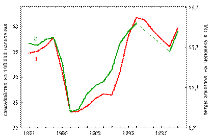

|
 |
|
|
АКАДЕМИЯ
УПРАВЛЕНИЯ
глобальными и региональными
процессами
социального и экономического
развития
ПРОГНОЗНО-АНАЛИТИЧЕСКИЙ ЦЕНТР
ОРУЖИЕ
ГЕНОЦИДА :
самоубийство
людей и его механизмы
2005 г.
Настоящая
работа Прогнозно-аналитического центра Академии Управления посвящена вопросам
геноцида населения. Авторы преследовали цель показать правду о самых очевидных
вредоносных вещах, о которых людям надо знать в первую очередь. Основными
средствами геноцида являются употребление алкоголя, табака и наркотиков.
Конечно,
все вредные «привычки» — всего лишь следствия (а не первопричины) того, почему
люди им подвержены. Первопричины, по которым люди прибегают к “помощи”
психотропных препаратов (в первую очередь это алкоголь и табак), надо искать в
современных источниках массовых стрессов, которым подвержено общество.
Понимая,
что приблизиться к избавлению от стрессов невозможно без знания той информации,
которая даётся в этой книге, авторы посвятили её преодолению у людей невежества
в элементарных вопросах, касающихся личной и общественной безопасности.
Работа
будет полезна самому широкому кругу читателей: в первую очередь всем
преподавателям средних и высших учебных заведений, школьникам, студентам.
ОГЛАВЛЕНИЕ
Введение.................................................................................... 2
“Нормальная” культура
ненормальных людей................. 2
ЧТО ТАКОЕ АЛКОГОЛЬ...................................................... 2
Последствия употребления
алкоголя.................................. 2
Общее воздействие алкоголя на организм......................... 2
Алкоголь и потомство......................................................... 2
Наследственность алкоголизма.......................................... 2
Алкоголь и дети.................................................................... 2
Что такое опьянение............................................................... 2
Механизм воздействия алкоголя........................................ 2
Механизм дурения от алкоголя........................................... 2
Гипоксия — алкогольная эйфория..................................... 2
Механизм разрушения клеток алкоголем........................... 2
Отступление
от темы 1
Некоторые аспекты биологии человека................ 2
Отступление
от темы 2
Работа мозга и алкоголь.......................................... 2
Безопасная доза.................................................................... 2
О пиве................................................................................... 2
Алкоголь и генетика............................................................. 2
Алкоголь + табак.................................................................. 2
Почему пьющие избегают трезвых...................................... 2
Правда и ложь об алкоголе.................................................... 2
Алкоголь: статистика и
демография................................... 2
Авторитетные мнения об алкоголе..................................... 2
Русские пословицы и поговорки........................................... 2
Дореволюционная история и
поэзия.................................... 2
А.К. Толстой «БОГАТЫРЬ»......................................... 2
Очнись, Россия......................................................................... 2
О наркотиках............................................................................ 2
КУРЕНИЕ ТАБАКА................................................................ 2
Состав табачного дыма.......................................................... 2
Зажигай… ........................................................................... 2
Химия, физика… радиация................................................. 2
“Химия” табака и организм................................................... 2
Никотин................................................................................ 2
Условный рефлекс.................................................................. 2
Опасная «гениальность»
курильщиков............................... 2
Творчество под угнетением табака.................................... 2
Шаманизм............................................................................. 2
Современный “шаманизм”.................................................. 2
Психофизиология “шаманизма”.......................................... 2
Естественное оглупление
«гениальных» курильщиков.......................................... 2
Память курильщиков............................................................ 2
Табак и нравственность....................................................... 2
Как бороться с курением..................................................... 2
Курение и репродукция.......................................................... 2
Органы репродуктивной системы...................................... 2
Курение и детородная функция.......................................... 2
Письмо курящей девушке................................................ 2
Это уже не модно..................................................................... 2
СЕКСУАЛЬНОЕ НЕВЕЖЕСТВО?
ЛИБО СОКРЫТИЕ ИНФОРМАЦИИ.............................. 2
Телегония.............................................................................. 2
Что говорит наука................................................................ 2
Целомудрие — здравомыслие............................................ 2
Красота, косметика, здоровье............................................. 2
Заключение............................................................................... 2
Врач пациенту:
— Регулярная выпивка является для вас медленным самоубийством!
— … а я, доктор, не тороплюсь…
Настоящая книга содержит
информацию о воздействии на организм и психику человека таких средств геноцида
как алкоголь и табак. Также в книге рассмотрены некоторые аспекты воздействия
других средств геноцида на человека и общество в целом.
Необходимость описания этих вопросов состоит в том,
что средства геноцида современное общество не воспринимает как опасность для
жизни, а приняло для себя в качестве нормы и тем самым занимается медленным самоубийством
как себя лично, так и своих потомков.
В этой книге вы найдёте информацию, которую не принято оглашать в открытой
прессе, поскольку продукты, которые распространяются среди населения как
разного рода дурманы (алкоголь, табак, наркотики) или как якобы безобидные
украшения (косметика) — являются средствами уничтожения этого населения и запущены
в распространение теми, кто претендует стать новыми хозяевами земель, после
того, как по их планам, эти земли будут опустошены от населявших их людей,
обречённых на вымирание вследствие употребления дурманов и других средств
геноцида. Также распространяемые в обществе дурманы являются средствами лёгкой
наживы для разного рода мафий, которым население само добровольно и ежедневно
несёт свои денежки, примерно так, как в фильме про Буратино: «На
пьяницу не нужен нож, ему немножечко нальёшь и делай с ним что хошь!».
При написании этой книги были использованы разнообразные материалы[1], которые почти не известны широкой публике и редко
появляются в открытой печати. Широко представлена естественнонаучная, медицинская,
социологическая, статистическая информация по заявленным вопросам.
Для пьянства есть такие поводы:
Поминки, встреча, праздник, проводы,
Крестины, свадьба и развод,
Мороз, охота, Новый год,
Выздоровленье, новоселье,
Печаль, раскаянье, веселье,
Успех, награда, новый чин.
И просто пьянство, без причин![2]
Мы все с детства слышали от
учителей и родителей, что пить и курить вредно. Если же кого-нибудь из них спросить:
«А
в чём же состоит вред?» Далеко не все ответят на этот вопрос. А раз
так, то и доверия ко взрослому поколению, каким бы авторитетным оно не было —
мало. Мало ли чего говорят… Сами вот зачастую и пьют и курят, а своим детям
говорят что вредно, не зная как это объяснить. Тем более что при первых
выпивках, первых затяжках сигаретой появляются новые неизвестные ощущения… и
вреда молодой организм от этого вроде бы как и не ощущает. Зато в компаниях есть
с чем “потусоваться”, чем похвастаться, чем повеселиться…
Последнее — фактор воздействия культуры общества на людей — одна из главных
причин, вследствие которой считается, что алкоголь, табак, а зачастую и секс «с
кем захочу» — это всё якобы нормальные привычки и стереотипы, без которых и
жить скучно, и те, кто этого не делает, якобы ненормальные.
Но проходят годы, даже не
несколько десятилетий, а как правило несколько лет с момента первого стакана,
первой затяжки, первой спонтанной молодёжной “случки” «с кем попало и по пьяни»,
и окружающие (кто ведёт более здоровый образ жизни) начинают замечать у своих
знакомых и родственников, кто несколько лет назад начал выпивать и курить — стандартный набор отклонений в психике,
отклонений в поведении. В первую очередь, как правило, это касается оглупления (то есть потери части интеллектуальных
возможностей, которые ещё несколько лет назад могли бы развиваться), потери памяти, рассеянности, нервозности, хмурости,
возникновения ранее никогда не проявлявших себя болезней… вплоть до желания
скорее покончить жизнь.
Так, наркоманы живут в среднем
около пяти-шести лет со дня принятия первой дозы. Алкоголики — 10-15 лет.
Регулярно курящие «по одной – две пачки в день» могут протянуть
несколько больше. Но в современной молодёжной среде этим мало кого напугаешь. Ответ
как правило стандартный: «а мне плевать:
сколько проживу, столько и проживу — зато как все и весело».
Действительно, стандартные общекультурные
неписанные стереотипы поведения именно таковы: «встречу надо обмыть»; «если
двое встретились, то сразу закурили — беседа идёт лучше»; «в коллективе
праздник: какой же праздник без алкоголя “до свинячьего визга” либо “умеренная
выпивка” (у кого как принято)»; «кто не принимает участие в коллективной пьянке
— тот опасен для коллектива и его надо стыдить, либо выгнать»; и так далее.
Но не во всех культурах такое было
общепринято и поддерживается в современности. 2/3 населения Земли не
употребляют никакую заразу: ни табачную, ни алкогольную. 41 государство мира
сегодня живёт в «сухом законе». 80 государств живут в законе трезвости, когда
на пьющего человека все смотрят как на ненормального.
Что касается алкоголя, то на Земле
насчитывается на сегодня до 700 крупных трезвых народов. Если посмотреть на
карту мира, то вся срединная часть Земли от Севера Африки (Марокко) до Филиппин
— это трезвый мир. Это, в том числе, Китай и Индия. В Китае сегодня на
душу населения в год приходится 50 грамм потребления чистого 100% алкоголя (спирта,
вычлененного из всего потребляемого алкоголя). В России сегодня этот же показатель
составляет 20 – 25 литров ежегодного душевого потребления чистого 100% алкоголя.
В Норвегии,
например, введена система учёта количества потребляемого алкоголя каждым гражданином.
Тех, кто хоть сколько регулярно выпивает, стараются не брать на работу в
престижные фирмы. В России как правило наоборот: несмотря на наличие часто
встречающихся вывесок при приёме на работу «…без вредных привычек», если человек
действительно «без вредных привычек» устроился и хорошо работает, то всё равно
«по случаю» ему обязательно предложат отметить этот «случай» в коллективе,
который на поверку оказывается с целым спектром вредных привычек — и в первую
очередь руководство этого коллектива, которое и учит новичков, как надо
отмечать праздники — попробуй откажись.
В общем в российском обществе
общепринято пить, гулять и веселиться «как все», и если вдруг вы не пьёте —
горе вам: вы «ненормальный». Однако, вот потеря интеллекта, памяти, рассеянность,
шизофрения, разного рода психопатология (приводящая зачастую к преступным деяниям)
свойственна как раз-то пьющим людям (как регулярно, так и “умеренно”) и детям
пьяниц, наркоманов и алкоголиков. Так
кто же нормальный и что же нормально?
Но ныне, конечно, Россия
Жидами на откуп взята –
За тридцать серебряных денег
Они “заказали” Христа[3].
Россия не первая цивилизация, медленно вымирающая[4]
под
воздействием алкоголя и прочих ядов на генетику и интеллект населения. Если
заглянуть в историю, то можно увидеть силу этого оружия на примере покорения
Америки и борьбе пришельцев-«цивилизаторов» с аборигенами-индейцами. Здоровая
психика и сопутствующая ей интуиция делали аборигенов неуязвимыми даже в
условиях превосходства оружия пришельцев-«конкистадоров»[5].
Европейцами была завезена веками проверенная на работоспособность «огненная
вода» — новейшее оружие геноцидного характера. После предварительного
привыкания к алкоголю, индейцам были вручены самогонные аппараты с инструкциями
по их применению. Дальнейшее покорение индейцев не заставило себя долго ждать.
Сегодня сохранившихся потомков индейцев в США показывают как реликвии в
специально устроенных для них резервациях.
Начнём с простого и общеизвестного. В состав пива, вина и
водки входит алкоголь — этиловый спирт
(этанол). Его химическая формула C2H5OH. Это проходят в средней
школе, но к сожалению в средней школе детям не сообщают, что алкоголь является наркотическим смертельным
ядом. Также не принято и в среде молодёжи и взрослого населения считать
покупаемую бутылку водки, вина или пива смертельно действующим наркотиком. Но
не всё что принято — верно. Тем более, что уже давно — с 1972 года — известен
официальный ГОСТ на этиловый спирт (подчёркивание в ГОСТе — наше).
|
ГОСУДАРСТВЕННЫЙ СТАНДАРТ СОЮЗА ССР ——————————————————————— СПИРТ ЭТИЛОВЫЙ РЕКТИФИКОВАННЫЙ
ТЕХНИЧЕСКИЙ ТЕХНИЧЕСКИЕ УСЛОВИЯ ГОСТ 18300–72 Издание официальное ГОСУДАРСТВЕННЫЙ КОМИТЕТ СТАНДАРТОВ
СССР Москва ——————————————————————— Утвержден и введен в
действие Постановлением Государственного комитета стандартов Совета Министров
СССР от 26.12.1972 № 2329 ——————————————————————— 5. ТРЕБОВАНИЯ БЕЗОПАСНОСТИ 5.1 Этиловый спирт — легко
воспламеняющаяся, бесцветная жидкость с характерным запахом, относится к
сильнодействующим наркотикам, вызывающим сначала возбуждение, а затем паралич
нервной системы. |
Вот бы рекламировать пункт 5.1 этого ГОСТа по телевидению каждые 15 минут во время показа популярных фильмов по всем каналам вместо рекламы пива и скрытой рекламы водки и вина!
Это полное определение этилового спирта дано в 1972 году.
К сожалению, под напором алкогольно-табачно-наркотической мафии это
определение постепенно изменяло свою истинную сущность, что наглядно
подтверждают следующие данные, выписанные по хронологии:
1982 год:
Этиловый спирт — легко воспламеняющаяся, бесцветная жидкость с
характерным запахом, относится к сильнодействующим наркотикам (ГОСТ 18300 – 72
п.5.1 в изменённой редакции 1982 г. и ГОСТ 5964 – 82
п.4.1.).
1993 год:
Этиловый спирт — легковоспламеняющаяся, бесцветная жидкость с
характерным запахом (ГОСТ 5964 – 93 п.7.1.).
Вот так, за 20 лет, полностью исчезли из первоначального
определения: «относится к сильнодействующим
наркотикам, вызывающим сначала возбуждение, а затем паралич нервной системы».
И получилась, как бы безобидная для здоровья человека жидкость.
В словарях также можно найти обрезанное определение алкоголя:
Алкоголь – одноатомный
спирт, вообще вино, спиртные «напитки». («Толковый словарь русского языка»,
С.И.Ожегов, М. 1997 г., стр. 22, РАН).
А надо вернуть прежнее определение:
Этиловый спирт — это
легковоспламеняющаяся, бесцветная жидкость с характерным запахом, относится к
сильнодействующим наркотикам, вызывающим сначала возбуждение, а затем паралич
нервной системы (ГОСТ 18300 – 72 п. 5.1.).
Слабо депутатам Государственной Думы вернуть прежний ГОСТ и принять закон о пропаганде в СМИ здорового образа жизни и включить в бюджет России смету расходов на антирекламу алкоголя и табака?
— Слабо! Ведь тогда все мафии, кормящиеся за счёт здоровья населения России, будут обанкрочены: это и алкогольная мафия, и мафия так называемого “здравоохранения” (кормится от болезней населения: чем больше больных, тем больше пациентов), и аптекарская мафия (тоже существует за счёт того, что население становится всё более нездоровым), и мафия сфер культуры, торговли и услуг (так с каждого пивного праздника: мафии — сверхприбыль, населению — беды). А мафия СМИ? — Реклама приносит баснословные прибыли: кто добровольно откажется от них? Каждый депутат ГД РФ — представитель мафиозного лобби. И крутое мафиозное лобби плотно село на шею российским доверчивым «в меру» и «не в меру» пьющим и курящим труженикам.
Хотите кормить мафии вместо того, чтобы иметь здоровые семьи и жить в достатке — работайте на “благополучие” мафий, а они будут тянуть с вас последние деньги, поскольку алкоголь и табак — являются наркотиками, от которых люди становятся зависимыми до такой степени, что несут последнее из дома за водку и табак.
Никакие депутаты и правительства не в состоянии полномерно повлиять на основные мафии в России, которые поддерживают геноцид населения, пока население добровольно не начнёт трезветь, поняв всю пагубность употребления наркотических средств.
Таким образом: если вам не нравится, что мафии наживаются на вас, на населении, то в первую очередь сами перестаньте добровольно отдавать им бóльшую часть своей зарплаты — за которую они вам ещё и помогают медленно умирать. Как только бóльшая часть населения это поймёт — в России не окажется благоприятной среды для продолжения деятельности даже самых крутых мафий. Правильно ли уповать на власть, мол она должна силой справиться с коррупцией, которая восходит к мафиозному лобби, и одновременно самим же финансировать мафии и оплачивать услуги деградировавшей и разлагающей население сферы “здравоохранения”, культуры, торговли и СМИ? Это так, потому, что люди сами финансируют мафии, покупая товары геноцидного характера и в первую очередь — алкоголь и табак: болезни же прямое следствие нездорового образа жизни, поэтому после проплаты алкогольных и табачных мафий вместе с их рекламой непременно начинается проплата мафии “здравоохранения” и аптек.
Мафии далеко не одиноки: они имеют поддержку СМИ. Распространению
пьянства в значительной мере способствует психологический климат, в котором живёт
и трудится человек. При этом решающую роль играет общественное отношение к
употреблению алкоголя, которое формируют средства массовой информации. Люди
начинает пить, потому что не знают правды о вине, так как вокруг спиртных
напитков всё время создаётся и воспроизводится ложная реклама с целью наживы мафий.
Все алкогольные
продукты обязательно содержат этиловый спирт. Например, что такое
пиво? 100 грамм пива — это 6–12 грамм яда, этилового спирта, “одетого”
в хмель, жито, дрожжи и другие составляющие.
Что такое вино? 100 г вина — это 20 г яда, этилового спирта, “одетого” в виноградное, яблочное и др. сусло (соки). Разные сорта винограда, яблок — это и есть разные сорта вина, но основная составляющая их яд — этиловый спирт — один на всех. 100 г шампанского — это 17 г яда, а остальное — разные экстракты.
Что такое водка? 100 г водки — это
40 г яда — этилового спирта — “одетого” в 60 г воды и разные экстракты.
Что такое коньяк? 100 г коньяка —
это 40 г яда, “одетого” в цвет, который вытянут из дерева дуба и 60 г
воды и различные экстракты.
Что такое самогон? 100 г самогона
это от 20 до 70 г яда, “одетого” в воду и сивушные масла.
“Одеванием” этилового
спирта в различные “одежды”, создаётся его привлекательность. Вспомните,
как начиналось ваше приобщение к алкоголю. Явно не со спирта. Вы сначала пили
пиво, шампанское, вино. А состояние “кайфа”, “балдёжа” вы получали только от этилового
спирта, который находится в алкоизделии. Затем вам стало казаться, что этого
мало, вы начинали употреблять спиртное с бóльшим содержанием спирта — водку,
а потом и в бóльших количествах.
Если человек единовременно принимает более 8 грамм этилового
спирта на 1 кг веса, то он от этого яда умирает. Например, если человек
весом 70 кг примет 560 грамм чистого спирта сразу и ему не дадут
«вырвать», то его этот спирт убьёт. Этот яд приводит человека в состояние
наркоза. Наркозная доза (для получения эффекта наркоза — когда не чувствуется
боль) равна 4 — 6 грамм на 1 кг веса, то есть 280 — 420 грамм
для человека, весом в 70 кг.
Мало кто знает, как алкоголь производится. Издревле люди научились делать алкоголь следующим образом. Брали сосуд и в него наливали виноградный сок. Это водный раствор витаминов, сахаров, ферментов. После чего в сок запускали дрожжевые грибки (дрожжи). Либо дрожжевые грибки воспроизводились в соке сами, после того, как виноград мяли и давали постоять. То есть способов запуска процесса брожения много. А дрожжевые грибки они как бы очень большие «сладкоежки». Если смотреть на них под микроскопом, то видно, что они, находясь в растворе, поедают сахар, а сзади у них из под клоаки как раз выходит этиловый спирт (C2H5OH).
Всякий, кто изучал химию, знает, что молекула сахара
(глюкозы) состоит из 6 атомов углерода, 12 атомов водорода и 6 атомов кислорода
— C6H12O6.
Ферменты дрожжевых грибков как бы рубят эту сложную молекулу на отдельные
куски, соединяя их затем в новые молекулы. Из C6H12O6 образуются две молекулы углекислого газа
— 2 CO2 (это пузырьки,
которые мы видим в бродящей жидкости). Оставшиеся атомы соединяются в две молекулы
спирта (2 C2H5OH).
Таким образом алкоголь есть не что иное как моча дрожжевых грибков или по научному экскременты. И вот эти дрожжевые грибки пожирают сахар, мочатся-мочатся своей мочой, и когда концентрация мочи в сосуде (бочке) достигает 11 %, то как всякий живой организм, они в собственном дерьме (которое по концентрации спирта превышает возможности для продолжения жизнедеятельности живого организма) захлёбываются и подыхают. Если это пойло тут же разливают по бутылкам, то называется оно «вино сухое ординарное». А если это пойло два года отстаивают, отцеживают подохшие трупики грибков и сливают только мочу с остатками сока, то это пойло уже называется «вино сухое марочное». Стоит оно в два раза дороже, орден на бутылку прилепят, медаль, и продаётся оно намного успешнее.
Более простым способом «для всеобщего быстрого опьянения» этиловый спирт получают при соединении сахара, воды и дрожжей. Методом перегонки (получения спиртового концентрата: отделения молекул спирта от водно-сахарно-трупного раствора) образующейся через две недели браги получают высокоградусный алкогольный продукт, так любимый в России многими пьяницами.
Особый интерес представляет собой процесс приготовления «напитка для дам и “элит”» — шампанского. Шампанское делают следующим оригинальным образом. Берут зелёную толстостенную бутылку и заливают в неё букет виноградных соков пяти разных сортов. Основной сорт винограда — «шампань». В зависимости от соотношения этих соков получают виды шампанского: «сухое», «полусухое», «полусладкое», «сладкое» и «брют». Заливают соки, запускают дрожжевые грибки и временно бутылку закрывают специальной деревянной пробкой. В горах, где производят шампанское, вырыты длинные штольни, вдоль которых раскладывают бутылки. Штольню закрывают, опечатывают. Круглый год в штольне поддерживается температура +14о. И два года в полной темноте и покое грибки перерабатывают сахар в алкогольное зелье[6]. И когда через два года процесс уже подходит к концу, штольню открывают и закатывают туда мощный прожектор. И врубают яркий и сильный свет. От неожиданности и страха эти грибки прохватывает “понос”, и они от этого страха и поноса дохнут. Но прежде чем подохнуть, они со страха ещё и “газуют”. Так в бутылке образовываются газы. И вот многие в шампанском почему-то ценят эти самые газы: чтобы выпив шампанского шибануло в нос газами. Так что самое обожаемое у дам и “элит” (то, что называется особо «культурным» питиём) — это таким вот способом получаемые газы. Но теперь то каждый знает, что газы — это прощальный привет от подыхающих грибков. Они со страха перед смертью “поднапукали” в вино, ну а дамам и “элитам”с этого “пука” на праздник тоже перепало “радости” и наслаждений.
Так и вся «нормальная» манера “культурного” пития на поверку оказывается всего лишь издержками (ненужными и опасными для здоровья народа отходами) культуры — тем, что получается от вредной переработки изначально хороших продуктов: человек рождается здоровым и добровольно извращает (перерабатывает) свою физиологию не свойственными для употребления людей издержками культуры, которые к сожалению поддерживаются представителями всегда самой “передовой” «интеллигенции», и в первую очередь — либерально-духовной «интеллигенции», которая как раз-то и любит алкогольные пойла типа шампанского. И здесь очень симптоматичен следующий момент. Как мы уже выяснили, секретом приготовления самого “элитного” напитка являются отходы и газы грибков. И эти же газы являются как бы знаком их прощального привета. Таким образом, алкоголь — это издержки вредоносной культуры, появляющиеся как предсмертный прощальный привет от тех, кто их порождает, для употребления другими…
Интересно, что дрожжевые грибки могут переработать в алкоголь не обязательно сахар, но и вообще любую органику. Например, на гидролизных заводах перерабатывают древесные опилки. Замачивают опилки, запускают дрожжи. Дрожжам есть нечего — едят опилки и туда же испражняются. В результате получают гидролизный спирт, гидролизную водку. Эти грибки перерабатывают в алкоголь даже человеческое дерьмо. Последнее как правило имело место во время войн, когда иного сырья для приготовления зелья не имелось, а к алкоголю пристрастились многие.
Не пейте
спиртных напитков.
Пьющим — яд,
Окружающим — пытка[7].
Попадая в организм человека, этиловый спирт диффундирует (всасывается
и распространяется) через стенки желудка и кишечника, быстро достигает печени и
появляется в крови. Состояние опьянения зависит от концентрации спирта в крови.
Содержание спирта в крови до 0,5 г/л обычно не вызывает заметных сразу изменений. При концентрации
спирта в 0,5–1 г/л заметного опьянения
не наблюдается, но нервные центры
перестают нормально функционировать. Это очень опасное состояние, особенно
для водителей автомашин. По результатам многочисленных медицинских обследований
вероятность аварий в этом случае увеличивается в 14 раз. При накоплении в крови
2 г/л степень опьянения
возрастает: походка становится нетвёрдой,
речь несвязной.
Алкоголизм сопровождается глубокими изменениями в половой
сфере. Наблюдается недоразвитие половых
клеток как у мужчин, так и у женщин-алкоголиков.
«Лёгкая» степень алкогольного
опьянения определяется прежде всего изменением настроения. В это время человек
становится беспричинно весёлым, настоящее и будущее рисуется ему в радужном
свете, он склонен к переоценке своих сил, возможностей и способностей.
Неприятности и трудности кажутся легко преодолимыми, пустячными, не
заслуживающими серьёзного внимания. Опьяневшему свойственно ослабление способности ограничивать желаемое
от возможного и допустимого в данной ситуации.
У опьяневшего наблюдаются следующие отклонения:
· У него ухудшается способность к активному сосредоточению внимания.
· Он легко отвлекается от выполняемого дела, часто переключает внимание на случайные малозначительные объекты.
·
У него ухудшается способность к запоминанию,
преобладают поверхностные ассоциации.
При нарастании степени опьянения у человека продолжают:
·
Снижаться функциональные способности
зрительного и слухового анализаторов.
·
Увеличивается время, необходимое для
опознания предъявляемых сигналов, принятия решения, осуществления двигательной
реакции.
·
В большей мере нарушается координация движений.
·
Увеличивается количество ошибок при решении
каких-либо задач, при выполнении привычных рабочих операций.
Таким образом, с одной стороны, опьяневший склонен субъективно — под временным воздействием алкоголя — переоценивать
свои возможности и недооценивать серьёзность окружающей обстановки, с
другой — у него снижаются возможности к
выполнению работы. Эти своеобразные “ножницы” приводят к необдуманным поступкам, ошибкам в производственной
деятельности. С нарастанием опьянения импульсивное
поведение и количество ошибок в рабочей деятельности нарастают.
Состояние опьянения длится обычно несколько часов, после
чего настроение постепенно нормализуется, а ощущение бодрости, как правило,
сменяется вялостью и сонливостью.
Изменения психических функций, нарушения поведения и координации движений появляются через некоторое время (примерно через час) после приёма спиртного, когда концентрация алкоголя в крови достигнет определённого уровня, и исчезают при её снижении. Однако и после исчезновения выраженных признаков опьянения способности ряда функциональных систем организма, определяющие физическую и психическую работоспособность, продолжают оставаться значительно сниженными. Частично восстанавливаются они постепенно, в течение многих часов, дней, месяцев...
«Средняя» степень опьянения
характеризуется появлением более выраженных расстройств. Повышенное настроение, беспечность, благодушие легко сменяются обидами,
раздражительностью, злобностью, которые проявляются в высказывании претензий, ругани,
агрессивных действиях. Характерна неспособность сдерживать свои чувства и желания.
В состоянии «среднего» опьянения бывает следующее:
·
Часто совершаются роковые поступки.
·
Своим телом пьяный управляет с трудом.
·
Координация движений бывает нарушена до
такой степени, что он не может идти по прямой линии.
·
Язык становится неповоротливым, речь —
чрезмерно громкой, медленной, что связано со снижением в этот период слуха.
·
Пьяный испытывает затруднения в подборе
слов, отдельные слова и фразы повторяет несколько раз.
·
При средней степени опьянения часто
ощущаются головокружение, звон в ушах.
·
Могут появляться иллюзорные восприятия окружающего,
грубые ошибки в оценке величины предметов, расстояний между ними.
·
На смену веселью и бодрости приходят
снижение интереса к окружающему, чувство усталости, слабость, постепенно нарастает
сонливость.
·
Опьянение средней тяжести постепенно переходит
в сон.
Об изменениях работоспособности в состоянии опьянения
средней степени не приходится говорить, так как это состояние несовместимо с выполнением любого вида работ. Пьяный
человек способен только ломать, портить, может стать виновником несчастного
случая, аварии, пожара.
Длительное снижение работоспособности наблюдается и после опьянения. Для полного восстановления функций нервной и сердечно-сосудистой систем, мышечной силы и выносливости, как правило, требуются не одни сутки, не один месяц и даже не один год.
Частичное физиологическое восстановление — дело
нескольких дней (а не часов). Это объясняется тем, что алкоголь вызывает
изменения в окислительно-восстановительных процессах, протекающих в тканях
организма. После выведения алкоголя из организма в крови ещё значительное время
наблюдается снижение уровня сахара и повышение её кислых свойств. Эти изменения
внутренней среды организма сопровождаются проявлением ряда субъективных и
объективных симптомов: головной болью,
повышенной утомляемостью, жаждой, неустойчивым депрессивным настроением, потливостью,
дрожанием конечностей, усиленным сердцебиением, колебаниями артериального давления,
снижением мышечной силы, нарушением координации движений.
«Тяжёлая» степень опьянения характеризуется появлением симптомов
глубокого отравления алкоголем. Часто наступает бессознательное состояние, которому могут предшествовать головокружение,
тошнота, рвота, звон в ушах, чувство онемения различных участков тела, глубокое
нарушение координации движений, снижение тонуса мышц.
Бессознательное состояние — алкогольная кома — не всегда заканчивается благополучно. Для этой стадии опьянения характерен внешний вид больного. Он не реагирует не только на окрик, но даже и на болевые раздражения, его лицо приобретает вначале багрово-красный, а затем бледно-синюшный цвет.
Алкоголизм — тяжёлая
хроническая болезнь, в большинстве своём трудноизлечимая. Она развивается
на основе регулярного употребления алкоголя и характеризуется особым патологическим
состоянием организма: неудержимым влечением к спиртному,
изменением степени его переносимости и деградацией личности. Для алкоголика опьянение представляется
наилучшим психическим состоянием. Это влечение не поддаётся разумным доводам прекратить пить. Алкоголик направляет
всю энергию, средства и мысли на добывание спиртного, не считаясь с реальной
обстановкой (наличие денег в семье, необходимость выхода на работу и т.п.). Раз
выпив, он стремится напиться до полного опьянения, до беспамятства. Как
правило, у алкоголиков утрачивается рвотный рефлекс и поэтому любое количество
выпитого остаётся в организме. В связи с этим говорят о повышенной переносимости
алкоголя. Но на самом деле это — патологическое
состояние, когда организм утратил способность борьбы с алкогольной
интоксикацией путём рвоты и других механизмов защиты.
Зачастую некоторые пьющие с гордостью отмечают у своих товарищей повышенную устойчивость к алкоголю, считая, что это связано с физическим здоровьем. А на самом деле повышенная устойчивость к водке — первый признак начинающегося алкоголизма, симптом серьёзного заболевания.
На поздних этапах алкоголизма переносимость спирта
внезапно понижается и у заядлого алкоголика даже малые дозы вина вызывают тот
же эффект, как и большие порции водки в прошлом. Для этой стадии алкоголизма
характерно тяжёлое похмелье после приёма алкоголя: плохое самочувствие,
раздражительность, злобность. Во время так называемого запоя, когда человек пьёт
ежедневно, на протяжении многих дней, а то и недель, патологические явления настолько
выражены, что для их ликвидации
требуется медицинская помощь.
«Спирт так же консервирует душу и ум пьяницы, как он консервирует анатомические препараты» — писал Л. Толстой. Конечной стадией такой консервации является белая горячка — одно из характерных осложнений во время запоя.
Вот один из реальных случаев, описанный доктором медицинских
наук Г.М.Энтиным. Больной 26-ти лет после запоя “услышал” угрожающие голоса
собутыльников: «Деньги в долг брал, не отдавал, сам пил, нас не угощал, давайте
его кончим!». Больной вроде бы понимал, что это ему кажется, что собутыльников
нет в его комнате, но тем не менее испытывал сильный страх. Вышел из дома, сел
в троллейбус. Здесь опять услышал: «Ну, тут-то он от нас не уйдёт, двери
закрыты, сейчас его и кончим!». Больной бросился к двери, выбил её плечом, на
ходу выскочил из троллейбуса и побежал. «Голоса» кричали вдогонку: «Не уйдёшь,
все равно поймаем!» Больной забежал в магазин, попросил продавщицу показать ему
опасную бритву. Раскрыл её, приготовился обороняться от «преследователей»,
которые, судя по голосам, находились где-то рядом. Почувствовав их приближение,
больной бросился к двери. Услышал невероятно громкий хохот и голоса: «А вот
здесь-то мы его и кончим!» Дверь оказалась закрытой. Не видя выхода, больной в
отчаянии перерезал себе бритвой горло. Так алкоголь явился причиной очередного акта
самоликвидации пьющего…
Белая горячка — наиболее часто встречающийся алкогольный психоз. Она возникает обычно в состоянии похмелья, когда у пьяницы появляются безотчётный страх, бессонница, дрожание рук, кошмары (погони, нападения и т.п.), слуховые и зрительные обманы в виде шумов, звонков, движения теней. Это предвестники белой горячки. Её симптомы особенно выражены ночью. У больного появляются яркие переживания устрашающего характера. Он видит ползающих вокруг насекомых, крыс, нападающих на него чудовищ, ощущает боль от укусов, ударов, слышит угрозы. Он бурно реагирует на свои галлюцинации, обороняется или бежит, спасаясь от преследования.
Выявлена форма эпилепсии, которая обусловлена исключительно
злоупотреблением спиртными напитками. Судорожные припадки чаще наступают в
состоянии похмелья и прекращаются при воздержании от спиртного. Во время
приступа лицо больного бледнеет, он теряет сознание и падает. Больной бьётся
головой об пол, может получить различные увечья. При так называемой малой алкогольной
эпилепсии дело ограничивается тем, что больной теряет сознание на несколько секунд:
вдруг прекращает говорить, замирает, но, не успев упасть, приходит в себя.
Таким образом, независимо от формы пьянства каждый приём
алкоголя вызывает выраженные изменения в организме, а последующие и всё бóльшие
дозы спиртного ведут к психической деградации личности и общему заболеванию.
Среднестатистически продолжительность жизни
женщин-алкоголиков на 10%, а мужчин-алкоголиков на 15% меньше, чем непьющих. Но
это только внешние признаки вреда от алкоголя.
У женщин одним из характерных последствий алкоголизма
является неспособность вскармливать
детей грудью. По наблюдениям специалистов, этот порок встречается у 30-40%
женщин, регулярно потреблявших алкоголь. Значительное влияние оказывают
спиртные напитки и на детородную функцию. Во-первых, алкоголизм приводит к
раннему старению. Пьющая женщина 30-ти
лет, как правило, выглядит старше, а алкоголичка к 40 годам превращается в
старуху.
Об отрицательном влиянии вина на потомство известно с древности.
Задолго до наших дней было отмечено, что у пьющих людей чаще бывают мертворождённые дети и выкидыши. Если
же ребёнок родился живым, то нередко он отстаёт
в развитии и растёт умственно неполноценным.
Не случайно законы Древней Греции и Рима запрещали
молодым людям пить спиртное. Запрещалось пьяному мужу приближаться к жене. Был
издан закон о недопустимости употребления вина новобрачными.
На Руси также с давних пор считалось плохим признаком
пить вино на собственной свадьбе. Связь здоровья детей с состоянием родителей
подмечена и в других странах.
Каков механизм влияния вина на развитие
плода?
Здоровье новорождённых зависит от условий формирования
половых клеток родителей, внутриутробного развития, течения родов и, наконец,
условий послеродового периода. На всех этих этапах контакт плода и новорождённого
с алкоголем опасен своими физическими и психическими последствиями, причём риск уродства и заболевания тем выше, чем
больше степень воздействия алкоголя на живой организм. Конкретные формы
поражения определяются также тем, на каком этапе развития происходит
алкогольная интоксикация.
Выяснено, что действие алкоголя на этапе внутриутробного
развития приводит к недоразвитию плода или отдельных его органов (уродства),
повышенной смертности новорождённых.
Алкоголь, попадающий в детский организм с молоком матери,
вызывает нервные расстройства (в том числе нарушения психики, умственную
отсталость), заболевания органов пищеварения (главным образом печени), сердечно-сосудистой
системы и т.д.
Описано много случаев алкогольного отравления грудных
детей из-за того, что их матери пили вино и пиво. Для чего это они делают? На
этот вопрос матери пострадавших детей в большинстве случаев отвечали: чтобы
было больше молока. Такая «стимуляция» продукции молока кончалась весьма
плачевно: у детишек возникали судорожные
припадки, а иногда даже развивались настоящие приступы эпилепсии.
Ещё в конце прошлого века французский врач Демме, изучая
потомство семей алкоголиков, установил, что почти 50% их детей погибли в раннем
детстве, а из оставшихся 10% страдали эпилепсией и водянкой головы, 12% росли
идиотами и только 10% были здоровы.
Женщина, употребляющая спиртное... Это уже само по себе бедствие. Недаром в народе говорится: «Муж пьёт — полдома горит, жена пьёт — весь дом горит». Но как себя чувствует мать, зная, что её ребенок родился неполноценным по её вине?
— Мать после этого всю жизнь мучается.
Так, у одной женщины (вовсе не безнадёжной алкоголички)
родился ребенок с тяжёлым психическим расстройством. Врачи выяснили причину: на
протяжении всей беременности будущая мать пила коктейли, в которых содержался
алкоголь. Всего несколько граммов алкоголя, растворённого в тонизирующем напитке —
и тяжёлые психические расстройства у малыша, который будет обречён до конца
своей жизни!
Женщине нельзя пить ни грамма спиртного. Исключений быть не должно!
Это как закон! Женщина, готовящаяся стать матерью, не может не знать, что в
начале своего развития плод ещё не имеет самостоятельного кровообращения и что
при приёме любых доз алкоголя концентрация его в крови матери и плода одинакова.
Наследование психической неполноценности от родителей-алкоголиков не вызывает сомнений. Более сложен вопрос, передаётся ли по наследству предрасположение к алкоголизму. Древнегреческий писатель Плутарх писал, что «пьяницы рождают пьяниц». Однако только с успехами современной генетики появилась возможность проверить это предположение.
Медицинская генетика для доказательства наследственности
в происхождении того или иного признака пользуется различными приёмами. Но в
любых случаях собираются сведения о родословных семей, включая далёких предков
и дальних родственников. Эти сведения систематизируются и анализируются, на
основании чего делаются те или иные выводы. Если какое-то заболевание обусловлено
наследственными причинами, то среди родственников больного патологических
изменений будет во много раз больше, чем среди всего населения (статистически
достоверные отличия).
Наиболее «чистые» условия опыта создаются при изучении наследственности
близнецов. Если одному из близнецов пришлось
жить в обстановке трезвенности, а другой попал в пьяную компанию, то первый
обычно не становится алкоголиком, тогда как риск алкоголизма у второго резко
возрастает.
Статистико-генетическими исследованиями доказано, что сам алкоголизм генетически не передаётся, передаётся
только склонность к нему, вытекающая из особенностей характера, полученного
от родителей. А быть человеку
алкоголиком или не быть — этот вопрос решается конкретной жизненной ситуацией,
т.е. условиями внешней среды. В развитии пьянства у детей алкоголиков решающую
роль играют дурные примеры родителей, обстановка пьянства дома, в семье.
Стоит авторитетному члену семьи, скажем дедушке, убедительно осудить сына-алкоголика,
как сразу же поднимаются шансы, что внук будет трезвенником.
Итак, алкоголизм не наследуется, и борьба с ним зависит от воли и поведения пьющего человека. Роль наследственности в возникновении алкоголизма может быть только косвенной: генетически передаётся какая-то черта характера или заболевания, способствующая пониженной устойчивости к «пьяному быту».
У здорового ребёнка не может быть влечения к спиртному.
Напротив, вкус и запах алкоголя вызывают у него отвращение. К употреблению алкогольных
напитков детей толкает любопытство. Бывают даже трагические случаи смертельного
отравления детей спиртным.
Алкоголь, попадая в организм ребёнка, быстро разносится
кровью и концентрируется в мозгу. Вследствие повышенной рефлекторной возбудимости
даже небольшие дозы спиртного вызывают у детей бурную реакцию, тяжёлые симптомы
отравления. При систематическом поступлении алкоголя в детский организм
страдает не только нервная система, но и пищеварительный тракт, зрение, сердце.
Печень не справляется с алкогольной нагрузкой, и происходит её перерождение.
Страдают и органы внутренней секреции, прежде всего щитовидная железа, гипофиз,
надпочечники. В результате на фоне алкогольной интоксикации у пристрастившихся
к спиртным напиткам подростков может развиться сахарный диабет, нарушение
половой функции и т.д.
Особо следует сказать об остром алкогольном отравлении.
Такое отравление представляет большую опасность для детей, организм которых
высоко чувствителен к токсическим веществам. Особенно ранима нервная система, головной
мозг. Опьянение у детей дошкольного и раннего школьного возраста развивается
настолько бурно, что бывает трудно спасти ребёнка от смертельного исхода.
“Душевно” посидели,
Попили всласть вина.
Наутро протрезвели —
Нет мозга половины!
Что такое опьянение? Почему пьяному человеку хочется спать? Почему довольно часто на следующее утро происходит потеря памяти? Почему утром мучает жажда? Почему недопустимо пьяное зачатие? Почему пьяниц называют «синими» или «синяками»? Почему у принявших алкоголь наблюдается покраснение носа, ушей, шеи? Почему у выпивших алкоголь наступает веселье, эйфория?
Нет в человеческом организме ни одного органа, который бы не разрушался алкоголем. Но самые сильные изменения и в самую первую очередь наступают в человеческом головном мозге. Именно там этот яд имеет свойство накапливаться. После приёма кружки пива, стакана вина, 100 граммов водки — содержащийся в них спирт всасывается в кровь, с кровотоком идёт в мозг и у человека начинается процесс интенсивного разрушения коры головного мозга.
Механизм разрушения очень простой. В 1961 году трое американских учёных-физика Найсли, Маскауи и Пеннингтон рассматривали в изготовленный ими длиннофокусный микроскоп человеческий глаз. Они через зрачок сфокусировались на мельчайших сосудах сетчатки глаза, сбоку дали подсветку и физикам впервые в истории науки удалось заглянуть внутрь сосуда человека и увидеть, как по сосуду течёт кровь.
Что же увидели физики? Они увидели стенки сосуда, увидели лейкоциты (белые кровяные тельца) и эритроциты (красные кровяные тельца, которые переносят кислород от лёгких к тканям, а углекислый газ — в обратном направлении)[8]. По сосудам текла кровь, всё снимали на плёнку. В один из дней физики посадили к микроскопу очередного клиента, глянули ему в глаз и ахнули. У человека по сосуду гуляли тромбы: сгустки, склейки эритроцитов. Причём в этих склейках они насчитывали по 5, 10, 40, 400, до 1000 штук эритроцитов. Они их образно назвали виноградные гроздья. Физики перепугались, а человек сидит и вроде ничего. У второго третьего нормально, а у четвёртого опять тромбы. Начали выяснять и выяснили: эти двое накануне пили.
Тут же физики совершили варварский эксперимент. Трезвому
человеку, у которого в сосудах было всё нормально, дали выпить кружку пива. Через 15 минут в крови бывшего трезвого
человека появились алкогольные склейки эритроцитов.
Физики решили, что они совершили величайшее научное открытие — напрямую доказали, что алкоголь сворачивает кровь (является тромбообразующим средством) в сосудах человека, а не только в пробирке, как было известно из опыта. Этот опыт, который раньше показывали в школе в 9 классе на уроках биологии, заключается в следующем. В пробирку наливается вода и в неё капается несколько капель крови. На фоне лампы вода окрашивается в ярко оранжевый цвет. Тут же в это пробирку капается несколько капель водки и прямо на глазах кровь сворачивается хлопьями. Итак, как оказалось, не только в пробирке, но и в сосудах алкоголь сворачивает кровь.
На всякий случай физики обратились к медицинской энциклопедии и с изумлением обнаружили, что медицина уже 300 лет диагностирует алкоголь, как наркотический нейротропный и протоплазматический[9] яд, то есть яд, воздействующий и на нервную систему, и на все органы человека; яд, разрушающий их структуру на клеточном и молекулярном уровнях.
Как известно, спирт — это хороший растворитель. Как растворитель
он широко применяется в промышленности при изготовлении лаков, политур, в ряде
химических производств для синтеза красок, синтетического каучука и прочего. Он
растворяет всё: и жир, и грязь, и краску... Поэтому спирт в технике применяют
для обезжиривания поверхности. Но ведь попав в кровь, спирт и там себя ведёт
как растворитель!
Что происходит, когда алкоголь (всегда содержащий спирт) попадает через желудок и кишечник в кровь?
В обычном состоянии внешняя поверхность эритроцитов покрыта
как бы тонким слоем смазки, которая при трении о стенки сосудов электризуется.
Каждый из эритроцитов несёт на себе однополярный отрицательный заряд, а поэтому
они имеют изначальное свойство отталкиваться друг от друга. Спиртосодержащая жидкость удаляет этот защитный
слой и снимает электрическое напряжение. В результате эритроциты вместо того,
чтобы отталкиваться, начинают слипаться.
При этом красные кровяные клетки приобретают новое свойство: они начинают слипаться друг с другом, образуя более крупные по размерам шарики. Процесс идёт в режиме снежных комков, размер которых нарастает с количеством выпитого. Диаметр капилляров в отдельных частях тела (мозг, сетчатка глаза) иногда настолько мал, что эритроциты буквально «протискиваются» по ним поодиночке, нередко раздвигая при этом стенки капилляров. Наименьший диаметр капилляра в 50 раз тоньше человеческого волоса, равен 8 микрон (0,008 мм), наименьший диаметр эритроцита — 7 микрон (0,007 мм). Поэтому ясно, что образование, содержащее несколько эритроцитов, не способно двигаться по капиллярам. Двигаясь по ветвящимся артериям, а затем по артериолам всё меньшего калибра, он достигает в конце концов артериолы, имеющей диаметр, меньший диаметра сгустка, и перекрывает её, полностью прекращая кровоток в ней, следовательно кровоснабжение отдельных групп нейронов головного мозга прекращается. Сгустки имеют неправильную форму и содержат в среднем 200 – 500 эритроцитов, средний их размер равен 60 микрон. Встречаются отдельные сгустки, содержащие тысячи эритроцитов. Разумеется, тромбы таких размеров перекрывают артериолы не самого мелкого калибра.
Вследствие того, что кислород
прекращает поступать к клеткам головного мозга, начинается гипоксия, то есть кислородное голодание (кислородная недостаточность).
Именно гипоксия и воспринимается человеком как
якобы безобидное состояние опьянения. И это приводит к «онемению», а потом и отмиранию участков головного мозга. Всё это
субъективно воспринимается выпившим алкоголь как «свобода» от внешнего мира,
схожая с эйфорией освобождающегося из тюрьмы после долгой «отсидки». В действительности просто часть
головного мозга искусственно отключается от восприятия зачастую «неприятной»
информации извне.
Именно гипоксия является имитатором свободы, ощущение которой возникает в психике пьющих людей под воздействием алкоголя. Именно за этим ощущением свободы и тянутся все, кто выпивает. Но ведь ощущение свободы это не свобода, а опаснейшая иллюзия пьющего. Решив себя таким образом “освободить” от окружающих и от проблем, пьяный продолжает находиться в окружении людей и обстоятельств, переставая отдавать себе отчёт о своих действиях и мыслях.
Заметим, что «сон»,
наступающий в результате сильного опьянения, это не сон в обычном физиологическом
смысле. Это — именно потеря сознания
вследствие нейрохимических нарушений, вызванных алкогольной гипоксией мозга —
алкогольная кома. Другими словами, во время кислородного голодания
бодрствующий организм не может дышать и, чтобы
облегчить дыхание (дабы человек не погиб), происходит защитная реакция
организма — «сон», дабы снизить
скорость обмена веществ в нём.
Для больших сосудов (в руке, в ноге) склейка эритроцитов на начальных стадиях принятия алкоголя особой опасности не представляет. Разве, что у людей, долгие годы употребляющих алкоголь имеется характерный цвет лица и носа. У человека в носу очень много мелких сосудов, которые ветвятся. Когда к месту разветвления сосуда подходит алкогольная склейка эритроцитов, то она его закупоривает, сосудик раздувается (аневризма[10]), отмирает и нос впоследствии приобретает сине-фиолетовый цвет потому что сосуд уже не работает.
Закупорка сосуда склейкой эритроцитов
В голове же у всех ситуация совершенно одинаковая. Человеческий мозг состоит из 15 миллиардов нервных клеток (нейронов). Каждую нервную клеточку (нейрон, обозначается треугольником с точкой) в конечном счёте питает кровью свой микрокапилляр. Этот микрокапилляр настолько тоненький, что для нормального питания данного нейрона эритроциты могут протискиваться только в одни ряд.
Но когда к основанию микрокапилляра подходит алкогольная
склейка эритроцитов, то она его закупоривает, проходит 7 — 9 минут и очередная мозговая клетка нейрона человека
безвозвратно и навсегда погибает.
Закупорка микрокапилляра склейкой эритроцитов
После каждой так называемой «умеренной» выпивки у человека в голове появляется новое кладбище погибших нервных клеток нейронов. И когда врачи – патологоанатомы вскрывают череп любого так называемого умеренно пившего человека, то у всех видят одинаковую картину — сморщенный мозг, мозг меньший в объёме и вся поверхность коры головного мозга в микрорубцах, микроязвах, выпадах структур. Это всё участки мозга, разрушенные алкоголем.
Коварство алкоголя усиливается ещё и тем, что организм молодого человека обладает значительным, приблизительно 10-кратным запасом капилляров. То есть, в каждый момент функционирует лишь около 10% всех капилляров. Поэтому алкогольные нарушения кровеносной системы и их последствия проявляются в молодости не столь явно, как в более поздние годы.
Однако со временем «запас»
капилляров постепенно исчерпывается, и последствия отравления алкоголем становятся
всё более ощутимыми. При современном уровне употребления алкоголя «средний» в этом отношении мужчина «вдруг» сталкивается с самыми различными
недугами в возрасте около 30 лет. Чаще всего — это болезни желудка, печени,
сердечно-сосудистой системы. Неврозы, расстройства в половой сфере. Впрочем,
болезни могут быть самыми неожиданными: ведь действие алкоголя универсально, он
поражает все органы и системы человеческого организма. Некоторые учёные
считают, что после 100 грамм водки навсегда отмирают не менее 8 тысяч
активно работающих клеток, главным образом, половых клеток и клеток головного
мозга.
Необратимая гибель нейронов в результате тромбоза и микроинсультов
в коре головного мозга приводит к утрате части информации и к нарушениям
кратковременной памяти (В ПЕРВУЮ ОЧЕРЕДЬ
ГИБНУТ КЛЕТКИ ГОЛОВНОГО МОЗГА, отвечающие за память, поэтому «слегка» перебравшие
на следующее утро ничего не помнят). При этом затрудняются процессы переработки
текущей информации, которые ведут к закреплению наиболее существенной её части
в нейронных структурах, обеспечивающих долговременную память.
Когда же врачи вскрывают алкоголиков, погибших от алкогольных отравлений, то они удивляются не тому, как разрушен мозг, а тому, как с таким мозгом человек вообще мог продолжать жить.
Таким образом алкоголь это как бы и невидимое, но очень
мощное оружие, направленное на то, чтобы лишить человека разума. А если пьёт
целый народ, как наш народ загнали в эту пропасть пьянства, то это значит лишить разума и весь народ и превратить
людей из людей разумных, творческих, мыслящих, нацеленных вперёд — в просто
двуногое рабочее стадо.
Почему человек от алкоголя дуреет?
— Вопрос не праздный. Пьяницы зачастую говорят, что они поэты: «мы хмелеем, мы пьянеем». Слов в общем разных в своё оправдание напридумывали. Но трезвому человеку видно, что под действием алкоголя человек самым натуральным образом дуреет (становится дураком, то есть, воспринимает окружающую реальность не такой, какой она есть на самом деле), а не хмелеет. Как это происходит?
Человек в силу невежества, безнравственности и безволия заливает в себя алкоголесодержащую жижу (пиво, вино, водка — разницы нет). Спирт всасывается в кровь, повреждает, склеивает эритроциты. Эти склейки с кровотоком идут в мозг, закупоривают клетки мозга. Клетки мозга начинают кислородно голодать. Клетки мозга начинают в массовом порядке погибать. Нормальная работа коры головного мозга нарушается и человек поэтому дуреет. Это мы уже знаем. Однако, процесс алкогольного одурения у разных людей протекает по-разному.
· У одних в первую очередь нарушается затылочная часть мозга — вестибулярный аппарат. Их начинает болтать, они начинают терять равновесие.
· У вторых в первую очередь разрушается “нравственный” центр. Про этих говорят: это он пьяный сделал, трезвый бы никогда. Зная это, совершенно очевидно, что человек под действием алкоголя становится сумасшедшим. У него клетки головного мозга, контролирующие поведение, убиваются алкоголем.
· У третьих в первую очередь разрушается память. Медицина знает тысячи случаев, когда на утро пьяница не может вспомнить, где был, что делал, с кем пил. У него в головном мозге вместо клеток, которые должны были запомнить вчерашний день — рубец в палец толщиной.
Зоны головного мозга
Согласитесь, что потеря равновесия, неадекватные действия и потеря памяти — это всё характеристики не «охмеления», а одурения, то есть, то, что свойственно дуракам и шизофреникам. Что же происходит с головным мозгом пьющего? Что же происходит с этими убитыми клетками?
Эти клетки — человеческая ткань. Температура под черепом 36оС. Эти убитые клетки начинают гнить и разлагаться. Но чтобы эти гниющие клетки не отравили мозг совсем, организм вынужден закачивать под череп огромное количество жидкости. Вот эта жидкость и давит с утра клещами голову тому, кто накануне пил. В этом и состоит причина головной боли с похмелья. Для удаления погибших клеток в коре головного мозга создаётся повышенное давление за счёт усиленного притока жидкости и фактически прямого физиологического “промывания” головного мозга. Именно с этим и связана мучающая утром жажда — потребность в дополнительном объёме жидкости.
В этом причина того, что организм требует много воды для промывки оставшихся мозгов от отмерших мозговых клеток. Закачанная под череп жидкость растворяет мозговые клетки и наутро через мочеполовую систему сливает их в городскую канализацию. Синдром похмелья — не что иное, как процесс, связанный с удалением из головного мозга погибших из-за отсутствия кровоснабжения нейронов. Организм отторгает погибшие клетки, с этим и связаны утренние головные боли.
Поэтому существует абсолютно точный научный афоризм:
Тот,
кто пьёт водку, вино и пиво, тот
наутро мочится собственными мозгами.
Много пива, водки и вина выпили — много мозгов в унитаз сольёте. Мало пива, водки и вина выпили — мало мозгов сольёте. Но сольёте в любом случае, потому как такова суть воздействия этого наркотического яда — алкоголя.
Как связаны гипоксия (кислородное голодание) и алкогольная эйфория? Состояние возбуждения — эйфорию, возникающую при приёме спиртных изделий, многие исследователи приписывают гипоксии. Гипоксия возникает, когда происходит закупоривание сосудов головного мозга и доступ кислорода через кровь к клеткам головного мозга прекращается.
Для определённой стадии кислородного голодания характерно
состояние возбуждения. Напомним трагическую историю аэростата «Зенит», разыгравшуюся
130 лет тому назад 15 апреля 1875 года. Экипаж аэростата состоял из трёх
человек. На высоте 7 километров командир экипажа Тиссанье посоветовался со
спутниками, продолжать ли подъём. Они согласились. Тиссанье сбросил несколько
мешков с песком, аэростат быстро заскользил вверх. Самочувствие у всех было
приподнятое, радостное. «Мне никогда не
было так хорошо», — рассказывал потом Тиссанье, — я ощущал, что погружаюсь в сон: лёгкий, приятный, без сновидений».
В последний момент необычность ощущений всё-таки обеспокоила опытного аэронавта
и, уже теряя сознание, он открыл клапан своего кислородного прибора.
Очнулся Тиссанье через час с головной болью. Он попытался
двинуться. Тело не подчинялось ему, он с трудом поднял руку. С громадными
усилиями он добрался до своих спутников, оба были без сознания, на безжизненно
белых лицах застыла странная улыбка. Кислородные приборы были не тронуты. Эта
застывшая радость повергла в ужас даже смелого астронавта Тиссанье.
Ему всё-таки удалось посадить аэростат. Энергичные меры
врачей спасли ему жизнь. Остальные двое участников полёта погибли, не приходя в
сознание.
Трагическая история «Зенита» казалась загадочной
современникам полёта. Теперь, когда высотные полёты стали делом обычным, эта
история понятна. Аэронавты были уверены, что почувствуют недостаток кислорода и
успеют включить кислородные подушки. В этом и была их ошибка.
Сейчас хорошо изучено изменение состояния человеческого
организма и субъективные ощущения человека на различной высоте. На высоте
четырёх километров человек чувствует слабость, головокружение. Быстро утомляет
даже несложная работа. Далее с ростом высоты неприятные ощущения исчезают.
Человек чувствует себя хорошо, он весел, возбуждён. Однако достаточно
небольшого усилия, одного резкого движения — и человек теряет сознание. О высоте
8 километров в справочниках говорится коротко: «грозит смерть». Как удалось установить, Тиссанье и его товарищи
достигли высоты 8600 метров. Остальное не требует пояснений.
Интересно, что сам человек обычно не замечает нарушений
нормальной деятельности организма, вызванных высотой. Более того, чем слабее
становится сознание, тем спокойнее, увереннее он себя чувствует. Если ему
сказать, что он плохо соображает, он будет утверждать противное.
Мы видим, что состояние
при кислородном голодании очень напоминает алкогольное опьянение. Та же переоценка
своих сил («море по колено»), то же радостное, возбуждённое состояние, та же
неспособность критически оценивать свои действия. Всё так же, только
гипоксия алкогольного происхождения вызвана не недостатком кислорода в воздухе,
а затруднением его доставки к клеткам головного мозга, тканей, органов в
результате нарушения кровообращения.
Итак, веселье,
связанное с приёмом алкоголя, имеет в основе гипоксию. А гипоксия, в этом
случае, как мы видим, обусловлена склеиванием эритроцитов и образованием
тромбов в мелких сосудах. Значит, чтобы
почувствовать удовольствие от выпитого, надо обязательно вызвать тромбоз
сосудов. А тромбоз сосудов — это всегда отмирание каких-то клеток, тканей.
Мы приходим, таким образом, к важному выводу, что БЕЗВРЕДНЫХ ДОЗ АЛКОГОЛЯ НЕТ В ПРИНЦИПЕ.
Какие есть ещё механизмы разрушения организма алкоголем?
— Существует прямой механизм разрушения клеток. Как мы уже отметили, этиловый спирт является универсальным растворителем. Особенно хорошо спирт растворяет жиры. Но ведь оболочки человеческих клеток сплошь состоят из жировых молекул. Что происходит, когда человек заглатывает алкоголесодержащую жижу (пиво, вино, водка — разницы нет)?
Молекула спирта подходит к молекуле жира, взаимодействует с ней и вышибает оболочку клетки. Клетка повреждена. Именно в результате этого алкогольного повреждения клетки, внутрь её может попасть всё, что угодно: «плохая экология», химия, шлаки. Другие молекулы может “затянуть” внутрь повреждённой клетки через рану, нанесённую ей молекулой спирта. А внутри клетки — ядро, хромосомы. В конечном счёте алкоголь данную клетку может убить совсем.
Схема воздействия спирта на человеческую клетку
Многие думают, что «нечего клетки жалеть, у нас их миллиарды». Кому себя не жалко, тот может так думать. Однако есть клетки, которые восстанавливаются (для чего требуется дополнительная нагрузка на организм), а есть клетки, которые не восстанавливаются даже частично.
Есть у человека клетки, которые надо очень и очень сильно беречь. Это так называемые «половые» клетки, те клетки, из которых могут быть зачаты и родиться дети.
Заметим, что поражения под воздействием алкоголя имеют
универсальный характер. Они происходят в тканях всех органов. Число отмирающих
клеток зависит от количества принятого алкогольного изделия и его крепости, их
тем больше, чем больше поступило в организм этилового спирта, содержащегося в
любом виде алкогольных напитков. Изменения, происходящие в организме человека
под воздействием алкоголя, похожи на нарушения, связанные с травмой.
Синяк, полученный при ушибе, тоже представляет собой многочисленные кровоизлияния; нарушения кровообращения в повреждённой области также приводит к гибели части тканей. Человек, «пропустивший» рюмку спиртного, представляет собой что-то вроде большого, во весь человеческий рост, равномерно распределённого синяка: те же кровоизлияния, те же отмирающие ткани, заменяемые соединительной тканью — мельчайшими рубцами, остающимися вместо клеток, выполняющих разнообразные функции. И «заживление» этого «человека — синяка», выздоровление после травмы, нанесённой ему этой рюмкой, длится приблизительно те же три недели, что и в случае синяка, полученного при ушибе. Впрочем, в каком смысле можно говорить о «выздоровлении» после принятой дозы алкоголя? Только в том смысле, что погибшие клетки либо полностью рассосались, либо заменены рубцами — соединительной тканью. Но сами клетки погибли, и многие из них уже не будут заменены новыми. В частности, безвозвратно гибнут нейроны. Т.е. после каждой рюмки вина или стопки водки, фужера шампанского или кружки пива, словом, после каждой, поступившей в организм дозы алкоголя, человек обязательно становится глупее — дурнее. Здесь следует заметить, что процесс происходит постепенно и незаметно для самого человека. Ведь какая-то информация оказалась утраченной в связи с гибелью нейронов, человек не может этой информацией оперировать. Поэтому он обычно не замечает своей деградации. Зато рано или поздно её приходится заметить другим — родственникам, сослуживцам, соученикам, врачам, наконец.
Наиболее чувствительны к этиловому спирту (алкоголю) клетки центральной нервной системы (ЦНС), особенно клетки коры большого мозга, воздействуя на которые, этиловый спирт вызывает характерное алкогольное возбуждение, связанное с ослаблением процессов торможения. Затем наступают также ослабление процессов возбуждения в коре, угнетение спинного и продолговатого мозга с подавлением деятельности дыхательного центра. Употребление алкоголя в больших дозах внутрь приводит к нарушению основных жизненно важных функций организма.
* * *
Наш организм — целый мир, построенный из тканей, органов, систем, объединённых сложными регуляторными механизмами в единое целое. Внешне ткани очень непохожи друг на друга и отличаются по выполняемым ими функциям в жизненных процессах. Но во всём этом необыкновенном многообразии в организме человека Свыше заложены общие закономерности, единые для всех тканей. Сердце и мозг, скелетные мышцы и костная ткань образованы их структурными элементами — клетками. Звёздчатые, с длинными и короткими отростками в мозге, веретенообразной вытянутой формы в мышцах, полигональные (многоугольные) в печени — эти и другие структуры определяются функциями, выполняемыми клетками. Протекающие в клетке химические процессы направлены на обеспечение её собственного существования и выполнение определённой роли в организме.
Общий структурный признак всех клеток организма — наличие мембраны[11], окружающей её, формирующей её индивидуальную микроструктуру. Клеточная мембрана — граница, ограждающая внутриклеточную территорию от потерь и защищающая её от нежелательных воздействий извне.
Задач у клетки множество. Все ткани и органы обновляются,
сохраняя функциональную полноценность, обеспечивают энергией многообразные
биосинтетические процессы, расщепляют устаревшие молекулы, потерявшие свою работоспособность.
Процессы анаболизма и катаболизма (синтеза и распада) строго сбалансированы. За
счёт высокой специализации функций клеток у ряда органов (например, сердца,
печени, мозга) нет дублёров Каким же образом клетки получают информацию о необходимости
«включения» того или иного процесса?
Источниками
информации для клеток служат внешние воздействия на человека из окружающей среды.
В организме существует многоступенчатая иерархическая система управления, чёткое
соподчинение и взаимосвязь между всеми уровнями. Ненужные и лишние действия
отсутствуют. Это важные принципы регуляции. Законодатель здесь — центральная
нервная система. Её коммуникации — периферическая нервная система. Форма реализации
команд — электрический сигнал. Средства её реализации — химические вещества,
огромнейшее, несметное множество посредников разного химического строения, а,
следовательно, и различного информативного уровня.
Схема строения клетки по данным электронного микроскопа
Современная наука рассматривает три основные контролирующие и регулирующие системы организма. Это нервная, иммунная и эндокринная системы.
Нормальное функционирование органов нашего тела основано на том, что они должны потреблять одни вещества для выработки других, необходимых организму. Для решения этой задачи существует система внутреннего контроля и регулирования — гормональная, или эндокринная система.
Эндокринная система человека — это совокупность специальных органов (желез) и тканей, расположенных в разных частях организма.
Железы вырабатывают биологически активные вещества — гормоны (от греческого hormáo — привожу в движение, побуждаю), которые выполняют роль химических агентов. Гормоны выделяются в межклеточное пространство, где его подхватывает кровь и переносит в другие части организма. Гормоны влияют на деятельность органов, изменяя физиологические и биохимические реакции путём активации или торможения ферментативных процессов (процессов ускорения биохимических реакций и регулирования обмена веществ). То есть, гормоны оказывают на органы-мишени специфическое действие, которое, как правило, не способны воспроизвести другие вещества. Гормоны участвует во всех процессах роста, развития, размножения и обмена веществ. Химически гормоны представляют собой разнородную группу; многообразие представленных ими веществ включает стероиды, производные аминокислот, пептиды и белки.
Железы, вырабатывающие гормоны, называют железами внутренней секреции, эндокринными железами. Они выделяют продукты своей жизнедеятельности — гормоны — непосредственно в кровь или лимфу (гипофиз, надпочечники и др.). Есть также железы другого вида — железы внешней секреции (экзокринные). Они не выделяют свои продукты в кровоток, а выделяют секреты на поверхность тела, слизистых оболочек или во внешнюю среду. Это потовые, слюнные, слезные, молочные железы и другие. Деятельность желез регулируется нервной системой, а также гуморальными факторами (факторами из жидкой среды организма).
Биологическая роль эндокринной системы тесно связана с ролью нервной системы; эти две системы взаимно координируют функцию других (нередко разделённых значительным расстоянием органов и органных систем).
Основные железы внутренней секреции это — гипоталамус, гипофиз, щитовидная железа, околощитовидные железы, поджелудочная железа, надпочечники и половые железы.
Центральным звеном эндокринной системы является гипоталамус и гипофиз.
Гипоталамус — это орган головного мозга, который, наподобие диспетчерской, даёт распоряжения по выработке и распределению гормонов в нужном количестве и в нужное время.
Гипофиз – железа, расположенная в основании черепа, выделяющая большое количество трофических гормонов — тех, которые стимулируют секрецию других эндокринных желез.
Гипофиз и гипоталамус надёжно защищены костным скелетом
черепа и выполнены природой в уникальном
для каждого организма, единственном экземпляре.
Эндокринная система человека: железы внутренней секреции
Периферическое звено эндокринной системы — щитовидная железа, поджелудочная железа, надпочечники, половые железы.
Щитовидная железа — секретирует три гормона; расположена под кожей в передней поверхности шеи, и ограждена от верхних дыхательных путей половинками щитовидного хряща. К ней примыкают четыре небольшие околощитовидные железы, участвующие в обмене кальция.
Поджелудочная железа — этот орган является одновременно экзокринным и эндокринным. Как эндокринный, он вырабатывает два гормона — инсулин и глюкагон, регулирующие обмен углеводов. Поджелудочная железа вырабатывает и снабжает пищеварительный тракт ферментами для расщепления пищевых белков, жиров и углеводов.
С почками граничат надпочечники,
объединяющие деятельность двух типов желез.
Надпочечники — представляют собой две небольшие железы, расположенные по одной над каждой почкой и состоящие из двух самостоятельных частей — коры и мозгового вещества.
Половые железы
(яичники у женщин и яички у мужчин) — вырабатывают половые клетки и другие
основные гормоны, участвующие в репродуктивной функции.
Как мы уже знаем, все
эндокринные железы и отдельные специализированные клетки синтезируют и
секретируют в кровь гормоны.
Исключительна мощь регулирующего воздействия гормонов на
все функции организма. Их сигнальная молекула вызывает разнообразные изменения
в обмене веществ: регулирует перераспределение энергетического материала и
скорость его использования, управляет пополнением топливно-энергетических
ресурсов или мобилизует их, усиливает выделение секретов — продуктов деятельности
органов, других желез внутренней секреции и т.д. Они определяют ритм процессов
синтеза и распада, реализуют целую систему мер для поддержания водного и
электролитного баланса — словом, создают индивидуальный оптимальный внутренний
микроклимат, отличающийся стабильностью и постоянством, благодаря
исключительной гибкости, способности к молниеносному реагированию и
специфичности регуляторных механизмов и контролируемых ими систем.
Выпадение каждого из компонентов гормональной регуляции
из общей системы нарушает единую цепь регуляции функций организма и приводит к
развитию различных патологических состояний.
Спрос на гормоны определяется местными условиями,
возникающими в тканях или органе, наиболее зависимом от определённого
химического законодателя.
Если представить, что мы попали в режим повышенной эмоциональной нагрузки, то обменные процессы усиливаются. Необходимо обеспечить организм дополнительными средствами для преодоления возникших проблем. Глюкоза и жирные кислоты, легко распадаясь, могут обеспечить мозг, сердце и ткани других органов энергией. Их не нужно срочно вводить с пищей, так как в печени и мышцах существуют запасы полимера глюкозы — гликогена, животного крахмала, а жировая ткань надёжно обеспечивает нас резервным жиром. Этот метаболический запас обновляется, поддерживается в хорошем состоянии ферментами, использующими их в случае необходимости и своевременно пополняющимися при первой же возможности, при появлении малейших избытков.
Ферменты, способные расщеплять продукты наших запасов, расходуют их только по команде, приносимой к тканям гормонами.
В организме вырабатывается множество гормонов. Они
обладают разным строением, им свойствен различный механизм действия, они
изменяют активность существующих ферментов и регулируют процесс их биосинтеза
заново, обусловливая рост, развитие организма, оптимальный уровень обмена веществ.
В клетке сосредоточены разнообразные внутриклеточные службы — системы по переработке питательных веществ, преобразованию их в элементарно простые химические соединения, которые могут быть использованы по усмотрению на месте (например, для поддержания определённого температурного режима). Наш организм живёт при оптимальном для него температурном режиме — 36-37°С. В норме в тканях не возникает резких температурных перепадов. Резкая смена температуры для организма, не подготовленного к этому — фактор опустошительного разрушения, способствующий грубому нарушению целостности клетки, её внутриклеточных образований.
В клетке имеются силовые станции, деятельность которых в
основном специализирована на аккумуляции энергии. Они представлены сложными
мембранными образованиями – митохондриями.
Специфика деятельности митохондрий заключается в
окислении, расщеплении органических соединений, питательных веществ,
образовавшихся из белков, (углеводов и жиров пищи), но в результате
предшествующих обменных превращений, потерявших уже признаки молекул
биополимеров. Распад в митохондриях сопряжён с важнейшим для жизнедеятельности
процессом. Происходит дальнейшее разукрупнение молекул и образование абсолютно
идентичного продукта независимо от первичного источника. Таково наше топливо,
которое организм использует очень осмотрительно, поэтапно. Это позволяет не
только получать энергию в виде тепла, обеспечивающего комфортность нашего
существования, но и главным образом накапливать её в виде универсальной энергетической валюты живых организмов — АТФ (аденозинтрифосфорной
кислоты).
Высокая разрешающая способность электронно-микроскопических устройств позволила распознать структуру митохондрий. Фундаментальные исследования советских и зарубежных учёных способствовали познанию механизма уникального процесса — аккумуляции энергии, служащего проявлением функции внутренней мембраны митохондрий. В настоящее время сформировалась самостоятельная отрасль знаний об энергообеспечении живых существ — биоэнергетика, изучающая судьбу энергии в клетке, пути и механизмы её накопления и использования.
В митохондриях биохимические процессы превращения молекулярного материала имеют определённую топографию (расположение в организме). Ферментные системы окисления жирных кислот, аминокислот, а также комплекс биокатализаторов, образующих единый цикл по распаду карбоновых кислот в результате предшествующих реакций распада углеводов, жиров, белков, потерявших сходство с ними, обезличенных, унифицированных до десятка однотипных продуктов, которые сосредоточены в матриксе[12] митохондрий — составляют так называемый цикл лимонной кислоты, или цикл Кребса.
Деятельность этих
ферментов позволяет накапливать в матриксе могучую силу энергетических ресурсов.
Вследствие этого митохондрии образно называют электростанциями клетки.
Они могут использоваться для процессов восстановительного синтеза, а также
образуют горючий материал, из которого набор ферментов, вмонтированных
асимметрично поперёк внутренней мембраны митохондрий, извлекает энергию для
жизнедеятельности клетки. Окислителем в обменных реакциях служит кислород. В природе
взаимодействие водорода и кислорода сопровождается лавинообразным выделением
энергии в виде тепла.
При рассмотрении функций любых клеточных органелл (“органов”
простейших) становится очевидным, как их деятельность и режим работы клетки
зависят от состояния мембран, их проницаемости, специфики набора ферментов,
образующих их и служащих строительным материалом этих образований.
Правомочна аналогия между текстами — набором букв, образующих слова, складывающиеся во фразы, и способом шифрования информации в нашем организме. Имеется в виду последовательность чередования нуклеотидов (составной части нуклеиновых кислот и других биологически активных соединений) в молекуле ДНК — генетическом коде, в котором, как в древнем манускрипте, сосредоточены необходимые сведения о воспроизведении белков, присущих данному организму. Примером кодирования информации языка органических молекул может служить наличие рецептора, узнаваемого гормоном, распознающего его среди массы различных соединений, сталкивающихся с клеткой.
Когда какое-то
соединение устремляется в клетку, то самопроизвольно проникнуть в неё оно не может.
Барьером служит биологическая мембрана. Однако в неё предусмотрительно вмонтирован
специфический переносчик, который доставляет претендента на внутриклеточную
локализацию по назначению.
Возможно ли в организме различное «толкование» его молекулярных
обозначений — “текстов”? Совершенно очевидно, что это — реальный путь к дезорганизации всех процессов в клетках, тканях,
органах.
«Внешнедипломатическая служба» позволяет клетке ориентироваться
в событиях внеклеточной жизни на уровне органа, постоянно находиться в курсе
текущих событий во всём организме, выполняя распоряжения нервной системы с
помощью гормонального контроля, получая топливно-энергетический и строительный
материал. Помимо этого, внутри клетки постоянно и гармонично идёт своя молекулярная
жизнь.
В клеточном ядре хранится клеточная память — нуклеиновые
кислоты, в структуре которых закодирована программа образования (биосинтеза)
разнообразнейшего набора белков. Они осуществляют строительно-структурную
функцию, являются биокатализаторами-ферментами, могут осуществлять транспорт
некоторых соединений, исполнять роль защитников от чужеродных агентов (микробов
и вирусов).
Программа содержится в ядерном материале, а работу по построению этих крупных биополимеров осуществляет целая конвейерная система. В генетически строго определённой последовательности подбираются и скрепляются в единую цепь аминокислоты, кирпичики белковой молекулы. Эта цепь может насчитывать тысячи аминокислотных остатков. Но в микромире клетки невозможно было бы разместить весь необходимый материал, если бы не исключительно компактная упаковка его в пространстве.
* *
*
Мы коснулись лишь
некоторых сторон глубоко внутренней жизни организма. Увидели, насколько отлажена
его работа. Но уж слишком много опасностей, приходящих извне, угрожают целостности
очень сложной и хрупкой живой системы. Очень часто человек разрушает своё
здоровье по собственной воле.
Этиловый спирт вторгается в нормальную глубоко внутреннюю жизнь организма на клеточном уровне как разрушитель. Малые размеры элементарно устроенной молекулы винного спирта исключают необходимость дробления её в пищеварительном тракте — ротовой полости, пищеводе, желудке и кишечнике. Наличие дифильных свойств – способности растворяться в воде и растворять жиры — обеспечивает льготные условия для усвоения этанола. Уже в желудке, где всасывается около 20% спирта, и в двенадцатиперстной кишке, из которой поступает в кровь остальное его количество, физические и химические свойства спирта обусловливают повреждение слизистой оболочки.
На пищеварение
возложена ответственная функция. Употребляемой пище предстоит пройти длинную
дистанцию. Этот процесс начинается в ротовой полости. Желудок и тонкий
кишечник, особенно начальная его часть — двенадцатиперстная кишка, — главная
лаборатория по химической переработке пищевых продуктов. В их просвет ритмично,
в соответствии с ритуалом приёма пищи, строго индивидуально, в зависимости от её
качественного и количественного состава поступают секреты, богатые ферментами,
соляной кислотой, бикарбонатами.
Поджелудочная железа, железы кишечника, желчный пузырь, освобождаясь от содержимого, заполняют двенадцатиперстную кишку секретами, желчью, необходимыми для расщепления и транспортирования жиров, жирорастворимых витаминов, углеводов и белков. Другими словами, создаются условия, необходимые для того, чтобы сложные углеводы превратились в набор моносахаридов, белки — в смесь аминокислот, из жиров образовались жирные кислоты, глицерин, а также ряд низкомолекулярных органических и минеральных соединений. Далее в пищеварительном тракте осуществляется сортировка этого набора различных по строению, массе и растворимости веществ. Что-то выводится наружу, какой-то минимум остаётся для поддержания жизни микрообитателей толстого кишечника.
С многими микроорганизмами у нас налажены отношения “взаимовыручки”:
мы им — пищевые продукты, они нам — некоторые витамины группы В и участие в
расщеплении некоторых сложных соединений, на которые организм не затрачивает
собственные усилия. Потом, естественно, организму приходится за эти услуги
расплачиваться — обезвреживать токсические соединения, образующиеся при
жизнедеятельности микрофлоры (например, попадающие в организм из окружающей
среды с «плохой экологией»), но при здоровой и состоятельной печёночной ткани
это привычная, рутинная работа, с которой печень легко справляется.
Алкоголь вмешивается в налаженный режим работы пищеварительного тракта, вызывая изменения состояния слизистой на всём её протяжении и внося тем самым диссонанс в процессы переваривания и транспортировки пищи. Нарушаются тонкие процессы пристеночного пищеварения, изменяется постоянство строения плазматических мембран клеток кишечной стенки.
Этанол всасывается за счёт
диффузии[13].
Необходимо отметить, что эта операция осуществляется им с молниеносной
скоростью. Беспрепятственно преодолевающий липидно-белковый состав мембран,
преимущественно разжижающий гидрофобный (способный не смачиваться водой, как бы
«водоотталкивающий») липидный слой, этиловый спирт уже через несколько минут
после его приёма обнаруживается в крови.
Уже при
однократном поступлении этанола, в клеточных мембранах наблюдаются структурные
перестройки. Укорачиваются жирные кислоты фосфолипидных[14]
компонентов. В них образуются двойные связи, происходит дефектная упаковка
молекулярного материала в мембранах. Они становятся как бы «дырявыми», в
щели могут проникать те вещества, для которых мембрана обычно служит преградой.
На дезорганизующее
многократное поступление этилового спирта организм реагирует усиленной поставкой
в мембраны холестерина — циклического соединения, синтезируемого из продуктов
обмена глюкозы и жирных кислот. Холестерин цементирует мембраны, повышая их
жесткость и снижая «текучесть». Однако это не спасает клетку. При
алкогольной интоксикации образуются нетипичные фосфолипиды, обладающие токсическим
действием на клетки. В мембранах изменяется типичный для них углеводный
профиль: снижается содержание гликолипидов, гликопротеидов, сложных белков,
содержащих углеводные компоненты. При этом изменяется трансмембранный перенос
(перенос через мембраны, сквозь мембраны) ионов кальция, что обусловливает
нарушение процессов передачи нервных импульсов. Такие серьёзные повреждения в мембранах отмечаются параллельно с
развитием пристрастия к алкоголю, способности переносить повышенные дозы — признаками,
характерными для хронического алкоголизма. Считается, что проводимая этанолом
«реконструкция» мембран служит одним из механизмов формирования влечения и
зависимости от алкоголя.
* * *
Разум, интеллект, быстрота реакций — все эти умозрительные характеристики и понятия базируются в первую очередь на материальной основе — огромном количестве разнородных клеток, тесно связанных между собой структурно и функционально. Их поддерживают и питают глиальные клетки (клетки головного мозга, которые участвуют в обменных процессах нервной ткани, выполняют опорную функцию), которых также насчитывается великое множество. Анатомически контакты между нервными клетками мозга и удалёнными от него периферическими объектами осуществляются посредством отростков двоякого типа. Ввод информации в клетку осуществляется с помощью коротких ветвистых отростков – дендритов. В теле нейрона происходит непрерывная квалифицированная работа по интеграции и комбинации различных поступающих сигналов. Следствие такой деятельности — выработка своего собственного сигнала, генерированного с учётом поступившей информации и представляющего усреднённый результат проанализированных сведений.
Схема биологического нейрона
Выход сигнала реализуется через длинный отросток — аксон, а затем поступает к другим нервным
клеткам. Сигналы, которыми обмениваются
клетки, бывают двух типов: электрические и химические. Весь нейрон,
образованный телом, ветвящимися дендритами и длинным аксоном, поляризован таким
образом, что внутри он заряжен отрицательно на 70 миливольт по отношению к
наружной поверхности. Это «потенциал покоя», образованный за счёт различного
соотношения ионов калия и натрия. В мембране нейрона имеются условия для
создания градиента — разницы в содержании калия и натрия внутри и вне клетки. Поддержание характерного градиента возможно
только при сохранении целостности мембраны нейрона: из клетки выводится
натрий и пропускается внутрь калий. Изменение разности потенциалов, создаваемой
таким образом между наружной и внутренней сторонами клетки в состоянии покоя —
это электрические сигналы нервов.
Между структурой,
доставляющей информацию (аксон и его окончание) и воспринимающей
её (дендрит, тело клетки), имеется специальный контакт — синапс. Синаптическая
щель служит своего рода разъёмом, прерывающим проведение нервного импульса-сигнала.
Роль передатчика выполняет химический посредник-медиатор (соединение, опосредующие течение нейропсихических
процессов в центральной и периферической нервной системе), выделившийся в ответ на поступление
импульса на пресинаптической
мембране окончания аксона, он диффундирует через щель к противоположной её
стороне, к постсинаптической
мембране другого нейрона[15].
Медиатор оказывает на неё одно из двух воздействий
— возбуждающее, связанное с понижением мембранного потенциала и выработкой
импульсов с бóльшей частотой, или тормозящее, при котором постсинаптический
мембранный потенциал стабилизируется. Такую клетку трудно вывести из «равновесия»,
генерация импульсов в ней происходит с меньшей частотой или вообще затухает.
Каким является данный синапс — возбудительным или тормозным, — зависит от
характера выделяемого пресинаптическими клетками медиатора, а также непосредственно
от воспринимающего устройства — химизма мембраны постсинаптической клетки.
Таким образом, универсальным средством общения нейронов служит нервный импульс. Независимо от типа волокна, его функциональных особенностей, связи с процессом зрительных восприятий, движением или мышлением — сигналы везде практически одинаковы. Их разница состоит в разной частоте импульсов в секунду.
В мозге тонко дифференцированы различные зоны, ответственные за
определённые функции и состояние организма. Различные психоэмоциональные
эффекты (вегетативные, отвечающие за
питание и рост, и двигательные)
достигаются за счёт существования в них тормозных и возбудительных синапсов,
наличия в этих специализированных участках довольно обширного ассортимента
нейромедиаторов.
В настоящее время
известно около 30 химических соединений, выполняющих в мозге медиаторную
функцию. Они не разбросаны беспорядочно по причудливому рисунку ткани мозга, а
сосредоточены в определённых его областях, в тех группах нейронов, аксоны
которых устремлены к высокоспециализированным областям мозга.
Определённую группу составляют вещества, образующиеся при
трансформации аминокислот. По строению они относятся к аминам (обширный класс
азотсодержащих органических соединений). Они синтезируются в мозге в малых количествах,
но в структуре их молекул закодирована информация, служащая мощным регулятором
вегетативных функций, психического, эмоционального состояния, двигательных
реакций. Чаще всего нейроны обладают ферментным набором, необходимым для образования
медиатора одного типа. Синтезированные впрок молекулы хранятся в специальных
кладовых — синаптических пузырьках, расположенных в окончании аксона. Они
защищены от разрушения ферментов, действующих на них после выхода из пузырьков.
Освобождение из хранилищ осуществляет нервный импульс. Медиатор связывается с рецепторами постсинаптической мембраны, и тут
реализуется перевод всего запаса информации химического сигнала в специфическую
физиологическую реакцию, например образование и выделение гормона клетками
железы, сокращение мышечного волокна, возбуждение или торможение нейрона. В
зависимости от проекции аксонов нейронов, вырабатывающих соответствующие
медиаторы в определённые доли мозга, наблюдаются характерные эффекты. Многие нервные клетки, вырабатывающие из аминокислоты
тирозина медиатор норадреналин, сосредоточены в стволе мозга, образуя там
скопления. Их аксоны достигают гипоталамуса — центра вегетативных функций
организма, мозжечка и переднего мозга. Оказалось, что норадреналин (один из
медиаторов) контролирует двигательную активность, эмоциональное и психическое состояние.
Он причастен к поддержанию бодрствования, системе поощрения («центр
удовольствия»), словом, формированию приятных, положительных эмоций, к
регуляции настроения в целом.
Предшественник синтеза норадреналина — дофамин
сосредоточен в нейронах в области среднего мозга. Их аксоны достигают переднего мозга, где участвуют в регуляции эмоционального
состояния; в области полосатого тела[16] в головном мозге они выполняют ведущую
роль в регуляции сложных движений.
Общеизвестны опыты со вживлением микроэлектродов в стволовую
часть мозга, проводившиеся на крысах: стремление
получать удовольствие заставляло животных самостоятельно замыкать электрическую
цепь, раздражая и активируя тем самым нейроны, которые с помощью специфических
химических посредников (норадреналина, дофамина) стимулировали их положительный
эмоциональный фон.
Образуемый из аминокислоты триптофана медиатор серотонин
сосредоточен в области ствола мозга. Нейроны этого центра достигают гипоталамуса,
других областей мозга. Считают, что серотонин участвует в процессах терморегуляции,
чувствительного восприятия, перехода от бодрствования ко сну.
Есть вещества, обладающие возбуждающим воздействием на большинство нейронов мозга. Этой способностью обладают глутаминовая и аспарагиновая аминокислоты — естественные продукты гидролиза (расщепления органических соединений с участием воды) белков. Ферментативное отщепление от глутаминовой кислоты одной функциональной группы ведёт к образованию гамма-аминомасляной кислоты (ГАМК) — универсального тормозного медиатора в центральной нервной системе.
* *
*
Сосуды головного мозга обладают уникальной особенностью: за счёт дополнительного плотного слоя окружающих глиальных клеток стенка их непроницаема для множества соединений. Так природа защитила мозг как от случайных соединений, так и от обычных естественных промежуточных и конечных продуктов обмена. Многие аминокислоты, холестерин, лекарственные препараты не в состоянии пассивно поступать из общего кровотока в ткань мозга. Молекулы должны быть либо очень маленькими (как, например, молекулы кислорода), либо легко растворяться в липидных компонентах мембран глиальных клеток. Этим требованиям вполне соответствует этанол.
Молекула этанола характеризуется малыми размерами и обладает выраженными дифильными свойствами (способностью растворяться в воде и растворять жиры). Гематоэнцефалический барьер (физиологический механизм, регулирующий обмен веществ между кровью, спинномозговой жидкостью и мозгом; защищает центральную нервную систему от проникновения чужеродных веществ, введённых в кровь, или продуктов нарушенного обмена веществ) для молекулы этанола — не преграда. Хотя основная часть выпитого алкоголя (около 80%) окисляется в печени, через 85 секунд после появления спирта в крови, он обнаруживается в спинномозговой жидкости, в ткани мозга. Если концентрацию алкоголя в крови принять за единицу, то в печени она будет 1,45, в спинно-мозговой жидкости — 1,50, а в головном мозге — 1,75. Многие клетки мозга таким образом оказываются обречены. Воздействие этанола на пока ещё целые мембраны нейрона, а также вмешательство этанола в нормальную работу веществ-медиаторов искажает поступающие к головному мозгу сигналы, что является нарушением работы всей нервно-психической деятельности человека.
Сколько можно на праздник выпить, чтобы не
навредить своему организму? Существует ли так называемая научно обоснованная
безопасная доза алкоголя?
— Научно объективно обоснованная безопасная доза алкоголя
для русского человека равна нулю. Не
существует для нас безопасной дозы алкоголя, вводимого извне.
Но как же так? Ведь тысячу лет пьют французы. Почему они до сих пор не спились? Почему до сих пор не спились итальянцы, испанцы и другие народы, у которых в культуре принято постоянно употреблять алкоголь? Почему до сих пор не спились грузины, армяне, молдаване?
— Конечно, полностью они не спились. И под этим, как ни странно, тоже есть очень серьёзная «наука». В организме каждого человека вырабатывается специальный фермент, который научно называется алкогольдегидрогеназа.
В условиях многовекового контакта человека с продуктами
брожения и алкоголем в организме сформировались системы, обеспечивающие метаболизм (химические преобразования веществ, попавших
в клетку; обмен веществ и энергии) этого соединения — метаболизм алкоголя (этанола).
В стенке желудочно-кишечного тракта, в поджелудочной железе, лёгких, сердечной
и скелетных мышцах, в сетчатке глаз и в мозге, а главное, в печени
функционирует фермент алкогольдегидрогеназа,
окисляющий этиловый спирт до уксусного альдегида с выделением углекислоты, воды
и энергии.
Возникает вопрос относительно занятости этого энзима (фермента) при соблюдении трезвого образа жизни. Ведь при всей предусмотрительной практичности природы в человеческом организме не может не иметься дремлющего дежурного катализатора на случай внезапного поступления этанола — своеобразного отголоска прежних встреч с алкоголем? Оказывается, алкогольдегидрогеназа способен наряду с этанолом утилизировать различные соединения, в структуре которых содержится спиртовая группа.
Несмотря на содержание в организме людей алкогольдегидрогеназы,
способной окислять этанол, воздействие любых доз этанола вследствие
употребления алкоголя — пагубно для здоровья человека и разрушает клетки. Наличие алкогольдегидрогеназы влияет лишь
на степень зависимости организма от алкоголя, но не исключает вреда воздействия
этанола на организм. Поэтому людям с повышенным содержанием
алкогольдегидрогеназы нечем хвастаться: их организм травится не меньше тех, кто
признан «безнадёжным пьяницей».
Предыдущий вывод получается если углубиться в биохимию окисления этанола в организме. Метаболизм этанола (его превращение, окисление) схематически можно представить следующим образом:
этанол Ò ацетальдегид[17] Ò уксусная
кислота Ò
Ò ацетилкоэнзима
А Ò цикл
Кребса Ò СО2
+ Н2О + энергия
|
V
синтез жирных кислот и холестерина;
различные биосинтетические реакции
В условиях алкогольной интоксикации наблюдается ускорение процесса свободно-радикального окисления липидов
(СРО) биомембран. В реакции СРО, инициаторами которых являются активные
формы кислорода, вовлекаются преимущественно ненасыщенные жирнокислотные компоненты
липидов.
Процессы СРО необходимы для нормальной жизнедеятельности,
однако чрезмерная активация СРО вызывает
патологические сдвиги и является универсальным механизмом деградации биомембран
при многих патологических процессах.
Ключевую роль в
поражении тканей и органов при алкогольной интоксикации играют агрессивные
метаболические факторы, формирующиеся при биотрансформации этанола, среди
которых значительное место занимают эффекты ацетальдегида, наиболее токсичного
метаболита этанола, и активация процессов СРО липидов биомембран.
Хотя исследование механизма действия этанола на организм
представляется крайне актуальным, этот вопрос всё ещё остается недостаточно
изученным. Вместе с тем действие больших
количеств этанола напоминает действие наркотика, что можно объяснить прямым
воздействием этанола на мембраны нейронов.
Метаболизм этанола способствует сдвигу окислительно-восстановительных
процессов в клетках печени в сторону восстановительных реакций, что ведёт к подавлению синтеза белка, усиливается
перекисное окисление липидов и снижается углеводный, липидный и другие формы
межуточного (промежуточного, внутриклеточного) обмена. Кроме того, метаболизм
этанола приводит к снижению активности трикарбоновых кислот, ослаблению
глюконеогенеза (образования глюкозы из белков, жиров и других веществ, отличных
от углеводов) и усиленному синтезу жирных кислот.
Кроме того в организме человека наряду с синтезом
различных макро- и микроструктур, имеющих различное назначение — пластическое,
функциональное, энергетическое, транспортное, естественно образуется этиловый
спирт. Содержание его в тканях мало. В крови
его концентрация от 0,004 до 0,01 %. Он обнаруживается независимо от
поступления алкоголя извне.
То есть, организм человека при нормальной работе сам
воспроизводит в необходимых дозах этиловый спирт (этанол), который осуществляет
в организме специализированные функции; и такой этанол называется эндогенным
этанолом
— этанолом внутреннего происхождения.
Эндогенный этанол в первую очередь принимает участие в регулировании:
·
текучести клеточных мембран (а тем
самым в регулировании их электрофизиологических характеристик и
чувствительности к действию медиаторов и т.п. веществ);
·
энергетического обмена;
·
метаболизма таких медиаторов
нервной системы, как серотонин, дофамин, норадреналин;
·
а также принимает участие в синтезе эндогенных
морфиноподобных веществ (эндорфинов).
Именно на обслуживание конкретных задач, поставленных человеком в его жизнедеятельности, и направлены физиологические и биохимические системы, регулирующие метаболизм эндогенного этанола.
У детей алкоголиков (либо просто пьющих родителей) часто наблюдается недостаточность эндогенного этанола, что естественным образом отражается на их психофизическом развитии в виде отставания в умственном и социальном развитии — как нарушение баланса эндогенного этанола в организме. Преодолеть этот недостаток можно двумя способами: первым (естественным для попавшего в такую беду ребёнка способом) — воспитание с детства в условиях здорового и праведного образа жизни при постоянном развитии интеллекта и помощи опытных психологов и педагогов; вторым (не естественный и пагубный способ, которым к сожалению злоупотребляет большинство детей, лишённых баланса эндогенного этанола) — употребление этанола извне, то есть начало принятия алкогольных напитков, что на ранних этапах вызывает иллюзии некоторого “облегчения”, вызванные поступлением в организм недостающего этанола. Однако, в дальнейшем такое принятие этанола извне лишь усугубляет нарушенный баланс в сторону ещё большего его нарушения. Поэтому в следующих поколениях этот баланс как правило может быть нарушен ещё больше.
Описанное в предыдущем абзаце — основная причина, которую можно условно считать биохимическим стимулятором алкоголизма у детей пьющих родителей (или алкоголиков), или иначе ответом на вопрос: «как передаётся наследственность алкоголизма». Однако, далеко не во всех случаях дети, рождённые от пьющих родителей, испытывают недостаток эндогенного этанола; тем более далеко не все дети рождённые от пьющих родителей, постоянно испытывают недостаток эндогенного этанола и в той мере, которая непременно приводит их к пьянству и алкоголизму.
Исследования показывают, что первичное патологическое влечение к спиртному не связано ни с опьянением, ни с похмельем и СООТВЕТСТВУЕТ ПСИХИЧЕСКОЙ ЗАВИСИМОСТИ от алкоголя. Можно выделить шесть видов мотиваций к употреблению алкоголя.
1. Гедонистическая
— приём алкоголя связан с жаждой
удовольствия. Рассуждения сводятся к следующему: «Почему я должен отказать себе выпить, ведь жизнь одна, другой такой не
будет. И вообще, зачем жить, если нет удовольствия».
2. Атарактическая
— алкоголь употребляется с целью
смягчить аффективные расстройства, снять состояние эмоционального напряжения,
тревоги, беспокойства, неуверенности. «Доктор,
мне надо было отключиться от неприятных воспоминаний».
3. Субмиссивная
— употребление алкоголя связано с безволием
и повышенной подчиняемостью, неспособностью противостоять окружению. «Я пью, как и все, не хочу быть белой вороной».
4. С
гиперактивацией поведения — алкоголь
употребляется в качестве допинга, для того, чтобы поднять тонус, повысить
активность и улучшить работоспособность. «Пью,
когда устаю, чтобы взбодриться».
5. Псевдокультуральная
— алкоголь употребляется для того, чтобы
привлечь внимание окружающих сложной рецептурой коктейля, редкими марками
вин. Такие пациенты считают себя «тонкими
ценителями спиртного».
6. Традиционная
— спиртное употребляется по
санкционированным и несанкционированным праздникам.
Так издревле у некоторых племен употребление алкоголя символизировало психическое родство, единство “крови”. Обряд «побратимства», заключающийся в добавлении крови каждого в общую чашу вина, постепенно приобретал форму совместного пития вина. В христианской религии употребление вина — «крови Христовой» — «причащение», означает приобщение к духовному братству (причаститься означает стать частью).
Этим культурные традиции «дают разрешение» людям с детства (а часто
и с грудного возраста: причащение практикуется при крещении) на употребление
алкоголя (этанола) под разными благовидными предлогами, суть которых сводится к
снятию психологических запретов на принятие извне алкоголя. Естественный запрет на принятие алкоголя
даётся каждому человеку от рождения Богом — и отнимается культурой недолюдков.
Вероятностная предопределённость алкоголизма у детей пьющих родителей (как результат недостатка эндогенного этанола — на биохимическом внутреннем уровне) возникает в случае, если родители вовремя (лучше до рождения ребёнка, либо на ранних стадиях его детства) не пересмотрели своё отношение к употреблению алкоголя, не оберегли ребёнка от воздействия на его психику пьющей «культурной среды» и не объяснили ему (когда ребёнок уже может воспринимать такого рода информацию), что такое алкоголь и как он воздействует на организм человека. То есть, детский (и юношеский) алкоголизм в первую очередь это следствие доминирующей в обществе (и в семье в частности) культуры, а недостаток эндогенного этанола — лишь один из факторов, добавляющих вероятность того, что ребёнок будет пить. Именно поэтому в пьянстве и алкоголизме в первую очередь “виновато” не прошлое родителей (прошлое уже не переделать: что делать, если родители выросли в культуре вопиющего невежества по отношению ко многим жизненно важным вопросам), а их настоящее и намерения на будущее. Также прямую вину несут недолюдки, распространяющие культуру умеренного и безмерного пьянства в СМИ, трудовых коллективах, школах, ВУЗах и прочих общественных институтах. Эти недолюдки как правило первыми наказываются алкоголизмом и наркоманией их собственных детей.
Кроме эндогенного
этанола медицина рассматривает и другой
этанол, образующийся в природе в
результате различных процессов брожения, естественных или создаваемых и поддерживаемых
людьми искусственно; этанол, получаемый в результате химических реакций. Он
является этанолом, объективно внешним по отношению к организму человека. Такой
этанол называется экзогенным этанолом — этанолом внешнего
происхождения.
На начальных этапах введение
экзогенного этанола разобщает функциональную симметрию (соразмерность,
равноподобие, равнообразие) деятельности высшей нервной системы человека и
согласованной деятельности его полушарий. Угнетается деятельность серотонинэргической системы
(преобладающей в правом полушарии головного мозга) и увеличивается
функциональная активность дофминэргической
системы (преобладающей в левом полушарии головного мозга). Изменяется чувствительность клеточных
мембран к действию медиаторов нервной системы, нейропептидам, эндорфинам.
Возрастает активность эндорфинной (опиоидной) системы организма и возбуждение
центра удовольствия, расположенного в гипоталамусе. Нарушается деятельность эндокринных желез, в том числе, принимающих
участие в выработке половых гормонов.
Дискоординация под действием экзогенного этанола
деятельности опиоидэргической и эндокринной систем нарушает деятельность
функциональных систем, ответственных за выработку целевых форм поведения, за
регулирование осознанности своего поведения.
Вытеснение экзогенным этанолом эндогенного этанола в конечном итоге
ломает и извращает сложившуюся систему целевого жизнеобеспечения человека и
приводит к деградации человека и его здоровья, что главным образом проявляется
в алкоголизме — как форме наркозависимости.
Уровень нейромедиаторов — соединений,
опосредующих течение нейропсихических процессов в центральной и периферической
нервной системе — на несколько порядков
ниже, чем уровень эндогенного (образуемого организмом) этанола. То есть, необходимые для поддержки нормальной работы нервной системы человека
дозы алкоголя постоянно вырабатываются организмом и эти дозы способны
обеспечивать эмоциональную самодостаточность и психологическую уравновешенность
человека лишь вне приёма алкоголя извне. Это и есть естественная
максимально допустимая безопасная доза алкоголя, вырабатываемая самим организмом.
Выработка вещества в таком небольшом количестве и поддержание
постоянства концентрации характеризуют его высокую
реакционность, метаболическую активность. Существование эндогенного этанола
— очень важный момент. Ювелирными механизмами гомеостаза (процесса динамически подвижного равновесия, сохранения
относительного постоянства структуры и функций) поддерживается его баланс в
организме. Он настроен на систематическое микрообразование алкоголя. Очевидно,
поступление извне алкоголя может привести эти системы к срыву. В микродозах алкоголь — естественный
метаболит, а при превышении их — яд.
Практически доказано, что фермент алкогольдегидрогеназа, который призван какие-то случайные дозы алкоголя, попавшие в кровь, нейтрализовать, очень успешно и в больших количествах вырабатывается у всех южных народов, которые тысячелетиями в пищу употребляют виноград. Они едят виноград, он у них в желудочно-кишечном тракте бродит, вырабатывается алкоголь и вырабатывается фермент, который этот алкоголь нейтрализует.
У северных народов, а мы русские — северный народ, алкогольдегидрогеназа не вырабатывается практически совсем. Вот почему если несчастному чукче, ханту, якуту 5 раз наливают по «100 грамм», то на 6-й раз они уже все — алкоголики. У них вообще в организме нет этого фермента.
И вот почему русские врачи 100 лет назад обнаружили странную и очень опасную для нас закономерность: при понижении среднегодовой температуры на 5оС смертность от алкоголя возрастает в 10 раз. Вот почему алкоголем были уничтожены индейцы в Америке, вот почему алкоголем уже почти уничтожены десятки народностей России. Это малые народы Сибири, Севера, Дальнего Востока. Вот почему уже 15-й год уничтожается и великий русский народ. Уничтожают наш народ в первую очередь алкогольной войной, которая против него ведётся.
Как производят пиво. Современные технологии промышленного приготовления пива включают в себя три основных стадии.
Первый этап —
приготовление солода. Для этого используют специальные сорта ячменя или другие
злаки. Их очищают, сортируют, дезинфицируют и помещают во влажную среду, где зёрна
прорастают и в них накапливаются крахмал, ферменты, витамины и другие вещества.
Затем проросшие зёрна сушат, очищают от ростков и оставляют на месяц
отлежаться. Проросший ячмень просушивают и дробят.
Второй этап —
приготовление сусла. Раздробленные зёрна солода заливают водой. В этой массе,
называемой затором, при определённой
температуре идёт процесс расщепления
крахмала на простые сахара. Особенно интенсивно он протекает после
добавления хмеля и проваривания массы, которая и получила название сусла.
Важным показателем, характеризующим качество солода, является
осахаривающая способность. Этот показатель выражается временем в минутах,
которое требуется для полного осахаривания затора при 70°С, считая с момента
достижения этой температуры. При этом под осахариванием понимается способность
ферментов дроблёных зёрен ячменя расщеплять содержащийся в тех же зёрнах
крахмал. Продолжительность осахаривания не должна превышать 25 мин. Если
продолжительность осахаривания солода значительно больше, то определяют другой показатель
его качества — амилолитическую активность. Она характеризуется количеством
грамм мальтозы, образовавшейся из растворимого крахмала под действием 100 г
солода в течение 30 мин при 20°С и рН 4,3. Этот показатель, по-видимому,
также не случаен. Вероятно, именно на
этой стадии в затор добавляют импортируемую за большие деньги мальтозную
патоку, ведь именно из мальтозы впоследствии в процессе брожения образуется
этиловый спирт, и другие спирты. На этапе приготовления сусла туда могут
также добавляться ферменты, которые способствуют расщеплению крахмала и сложных
сахаров до простых сахаров. Очевидно, что если ни сахаров, ни ферментов не
добавлять, то, скорее всего, сначала образуется сусло с минимальным содержанием
мальтозы, а затем наиболее натуральное пиво с минимальным содержанием спирта.
Если же добавляются и ферменты, и патока, то мальтозы образуется много, и в
конечном продукте содержится больше спирта.
Осахаренный затор фильтруют и разделяют на две части: жидкую
— сусло и нерастворимую — дробину. Сусло кипятят с хмелем; при этом горькие и
ароматические вещества хмеля растворяются в сусле. А вот «Энциклопедический
словарь Брокгауза и Ефрона» относит хмель к растению семейства конопляных.
На третьем этапе
сусло фильтруют, охлаждают и вносят в него
специальные пивные дрожжи. После небольшого периода бурного брожения пивную
массу дображивают при низкой температуре на протяжении нескольких недель или
месяцев. При этом грибки брожения
проедают большинство ценных веществ (аминокислоты, простые сахара, витамины),
используя их для своего роста и размножения. Не имея возможности при питании покинуть сусло, микробы вынуждены употреблять
его как отхожее место, выделяя отходы своей жизнедеятельности: этиловый спирт и
углекислый газ.
Сусло бродит дней восемь, по истечении этого срока его
переливают в герметичные танки, в которых оно дображивает при температуре 1-4
градуса в течение как минимум трёх недель. Такой напиток должен быть реализован
в течение максимум трёх суток, и то при условии хранения в прохладном месте —
температура не должна превышать 4 градусов. Иначе пиво превращается в яд. Потому
на пивзаводах его тщательно фильтруют, убивая биологически активные компоненты.
То есть оно уже не «живое» (как принято считать), но, можно сказать, без
активных консервантов. После этого пиво может храниться в прохладном месте
максимум месяц, в зависимости от сорта. А вот если срок хранения несколько
месяцев, да ещё можно хранить в любых температурных условиях, не испортится, то,
понятно, без консервантов не обошлось.
Для консервации напитка и увеличения сроков его хранения
в него добавляют различные вещества, угнетающие рост дрожжей, посторонних
микроорганизмов и подавляющие активность ферментов. Без таких добавок пиво
быстро мутнеет, теряет вкус, а часть минорных
компонентов (минеральные соединения, органические кислоты, фенольные
соединения, горькие вещества) выпадает в осадок. Раньше в качестве консерванта
использовали формалин (37-40%-ный водный раствор формальдегида). Однако после
обнаружения его мутагенного и тератогенного (вызывающая нарушение развития
зародыша) действия применение формалина было запрещено.
В настоящее время широко применяют разнообразные
стабилизаторы коллоидной стойкости, которые предупреждают расслоение пива и
способствуют длительному сохранению “пивной шапки”. Вплоть до конца 1960-х
годов для этой цели нередко применяли явно небезразличные для здоровья
поверхностно-активные вещества. Наиболее печальную известность приобрёл хлорид
кобальта, который явился причиной смерти значительного числа регулярных потребителей
пива. В серии клинических, морфологических и физиологических исследований,
проведённых в тот период, было установлено, что хлорид кобальта вызывает
развитие специфического поражения сердечной мышцы — кобальтовой кардиомиопатии.
При необходимости в некоторых случаях в пиво добавляют
спирт — и консервант, и крепость напитка повышается.
Из чего состоит пиво. Пиво представляет собой алкогольный напиток, который
содержит большое количество соединений, образующихся в процессе ферментации и поступающих
в него из растительного сырья. Основными компонентами пива являются
вода (91-93%), углеводы (1,5-4,5%), этиловый
спирт (3-7% и более) и азотсодержащие вещества (0,2-0,65%). Прочие (минорные)
компоненты имеют меньшее содержание. Углеводы пива на 75-85% состоят из декстринов
(продукты частичного расщепления
полисахаридов).
На простые сахара (глюкоза, сахароза, фруктоза)
приходится 10-15% от общего количества углеводов. Поясним, что декстрины, это
олигосахариды, то есть в них содержится несколько молекул простых сахаров
больше, чем в глюкозе или фруктозе (где одна молекула — это моносахариды), сахарозе
или мальтозе (где две молекулы — это дисахариды), но меньше, чем в крахмале или
клетчатке (где молекул много — это полисахариды). Декстрины можно увидеть при
жарке картошки. Именно их цвет обусловливает золотистую корочку, и образуются
они при термическом разрушении крахмала, из которого состоит картофель.
Вероятно, декстрины и их количество влияют
на цвет пива.
Спирты. Пиво
содержит этанол. Механизмы токсического действия этилового спирта и других
компонентов пива взаимосвязаны. При этом этанол способен модифицировать или усиливать
токсическое действие ряда минорных соединений. В связи с этим
необходимо отметить, что в последнее время на рынке алкогольной продукции появилась
новая разновидность пива с высоким содержанием алкоголя — до 12% (strong beer).
Употребление такого пива в том же количестве, что и обычного, безусловно, влечёт
за собой цепь ещё более негативных последствий, обусловленных сочетанием токсического действия алкоголя и
других биологически активных соединений.
В процессе брожения образуются также «высшие спирты» (пропиловый,
бутиловый, амиловый), эфиры (этилформиат, бутилацетат и др.). Именно эти
вещества влияют на вкус и запах пива, но они же являются теми компонентами, от
которых традиционно очищается водка. Содержание «высших спиртов» как правило
составляет 50 — 100 мг/л.
Азотсодержащие вещества пива представлены в основном полипептидами и аминокислотами. Бóльшая часть их поступает в напиток из солода. Лишь 20-30% аминокислот являются продуктами жизнедеятельности дрожжей. В пиве представлены все основные аминокислоты. Однако, их пищевая ценность из-за малого количества незначительна.
Чем опасно пиво, особенно для молодёжи, кроме того, что это тоже
алкоголь?
Сравнительно недавно в пиве были обнаружены фитоэстрогены, которые представляют собой растительные аналоги женских половых гормонов и также попадают в напиток из хмеля. Содержание их в хмеле достигает значительных величин — от 20 до 300 мг на 1 кг растительной массы. В пиве их меньше (1 — 36 мг/л).
Тем не менее, этого количества достаточно для оказания отчётливого
гормонального воздействия на организм человека. Изменения эндокринного статуса
(феминизация мужчин и маскулинизация
женщин) у лиц, злоупотребляющих пивом, связаны, в основном, с эффектами
фитоэстрогенов.
То есть, помимо алкогольного яда, из хмеля в пиво выделяются гормоны, очень похожие на женский половой гормон «прогестерон».
Прогестерон — женский стероидный
половой гормон позвоночных животных и человека. Вырабатывается главным образом
в жёлтом теле яичников. Подготавливает матку к имплантации и питанию яйца,
регулирует обмен веществ в женском организме в период беременности.
Чем отличается мужчина от женщины в плане гормонов?
У мужчины в крови
в основном мужские гормоны, а у женщины в крови гормоны женские. Основной
мужской половой гормон — тестостерон,
женский — прогестерон.
Когда мужчина начинает употреблять пиво, у него в организме начинают накапливаться очень много гормонов, похожих на женский гормон прогестерон. У него смещается гормональное равновесие, и он начинает обрюзгивать (отекать, оплывать лицом, телом, толстеть), начинает биологически из мужчины потихоньку превращаться в женщину — по характерным признакам. У него пропадает интерес к женщинам. И не спроста, обратите внимание, сразу после рекламы пива, идёт реклама от импотенции и т.д. То есть сначала мужчин спаивают и они превращаются в не мужчин, а потом им предлагают таблетки и лечение от импотенции.
У женщин, употребляющих пиво, происходит процесс гормонизации организма в сторону маскулинизации — появления у особей женского пола мужских вторичных половых признаков (например, в животном мире это может быть появление петушиного гребня у кур; в мире людей это может быть появление усов и бороды у женщин, постепенное упразднение женственности, заметное в изменении внешнего образа). Мускулинизация связана с нарушением пивом деятельности желез внутренней секреции.
В целом общество любителей пива постепенно становится обществом без
явно выраженных половых признаков — бесполым обществом. Это является последней
ступенью перед вымиранием такого общества, поскольку в бесполом обществе
пропадает естественная необходимость к нормальному воспроизводству родов.
Если соотносить алкоголизм и его влияние на генетику
(наследственность), то можно выделить следующие последствия:
·
Алкоголь вызывает мутации, вследствие чего повреждённые
им гены передаются потомству, разрушая потенциал здоровья и личностного
развития последующих поколений;
·
Помимо мутаций алкоголь способен вызывать сбои в
отработке безошибочных самих по себе генетических программ как в организме
самого пьющего, так и в процессе формирования плода в организме пьющей матери.
·
Для многих людей генетически — в процессе «культурного
пития» без злоупотреблений — запрограммировано возникновение зависимости от
потребления алкоголя, которая неизбежно перерастает в алкоголизм со свойственными
ему спутниками: разрушением нейронных сетей головного мозга, деградацией личности,
общим прогрессирующим ухудшением здоровья, генетическими нарушениями в
потомстве и закреплением предрасположенности к алкоголизму на генетическом
уровне.
Вследствие того, что алкоголь — мутагенное снадобье, а
генетическая предрасположенность к возникновению зависимости от алкоголя —
объективная данность, каждый, кто противится пропаганде и установлению как
нормы жизни человека абсолютной трезвости в отношении алкоголя (а также и
прочих дурманов, обладающих аналогичным более или менее ярко выраженным воздействием)
— либо дурак, либо мерзавец, обрекающий множество людей в нескольких
поколениях на ущербное существование, на пониженный потенциал их личностного
развития, что понижает и потенциал общественного развития в целом, а также
представляет угрозу для окружающих, когда во власти пьющего оказывается что-то
ещё помимо его тела.
В состав табачного дыма входят несколько сотен ядовитых компонентов. Это никотин, аммиак, сероводород, угарный газ, концерогенные вещества, эфирные масла, смолы, дёготь. 14 из этих ядов являются наркотиками. И люди, которые сосут ядовитый табачный дым, являются самыми настоящими табачными наркоманами.
Когда эти ядовитые вещества заглатываются в лёгкие, они тут же всасываются в кровь, и в крови эти яды разрушают у человека витамин А. А витамин А это витамин роста и витамин хорошего зрения.
Что же происходит,
когда человек засасывает в себя ядовитый табачный дым? Это касается дыма сигареты,
папиросы и даже, если вдыхается чужой дым от рядом стоящего курильщика (это так
называемое пассивное курение, которое тоже очень вредно для организма).
Когда эти яды заглатываются в лёгкие, они тут же всасываются в кровь. В результате начинается защитная реакция организма: по всем сосудам идёт спазм. То есть сосуд, реагируя на табачный дым, через некоторое время сужается, пытаясь не пропустить его через себя.
После затяжки дымом идёт спазм. Далее выдох — сосуды отходят в прежнее положение. Затем опять затяжка — и спазм. Выдох — сосуды отходят. И ещё и ещё раз: спазм (сужение) — расхождение, сосуды отходят; спазм — расхождение. Так в течение 8 лет курильщик в среднем около 1 миллиона раз надругается над всей своей сердечно-сосудистой системой. Но в отличии от физической гимнастики, в которой мышцы укрепляются, от табачных спазмов сосуды делаются тонкими, хрупкими и ломкими. Идёт истончение сосудов.
А теперь представьте: человек залил в себя кружку пива, стакан вина… У него спирт всосался в кровь, посклеивал эритроциты, эти склейки позакупоривали в некоторых местах сосудики. Сосудик закупорился. В результате сосудик раздувается. Лицо от этого у выпившего становится красным, но кровоток через сосуды прекращается. Происходит аневризма сосуда.
Аневризма сосуда
Но ведь почти никто сразу литр пива в себя не вливает. Между приёмами алкоголя многие курят. Что при этом происходит?
После табачной затяжки через некоторое время по всем сосудам идёт спазм. В том числе и в месте аневризмы сосуд пытается спазмировать. А стеночка сосуда натянута, изношена. А давление снизу нешуточное подпирает. И при какой-то очередной затяжке стенка сосуда не выдерживает, прорывается и происходит микрокровоизлияние.
Если это произойдёт в головном мозге, то болезнь эта называется микроинсульт. При этом человека может парализовать: частично или полностью, на совсем.
Схема инсульта
Инсульт возникает тогда, когда кровеносный сосуд,
доставляющий в головной мозг кислород, закупоривается тромбом (склейкой
эритроцитов или другими частицами). Тромбоз церебральных сосудов — самая частая
причина инсульта. Тромбоз означает формирование тромба из крови и нарушение
кровоснабжения головного мозга. Другой тип инсульта возникает, когда поражённая
болезнью артерия головного мозга (например, при аневризме) разрывается. Это
явление называют кровоизлиянием в головной мозг.
Если этот сосудик (с которым произошла аневризма) питает участок сердечной мышцы, то болезнь эта называется микроинфаркт.
Таким образом:
Алкоголь + табак = ускоренная
и верная смерть.
Алкоголь + табак многократно усиливают отрицательное воздействие на организм человека этих отдельных общепринятых ядов. Чтобы не показаться здесь нагнетателями оторванных от жизни страшилок, следует посмотреть статистику.
По статистике 60% мужчин в России трудоспособного возраста умирают от каких-то «загадочных», «невесть откуда на нашу голову свалившихся» сердечно-сосудистых заболеваний. Выше мы показали причины этих сердечно-сосудистых заболеваний, убивающих 60% мужчин. Убивает их алкоголь и табак.
Что же происходит дальше с этими сосудами?
— Эти сосуды спазмируют, отходят, спазмируют, отходят... И вдруг при каком-то очередном спазме происходит схлопывание сосуда. В медицине этот процесс называется облитерация сосуда: сосуд схлопнулся и назад не расходится. В результате кровоток через этот сосуд прекращается навсегда.
Если процесс облитерации (схлопывания) произойдёт в желудке, в печёнке, в селезёнке — во внутреннем органе, то организм всё равно сумеет подвести кровь к органу, с другой стороны, потому, что система кровеносных сосудов разветвлённая. Но если процесс облитерации сосуда произойдёт в пальце руки или в пальце ноги, то кровь уже не сможет быть подведена с «другой стороны» (пальцы это ведь конечные органы). Тогда у человека развивается болезнь, которая называется облитерирующий эндартериит. В народе её называют «ноги курильщика», а последняя стадия называется гангрена. Болезнь развивается очень быстро. Схлопывается сосуд в каком-то пальце ноги. В течение 3-4 часов палец опухает. Если не успеть отрезать палец, то на следующий день палец начинает гнить, начинает опухать стопа. Если не успеть отрезать стопу, то на следующий день начинает гнить стопа, опухает вся нога. Если не успеть отрезать ногу, то на следующий день возникает общее заражение крови, что приводит к смерти.
Пристраститься к сосанию ядовитого наркотического табачного дыма очень просто. Между прочим, для того, чтобы дети начинали курить, табачные компании добавляют в каждую тонну табака 150 кг натурального мёда, 90 кг сухофруктов, добавляют различные ароматизаторы — чтобы у ребёнка, который первый раз попробует этот дым, не возник удушающий эффект, и чтобы он втянулся в это табакокурение. В молодости отказаться от табака намного проще, чем потом расплачиваться вышеописанными проблемами.
Начальные признаки облитерирующего эндартериита:
· зябкость пальцев рук и ног, то есть когда пальцы рук и ног постоянно являются более холодными, чем общая температура тела (это говорит о том, что нарушено кровоснабжение);
· побеление пальцев рук и ног, что связано тоже с недостаточным кровоснабжением;
· онемение пальцев рук и ног;
· перемежающаяся хромота, внезапно возникающая боль в ногах.
Алкоголь и табак это самые большие враги зрения человека, потому, что под их воздействием в первую очередь разрушаются самые нежные сосуды организма, какими и являются сосуды сетчатки глаз.
Более того, у курильщиков глаза постоянно воспалены. В состав струйки дыма сигареты входит аммиак. А аммиак, соприкасаясь с любой влажной поверхностью, превращается в нашатырный спирт. И когда струйка дыма бьёт по глазам, аммиак сразу на слезе превращается в нашатырный спирт и начинает человеку раздражать, жечь глаза, что приводит тоже к воспалительным процессам.
Я не люблю людей непьющих!
Они — опасные приятели:
Потом они в небесных кущах
Над нами будут надзиратели…
Почему пьющий не терпит трезвого?
— Да потому, что он понимает (либо ощущает), как
отвратительно и глупо выглядит он по сравнению с трезвым. Пьяница чувствует,
что интеллектуально он значительно
уступает трезвеннику. А также пьяница
уступает трезвеннику и по другим параметрам, связанным с нарушениями настройки
его биополей, что естественно влияет на интуицию, связь с “небесными кущами” —
информационными системами Мироздания. И он инстинктивно стремится этого
избежать. Когда в компании все пьяные, они все воображают себя умными и талантливыми,
но, понимая, что это не так, что это как раз наоборот, не хотят, чтобы кто-то в
глубине души смеялся над ними.
Другая причина
чисто эгоистическая: пьющий понимает (либо ощущает), что отравляет себя и
причиняет себе вред. И он этот вред уже чувствует, но не может в этом сознаться
даже себе, потому что не может бросить пить. Но если причиняет вред себе, то
почему рядом сидящий за столом не вредит себе? Нет! Пусть и он отравляется, раз
находится в нашей компании!
Наконец, у выпившего возникает ощущение потребности раскрыть себя и показать перед другими свою якобы красивую, благородную душу. Он хочет заставить людей уважать себя. Сдерживающие центры головного мозга ослабли, но в глубине души какое-то подсознательное чувство, заложенное, может быть, в подкорке, говорит ему, что трезвому это неинтересно: кому смешно, а кому — грустно.
Пьяный чувствует себя как бы связанным перед трезвым и потому
не может терпеть трезвого около себя. Только перед такими, как он, пьяными, он
может полностью раскрыть себя, якобы показать свой ум, свою силу, которая, ему
кажется, переполняет его. Поэтому так часто, схватив своего соседа за рукав или
за пуговицу, выпивший говорит и говорит о своих достоинствах и победах, потому-то
все компании с выпивкой так однообразны и не оставляют после себя ничего, кроме
головной боли. Так или иначе, пьющие
люди являются пропагандистами пьянства, вовлекая в свой круг непьющих чтобы
было перед кем “оправдаться” в своём пьянстве и не выглядеть дураками.
Кроме того, если в каком-либо коллективе есть непьющие
люди, а руководство этого коллектива — выпивохи, то такое руководство будет
стараться либо вовлечь непьющих сотрудников в свой пьющий круг, либо будет
стараться избавиться от непьющих сотрудников, опасаясь последних. Опасения эти
связаны с пониманием (или с ощущением) пьющего руководства, что непьющие
сотрудники более талантливы, у них лучше интеллект, память и возможности
интуитивного получения важной информации с разных уровней Мироздания — из
“небесных кущ”. Пьющие же лишают себя многих возможностей, данных человеку
Свыше, чем самым обрекают себя и окружение на неприятности и катастрофы.
Не поддавайся “наслажденью”,
Подумай сам, прикинь, проверь!
Не стоит Русь таких потерь —
Запрет хмельному униженью!
В нашей стране душевое потребление алкоголя ещё недавно оставалось достаточно низким по сравнению с некоторыми странами Европы и США, и такое положение держалось до шестидесятых годов ХХ века. Известно также, что трезвенников среди мужчин в России было больше, чем в любой другой стране. Что же касается женщин, то для большинства из них выпить глоток вина было «стыд, и грех». Но в последние десятилетия активно распространяется ЛОЖЬ — в основном через СМИ.
ЛОЖЬ: Алкоголь — пищевой продукт.
ПРАВДА: «Алкоголь — наркотик, подрывающий здоровье населения». Это выписка из решения Всемирной Организации Здравоохранения (ВОЗ) 1975 г. Это положение находится в полном соответствии с научным определением алкоголя, которое дано в трудах выдающихся русских и мировых учёных.
ЛОЖЬ: Умеренные дозы спиртного безвредны.
ПРАВДА: Для алкоголя, как наркотика не существует безвредных доз, как и для морфия, героина и других наркотиков, назначаемых только врачами в очень малых дозах и на короткий срок, т.е. на 1 – 2 дня — иначе, как и от алкоголя, возникнет наркотическая зависимость, человек станет наркоманом и не сможет жить без него, обрекая себя на гибель.
ЛОЖЬ: Водка — лучшее средство от гриппа. Хорошая порция вина — и гриппа как не бывало.
ПРАВДА: Французская Академия наук специально проверяла это народное поверье и доказала, что алкоголь никакого влияния на вирусы гриппа, как и на другие вирусы, не оказывает и не может служить лечебным средством. Наоборот, ослабляя организм, алкоголь способствует частым заболеваниям и тяжёлому течению любых инфекционных болезней. Ранее мы уже говорили о том, что спирт разрушает защиту клетки (клеточную мембрану) и создаёт опасность попадания внутрь клетки чего угодно, в том числе и инфекций.
ЛОЖЬ: Небольшие дозы алкоголя, если концентрация его в крови не превышает такой-то уровень — не вредны и допустимы как на производстве, так и на транспорте.
ПРАВДА: Исследования чехословацких учёных показали, что кружка пива, выпитая шофёром перед выездом, увеличивает количество аварий в 7 раз. При приёме 50 г водки — в 30 раз, а приём 200 г водки — в 130 раз по сравнению с трезвыми шофёрами. Эти данные говорят о том, что никакой «допустимой» концентрации спирта в крови, которая якобы не оказывает существенного влияния на частоту аварий на транспорте, не существует.
ЛОЖЬ: Полезно выпить с «устатку», для аппетита, при болях в желудке, язве и т.д.
ПРАВДА: При приёме внутрь страдает, прежде всего желудок. И чем крепче алкогольные изделия, тем тяжелее протекает поражение.
Под влиянием алкоголя происходят глубокие изменения во всём железистом аппарате пищеварительного канала. Железы, расположенные в стенке желудка и вырабатывающие желудочный сок, содержащий пепсин, соляную, кислоту и различные ферменты, необходимые для переваривания пищи, под влиянием раздражения сначала выделяют много слизи, а затем атрофируются. Возникает гастрит, который, если не устранить причину и не лечить, может перейти в рак желудка.
ЛОЖЬ: Коньяк и водка расширяют сосуды; при болях в сердце — это лучшее средство.
ПРАВДА: Поражение сердечно-сосудистой системы при употреблении спиртных напитков наблюдается в виде алкогольной гипертонии или в поражении миокарда.
ЛОЖЬ: Если пить “культурно”, то в этом нет ничего плохого.
ПРАВДА: Наоборот, в отказе от “культурного” винопития в первую
очередь заключён ключ к разрешению всей алкогольной проблемы.
Культура, разум, нравственность — всё это в физиологическом аспекте относится к функциям мозга. И чтобы пояснить всю абсурдность предложения “пить культурно”, надо хотя бы вкратце вспомнить, как алкоголь действует на мозг.
Более тонкое исследование мозга у погибшего от острого алкогольного опьянения показывает, что в нервных клетках наступили изменения в протоплазме и ядре, столь же резко выраженные, как и при отравлении, другими сильными ядами. При этом клетки коры головного мозга поражены гораздо больше, чем подкорковых частей, то есть алкоголь действует сильнее на клетки высших центров, чем низших. В головном мозгу отмечено сильное переполнение кровью, нередко с разрывом сосудов в мозговых оболочках и на поверхности мозговых извилин. В случаях острого алкогольного отравления, но не смертельного, в головном мозгу и в нервных клетках коры бывают те же изменения, что описаны выше, приводящие к глубоким изменениям деятельности и психики человека. Такие же изменения в головном мозгу имеют место у пьющих людей, смерть которых наступила от причин, не связанных с употреблением алкоголя. Описанные изменения в веществе головного мозга необратимы. Они оставляют после себя неизгладимый след в виде выпадения мелких и мельчайших структур мозга, что неизбежно сказывается на его функции.
ЛОЖЬ: Всё зло, причиняемое спиртными изделиям, относится к алкоголикам. Это алкоголики страдают, у них все изменения, а те, кто пьёт умеренно, у тех этих изменений нет.
ПРАВДА: попытки отнести вредное влияние алкоголя только к тем, кто признан алкоголиком, в корне не верны. Изменения, происходящие в мозгу под влиянием алкоголя, возникают при употреблении алкоголя в любых дозах. Степень этих изменений зависит от количества алкогольных напитков и от частоты их приёмов, вне зависимости от того, относится ли этот человек просто к так называемым «пьющим» или к алкоголикам.
Специально проведёнными опытами и наблюдениями над человеком, выпившим среднюю дозу, то есть одну – полторы рюмки водки, установлено, что во всех без исключения случаях алкоголь действует одинаково, а именно: замедляет и затрудняет умственные процессы, двигательные же акты на первых порах ускоряет, а затем замедляет. При этом ранее всего страдают более сложные психические процессы и дольше сохраняются простейшие мыслительные функции, особенно те, которые связаны с двигательными представлениями.
Что касается двигательных актов, то они ускоряются, но это ускорение зависит от расслабления тормозных импульсов, и в них уже сразу замечается неточность работы, а именно — явления преждевременной реакции.
При повторном
приёме алкоголя поражение высших центров мозговой деятельности продолжается от
8 до 20 дней. Если же алкоголь употреблять длительное время, то работа этих
центров так и не восстанавливается.
На основании научных данных доказано, что, прежде всего утрачиваются самые позднейшие, самые свежие достижения, добытые умственным напряжением, скажем, за последнюю неделю, месяц, и человек после приёма алкоголя возвращается к тому уровню умственного развития, который у него был неделю или месяц назад.
Если алкогольное отравление происходит часто, то субъект остаётся неподвижным в умственном отношении, а мышление обычным и шаблонным. В дальнейшем наступает ослабление более старых, более прочных, окрепших ассоциаций и ослабление восприятий. В результате умственные процессы сужаются, лишаясь свежести и оригинальности.
Наряду с поражением мыслительных функций коры головного мозга имеют место глубокие изменения нравственности. Как самые высшие и наиболее совершенные чувства, как венец в развитии функций мозга они страдают очень рано. И первое, что мы наблюдаем у пьющих людей, это равнодушие к нравственным интересам, которые появляются очень рано, в ту пору, когда ещё умственные и мыслительные акты остаются почти неизменными. Оно проявляется в форме нравственной частичной анестезии, в виде полной невозможности испытывать известное эмоциональное состояние.
К числу неминуемых последствий падения нравственности принадлежит увеличение лжи или, по крайней мере, уменьшение искренности и правды. Утрату стыда и утрату правдивости народ связал в неразрывное логическое понятие «бесстыдной лжи». Ложь поэтому и возрастает, что человек, потеряв стыд, утратил вместе с тем в своей совести и важнейший нравственный корректив правдивости.
Способность испытывать чувство стыда утрачивается пьющими очень рано; паралич этого высокого человеческого чувства понижает человека в нравственном смысле гораздо больше, нежели любой психоз.
ЛОЖЬ: Когда начинаешь убеждать, что потребление алкоголя ничего не приносит, кроме вреда, то многие, даже соглашаясь с основными положениями, что вино приносит вред, всё же выставляют такой аргумент: а как же можно не выпить, например, на свадьбе!?
ПРАВДА: Именно на свадьбе потребление алкоголя особенно вредно и даже преступно. В тот день, когда образуется семья, начинается новая жизнь и происходит зарождение жизни будущего члена семьи — в это время потреблять спиртные напитки просто кощунство и тяжкое преступление.
ЛОЖЬ: Вино снимает напряжение, поэтому в праздник и в день отдыха необходимо выпить.
ПРАВДА: В смысле общественном, наиболее опасным и далеко идущим последствием употребления спиртных напитков является то, что они расслабляют и расстраивают привычку к труду и очень рано нарушается нормальная потребность трудиться. После употребления алкоголя сон не восстанавливает обычной бодрости и не даёт ощущения отдыха.
ЛОЖЬ: От вина не умирают. В России уже тысячу лет пьют, а она всё расширяется. Народ не вымирает, а его становится больше.
ПРАВДА: Фабричное
производство чистого спирта, а вместе с этим и потребление крепких напитков,
получило широкое распространение лишь с начала XIX столетия. Есть
статистические данные, начиная с 1750 г., хотя имеются и более ранние
цифры. Среднее потребление на душу населения в России всегда было самым низким
среди крупных стран мира. Если взять такой показатель, как средний мировой
уровень душевого потребления алкоголя, то в России и этот показатель всегда был
ниже в 2-3 раза. Эти данные собраны за двести последних лет.
Доктор медицинских наук И.А.Гундаров и ряд учёных исследовали депопуляцию российского населения и определили, что Россия переживает не нормальный демографический переход, а деградацию, напоминающую по скорости эпидемию. Общая численность населения каждый год сокращается на 800-900 тыс. — до миллиона.
Вслед за индейцами Америки
Иваны русские стремятся.
За “добровольностию” пьянства —
Многомиллионные потери!
Россия традиционно была одной из самых трезвых стран мира. Меньше нас в Европе пила только Норвегия. Мы стояли на предпоследнем месте в мире по душевому потреблению алкоголя в течение трёх столетий с XVII до начала XX века.
С началом XX века душевое потребление алкоголя резко подскочило. Было меньше 3-х литров, а к 1914 году достигло неслыханного для так называемой пьяной царской России уровня в 4,7 литра.
В 1914 году в России накануне I-ой мировой войны был принят «сухой закон». В результате производство и потребление алкоголя в России сократилось почти до нуля — меньше 0,2 литра на человека в год, то есть меньше стакана алкоголя на человека в год.
Сухой закон существовал 14 лет и был отменён в 1925 году. Указ о возобновлении виноводочной торговли 5 октября 1925 года подписал Рыков. И водка до Великой Отечественной Войны в народе презрительно называлась «рыковка».
Далее пьянство нарастало и в 1940 году достигло 1,9 литра.
Во время войны пьянство резко упало и достигло довоенного уровня только в 1952 году. После смерти И.В.Сталина наша страна полетела в страшную алкогольную пропасть.
Существуют официальные данные ЦСУ РСФСР, Госкомстата РСФСР и Госкомстата России, которые с середины 1960-х и до 1988 г. оставались секретными то есть, скрытыми от населения. Это так называемые данные о «регистрируемом потреблении алкоголя».
Оценка реального потребления алкоголя в России
в 1970 – 1999 гг.
1 – американский советолог Владимир Тремл для 1970–1980;
2 – средняя оценка данных Госкомстата РФ, В.Тремла и А.Немцова для 1980–1994;
3 – А.Немцов для 1998–1999; 4 – Госкомстат РФ: регистрируемое потребление
алкоголя; 5 – начало антиалкогольной кампании, 6 – начало рыночных реформ.
С 1960 г. расчёты
самогоноварения и общего потребления алкоголя сначала в СССР, а позже в России
производил американский советолог Владимир Тремл, который показал, что истинное среднедушевое потребление в России
в 1970 г. было очень высоким и составляло 12 литров, а через десять лет выросло ещё на 2 литра.
С 1980 г. расчёты самогоноварения и общего потребления
алкоголя в условиях секретности начал делать Госкомстат РСФСР, а с 1981 г.
— доктор медицинских наук, психиатр Александр Немцов. Данные Госкомстата были
рассекречены в 1989 г. Независимость получения этих трёх оценок и близость
их значений — единственный способ проверки правильности определения уровня реального
потребления алкоголя в России. Сходство трёх оценок позволяет вычислить средний уровень потребления алкоголя в
России в 1980 — 1994 гг. Накануне
антиалкогольной кампании он составлял 14,2 литра
среднедушевого потребления алкоголя, из которых 3,8 литра или 26 % приходилось
на самогон.
14,2 литра чистого алкоголя на человека в год — много это или мало, в первую очередь для мужчин? 14,2 литра алкоголя соответствуют 35,5 литрам водки (14,2 х 2,5 = 35,5) или 71 полулитровой бутылке в среднем на каждого человека в стране.
Но в 1984 г. соотношение мужчин и женщин составляло 1:1,15. Особенно важно, как было показано ранее, что российские мужчины выпивают 4/5 общего количества спиртного. Из этого следует, что на одного мужчину в среднем проходилось 130 бутылок водки (142 х 0,8 х 1,15) в год. Будем считать, что главные потребители алкоголя — это мужчины в возрасте от 15 до 65 лет. Они составляли 67,6 % популяции мужчин. А это значит, что на одного взрослого мужчину приходилось 190 бутылок водки в год.
При этом не следует забывать, что в России всё-таки есть
мужчины, которые вообще не пьют или пьют мало (немногим более 20 %
выпивали 1 раз в месяц или реже). С этой поправкой получается, что 80 %
взрослых мужчин в среднем выпивают в год более 200 полулитровых бутылок водки в
среднем, т. е. более чем 1 бутылка в два дня. При этом, конечно, не
стоит забывать, что кто-то из 80 % выпивал 1 бутылку в неделю, а
другой — 2 бутылки в день. Но даже при этом получается, что подавляющее
большинство российских мужчин можно считать пьяницами.
Потребление алкоголя в России в первой половине 1980-х гг. было в 2-3 раза выше, чем в других странах. Например, в 1984 г. в Швеции, Финляндии и Великобритании потребление алкоголя составляло соответственно 5,2; 6,6 и 7,2, а в США — 8,6 литров среднедушевого потребления. Ясно, что алкоголизация населения России перед началом антиалкогольной кампании была очень высокой (14,2 литра).
Но это не должно было стать поводом для резкого директивного принудительного снижения потребления алкоголя
без активной разъяснительной кампании.
Нужна была не экстремистская кампания
“шоковой терапии”, а разумная государственная антиалкогольная политика, прежде
всего в области пропаганды трезвости и антирекламы алкоголя во всех СМИ и
других общественных институтах, с постепенным снижением производимого и
потребляемого алкоголя — с перспективой доведения его производства до нуля. Это
вопрос и в наше время не потерял актуальность. В такой разумной государственной
политике наше общество нуждается и сегодня.
Даже несмотря на провокацию, за первые полтора года антиалкогольной
кампании (1985 и 1986 гг.) регистрируемая продажа снизилась на 51 %,
а реальное потребление на 27 % за
счёт резкого увеличения самогоноварения, которое продолжало расти и тем
самым компенсировать дефицит государственной продажи. В 1991 г. потребление
алкоголя приблизилось к исходному уровню, главным образом за счёт подпольного
производства спиртных напитков, которые в то время составляли более половины
общего потребления.
Новый и особенно бурный рост начался вместе с рыночными
реформами (со 2 января 1992 г.). Эти реформы сопровождались не только
либерализацией цен и продажи алкогольных напитков: в общем потоке либерализации
правительство Е.Гайдара временно
отменило государственную монополию на производство и торговлю спиртным. На
алкогольном рынке появились не облагаемые акцизами, а значит очень дешёвые
фальсификаты. Часть из них изготавливалась на основе низкокачественных
технических спиртов, токсичность которых была много больше по сравнению с самогоном.
Резкий рост
потребления спиртного продолжался до 1994 г., затем начался спад вплоть до
1998 г. (13,5 литров) и новый рост в 1999 — 2001 гг. (14,5
литров в 2000 г.).
Как умирало население России в это же время? Общее количество смертей довольно равномерно увеличивалось с 1965 по 1984 г. (на 36,1 тысяч в год, с 959 тысяч в 1965 г. до 1,65 миллиона в 1984 г.). Рост населения в это время увеличивался, однако отставая от роста смертности. В связи с этим за 20 лет (с 1964 по 1984 гг.) ожидаемая продолжительность жизни сократилась, особенно значительно у мужчин, на 2,5 года.
Это связано с ростом потребления алкоголя. Об этом
свидетельствует рост госпродажи алкоголя с 1960 по 1980 гг. более чем в
два раза (с 4,6 до 10,5 литра) и реального потребления (с 9,8 до 14,0 литров).
Другим свидетельством может служить постоянный рост доли смертей при отравлении
алкоголем (с 1,1 % до 2,2 %). Однако, исходя из данных 1965 — 1984 гг.,
трудно было оценить вклад алкоголя в сокращение продолжительности жизни населения
в этот период, и, таким образом, вычленить алкогольный фактор среди других
неблагоприятных явлений. Сделать это
помогли почти экспериментальные условия, сложившиеся в результате
антиалкогольной кампании.
Общее количество смертей в России 1965 — 2000 гг.
1 – начало антиалкогольной кампании; 2 – начало рыночных реформ;
а – линия регрессии для 1965 — 1984; б –
для 1986 — 1991.
Заметное снижение смертности началось уже через 2-3 месяца после начала кампании, а очевидное — через полтора года: на 203,5 тысячи или на 12,3 % (1986 г.) от общего числа смертей в 1984 г. За это время среднедушевое потребление алкоголя снизилось на 3,7 литра, при том, что зависимость смертности от потребления была строго линейной в 1984 — 1986 гг.
Из этого следует, что в начале антиалкогольной кампании при
потребления 10 — 15 литров среднедушевого алкоголя снижение потребления на каждый литр алкоголя уменьшало общее количество
смертей на 3,3 %. Доля смертей резко увеличивается, если расчёты вести
в отношении мужчин 35 — 59 лет, для которых этот показатель снизился на
25,4 % или 6,9 % на каждый литр среднедушевого алкоголя.
Для оценки изменения смертности в связи с алкоголем во
время антиалкогольной кампании важно, что линия регрессии, рассчитанная для
1965 — 1984 гг. может служить прогнозом того, какова была бы
смертность после 1984 г., если бы не началась антиалкогольная кампания.
После резкого снижения смертности в 1985 — 1986 гг.
и вплоть до 1991 года смертность установилась на новом уровне. При этом
сохранялся практически тот же темп прироста количества смертей (38,6 тысяч в
год). Располагая этими данными, можно рассчитать количество людей, которые
могли умереть, но не умерли во время антиалкогольной кампании. Это количество
определяется отклонением от прогностической линии регрессии, что составляет
1,22 миллиона человек или 204 тысячи в год. Во время антиалкогольной кампании количество смертей снизилось не
только у мужчин, но и у женщин.
Линейность отношений алкоголя и смертности позволяет перейти от показателя смертности на литр алкоголя к смертности на 100 000 мужского и женского населения: 944,3 мужчин и 231,5 женщин. Располагая этими числами можно рассчитать полные алкогольные потери страны в 1984 г.: 344,4 тысяч мужчин и 168,7 тысяч женщин (всего 513,1 тысяч или 31 %) — прямые (смерти при отравлении алкоголем, в связи с алкогольными психозами или циррозами печени, острыми алкогольными панкреатитами и алкоголизмом) и непрямые алкогольные потери (дорожно-транспортные происшествия со смертельным исходом, связанные со спиртным, другие насильственные или неестественные смерти, смерти в связи с соматическими заболеваниями, осложнившими алкоголизм или пьянство или осложнёнными алкоголизмом или пьянством).
Представляет интерес диагностический состав алкогольной
смертности. У мужчин в 1985 — 1986 гг.
существенно снизился уровень почти всех
классов смерти, которые составляют подавляющее большинство всех смертей
(77,8 % в 1986 — 1991 гг.). В этот же период существенное снижение смертности женщин произошло только
в группе сердечно-сосудистых и внешних (насильственных, неестественных) причин
(73,0 % всех смертей в 1986 — 1991 гг.). Исключение составили
только новообразования, инфекционные и паразитарные заболевания. Таким образом,
большинство классов причин смертности мужчин синхронно «откликнулись» снижением
на уменьшение потребления алкоголя во время антиалкогольной кампании, что
позволяет связать эти формально неалкогольные заболевания и смерти с
потреблением алкоголя. По существу — это непрямые алкогольные потери, хотя фактически
— это скрытый от государственной статистики алкогольный урон страны.
Расчёты
алкогольной смертности, сходные с расчётами общей смертности, были выполнены
для смертности от внешних причин
(несчастные случаи, отравления, травмы и насильственные причины). Эта группа
причин вносила главный вклад в алкогольную смертность мужчин (44,9 %),
несмотря на то, что составляла всего 18 % от общей смертности. Такое соотношение
связано с тем, что более половины этих смертей прямо или косвенно связаны с
алкоголем. Это подтверждается анализом секционного материала как в Москве, так
и в 25 регионах России в 1981 — 1984 гг.: у 53,1 % и 58,4 %
умерших этой группы соответственно был выявлен алкоголь в крови, тогда как в
государственной статистике среди смертей от внешних причин доля смертей «в
состоянии алкогольного опьянения» лишь изредка превышала 10 %. Закономерен
вопрос, куда исчезает информация об алкоголе в крови или пьяном состоянии у 40 %
умерших от насильственных или внешних причин?
У женщин доля этого вида смертей была в три раза меньше,
чем у мужчин и почти в два раза реже эта смертность была связана с алкоголем.
Среди большой группы смертей от внешних причин особый
интерес представляет связь с потреблением алкоголя таких социально значимых
видов смертности, как самоубийства и убийства.
Самоубийства в 1984 г. составляли 23,7 % общего
числа смертей от внешних причин или 43 123 мужчин и 10 983 женщины
(всего 54 106 человек). С началом
антиалкогольной кампании произошло резкое снижение количества самоубийств: с
37,9 в 1984 г. до 23,1 в 1986 г. на 100 000 населения. Можно
рассчитать количество сохранённых жизней потенциальных самоубийц: 111 178
человек или 33,3 % людей (28,7 % мужчин и 4,6 % женщин), которые
могли закончить самоубийством, но сохранили себе жизнь во время антиалкогольной
кампании.

Число самоубийств на 100 000 населения (1)
и потребление алкоголя в литрах на человека в год (2),
Россия, 1981 — 1999 гг.
Убийства — всегда двусторонний процесс, где есть убийца
(убийцы) и жертва (жертвы). Точно также двусторонней является тема «алкоголь и
убийства», поскольку пьяным может быть как убитый, так и убийца (или оба), а результат
один. В 1984 г. убийства составляли 7,7 % общего числа смертей от
внешних причин или 11 039 мужчин и 5 042 женщины (всего 16 081
человек). В России убитые с алкоголем в крови в 1981 — 1984 гг.
составляли 65 %. Эта доля снизилась во время антиалкогольной кампании до
59 % (1988 г.), после чего начался её рост (в 1990 г. снова более
60 %). В результате антиалкогольной
кампании произошло значительное снижение уровня убийств: с 12,1 в 1984 г.
до 7,4 на 100 000 населения в 1987 г. на фоне снижения потребления
алкоголя. Это явилось свидетельством связи этих двух явлений.
Алкогольная смертность, связанная с болезнями системы кровообращения, существенно снизилась во время антиалкогольной кампании и выросла в период рыночных реформ. Главный механизм сопряжения сердечно-сосудистой патологии с употреблением алкоголя состоит в том, что хроническая алкогольная интоксикация осложняет течение уже существующих заболеваний этого класса и является дополнительным фактором риска: хроническая алкогольная интоксикация сокращает продолжительность жизни мужчин, имеющих заболевание сердечно-сосудистой системы, в среднем на 17 лет.
Смертность от заболеваний системы
кровообращения, которая снизилась в течение антиалкогольной кампании
|
Диагнозы |
Доля
в общей сердечно-сосудистой смертности (1984), в % |
Снижения
во время антиалкогольной кампании, в % |
||
|
Мужчины |
Женщины |
Мужчины |
Женщины |
|
|
Кардиосклероз
атеросклеротический без гипертонической болезни |
36,2 |
37,3 |
19,4 |
21,6 |
|
Сосудистые
поражения мозга без гипертонической болезни |
24,9 |
27,3 |
7,7 |
7,0 |
|
Все другие |
38,9 |
35,4 |
6,6 |
0,0 |
|
|
100,0 |
100,0 |
|
|
С другой стороны — злоупотребление алкоголем часто
осложняется сердечно-сосудистыми заболеваниями, увеличивающими риск смерти. В
последние годы появились данные исследований на людях и животных, свидетельствующие
о том, что риск сердечных заболеваний резко возрастает в случае приёма больших
доз алкоголя за счёт изменения в крови соотношения липопротеинов высокой и
низкой плотности, концентрации ряда других соединений, совокупно повышающих
риск тромбозов сердечных сосудов, сердечных аритмий и гипертонических кризов,
часто заканчивающихся внезапной смертью. Вот почему смерти при болезнях системы кровообращения существенно увеличивались с
субботы по понедельник, наряду с отравлениями алкоголем и насильственными смертями
в отличие от смертей при новообразованиях, имевших равномерное распределение по
дням недели.
Сопоставление смертности при отравлении алкоголем с потреблением
алкоголя показывает, что до 1991 г. эти характеристики изменялись сходным
образом. Однако в 1993 — 1994 гг. произошло очень резкое расхождение
показателей за счёт того, что эта смертность стала «обгонять» потребление.
Вычисления показывают, что в 1994 г.
уровень потребления, рассчитанный на основе соотношения смертности при
отравлении алкоголем и потребления в предшествующем периоде (1981 — 1991 гг.),
составил 18,5 литров на человека в год, что на 3,9 литра больше оценки реального
потребления. Скорее всего эта разница является алкогольным эквивалентом
дополнительной токсичности алкогольных фальсификатов в это время. Иначе
говоря, в 1994 г., на пике смертности, граждане России потребляли 14,6
литров на человека в год, а умирали от отравления алкоголем так, будто пили
18,5 литров.
В 2000 году в стране также фактически было произведено и выпито 18,5 литров на душу населения в год (несмотря на некоторые снижения официальной статистика). По данным Всемирной организации здравоохранения при 8 литрах начинается необратимое угасание этноса.
Ниже приведён условный график, на котором изображены
характеристики рождаемости и смертности в постперестроечный период в России.
Этот период ознаменовался демографической катастрофой, получившей общеизвестное
название «русский крест».
Динамика рождаемости и смертности (на 1000 чел.) в России в 1978 —
2003 гг.
С 1987 г. по 1993 г. рождаемость в стране сократилась с 2
до 1,3 ребёнка на одну женщину (или с 17,2 до 9,4 родов на 1000 чел.). С 1986
по 1994 гг. смертность в России выросла с 10,4‰ (смертей на 1000 чел. в
год) до катастрофического и аномального для развитых стран уровня 15%. В 1991 —
1992 гг. смертность сравнялась с рождаемостью, а вскоре и значительно превысила
её. Это означает убыль населения России, не компенсируемую иммиграцией.
Если этот график хронологически наложить на приведённый выше в этой главе график абсолютного потребления алкоголя, то можно легко увидеть прямую зависимость падения рождаемости и увеличения смертности от среднедушевого потребления алкоголя. В действительности так называемый «русский крест» это — крест, который хотят поставить на русском народе, если мы с вами не одумаемся от пьянства.
Уж коль не можешь сам понять
Ущербность алкоголизации —
Авторитетом укрепляться
Возьмись, чтоб пьянству отказать!
Человек пьющий ни
на что не годен.
А.С.Пушкин.
Опьянение есть добровольное
сумасшествие.
Аристотель.
Пьянство — это
добровольное безумие.
Гиппократ.
Пьянство есть
упражнение в безумии.
Пифагор.
Люди впускают врага
в свои уста, и он похищает их мозг!
Шекспир.
Каждая страна имеет
своего дьявола: наш немецкий дьявол – добрая бочка вина, а имя ему пьянство. К
прискорбию, вся Германия зачумлена пьянством…
Мартин Лютер.
Пьяный человек — не
человек, ибо он потерял то, что отличает человеке от скотины, — разум.
Т.Пэн.
В чарке тоска ищет
облегчения, малодушие — храбрости, нерешительность — уверенности, печаль – радости
… и находят лишь погибель.
Б.Джонсон.
Опьянение есть
истинное безумие, оно нас лишает наших способностей.
Солон.
Никакие напасти и
преступления не уничтожают столько народа и народного богатства, как пьянство.
Ф.Бэкон.
Алкоголь уносит
больше человеческих жертв, чем самая тяжёлая эпидемия.
М.Бэр.
Те безрассуднее
скотов, кто утоляет жажду не водой, а вином.
Диоген.
Никакое тело не
может быть столь крепким, чтобы вино не могло повредить его.
Плутарх.
Алкоголь разрушает
здоровье человека не только тем, что отравляет организм; он предрасполагает пьющего
ко всяким другим заболеваниям.
Н.А.Семашко.
Привыкайте есть простой
хлеб и пить воду, а к вину даже не прикасайтесь, ибо вино стариков превращает в
животных, а юношей в женщин.
Кратет Фиванский.
Алкоголь —
обманчивое средство для поднятия продуктивной деятельности организма, но вполне
надёжное средство, когда требуется убавить ума.
А.Данилевский.
Вино сообщает каждому, кто пьёт его, четыре качества.
Вначале человек становится похожим на павлина — он пыжится, его движения плавны
и величавы. Затем он приобретает характер обезьяны и начинает со всеми шутить и
заигрывать. Потом он уподобляется льву и становится самонадеянным, гордым,
уверенным в своей силе. Но в заключение он превращается в свинью и, подобно ей,
валяется в грязи.
Абдуль-Фарадж.
Мы пробовали давать
самые малые дозы алкоголя и ни разу не получили возбуждающего действия. Это
надо понимать так, что с самого начала действие алкоголя есть действие парализующее,
а не возбуждающее.
И.П.Павлов.
Институт, ставящий
себе непременною целью открыть безвредное употребление значительного количества
алкоголя, по всей справедливости, не имеет права именовать или считаться научным
институтом.
И.П.Павлов.
Очевидно, что
финансовый вопрос не должен служить тормозом для решения вопроса «алкогольного»,
ибо это значило бы не верить в экономические силы страны, не верить в возможность
обойтись без «пьяного» бюджета и, следовательно, тем самым положить крест над
всем, ибо безнадёжный пессимизм есть начало смерти.
В.М.Бехтерев.
Зло, известное под
названием алкоголизма, имеет огромное государственное значение, ибо определённо
можно сказать, что вместе с развитием алкоголизма понижается в стране как физическая,
так и умственная энергия и трудоспособность населения, вследствие чего
ослабляются экономические силы страны и вместе с тем падает его нравственность,
что выражается увеличением числа преступлений.
В.М.Бехтерев.
Алкоголь —
поставщик людей для тюрем.
А.Бодрираллар.
Бедность и
преступление, нервные и психические болезни, вырождение потомства — вот что
делает алкоголь.
В.М.Бехтерев.
Винный спирт не
придаёт силы, а ослабляет, не молодит, а старит душу, тело, характер и расслабляет
разум!
Р.Кох.
Нет лучшего
средства для создания идиотов, чем алкоголь.
Э.Крепелин.
В том, что пьяный
человек становится хуже самого грязного скота, нет для людей никакого оправдания.
К.Г.Паустовский.
Но если даже
оставить спорный вопрос о действии малых доз алкоголя, то, прежде всего, на
практике нельзя даже определить, что признавать малой дозой алкоголя и что большой,
ибо для одних лиц малая доза будет одна, а для других другая. Главное же — всем
известно, что дело обычно начинается с малых доз алкоголя и что затем эти малые
дозы переходят в большие. Здесь приходится считаться с общим свойством наркотических
ядов: кто начинает курить с 2-3 папирос в день, тот скоро втягивается и затем
переходит к 15-20 и, наконец, 40 и более папирос в день, т.е. становится
завзятым курильщиком; кто начинает себе впрыскивать морфий в малых дозах, тот,
если вовремя не будет остановлен, наверное сделается морфинистом. Так же дело
обстоит и с алкоголем. Здесь нужно говорить не о малых или больших дозах, а
вообще о каких бы то ни было дозах, за которыми обычно следуют повторные приёмы
алкоголя, и человек незаметно для себя и постепенно превращается в хронического
алкоголика. Конечно, дело не обходится, как и всегда, без многочисленных
исключений; но в таких вопросах, как пристрастие, привычки или развитие болезни
нужно рассчитывать не на сильные характеры, которых вообще не много, а на
слабые; к тому же известно, что в последнее время вследствие отчасти того же
алкоголизма дегенеративность населения чрезвычайно усиливается, а для многих
дегенератов, как доказано научными наблюдениями, достаточно одной выпитой
рюмки, чтобы развилось непреодолимое влечение к алкоголю, и человек, который
мог быть ещё полезным членом общества, в конце концов становится хроническим
пьяницей с последующим развитием упадка интеллектуальной и нравственной сферы и
физической работоспособности. Отсюда ясно, что борьба нужна не только со злоупотреблением
спиртными напитками, но и с потреблением их вообще, тем более, что борьба наполовину
никогда не обещает успеха; сколько бы мифической гидре ни отрезали голов, они
вновь вырастают с необычной быстротою; только при уничтожении самой гидры можно
рассчитывать на победу.
Итак, нужна
коренная борьба со злом, которая в конечном итоге должна привести к отрезвлению
населения и изъятию алкоголя из вольной продажи, к чему и необходимо всемерно
стремиться в интересах оздоровления населения.
В.М.Бехтерев .
Доказано, что даже малые дозы алкоголя ослабляют умственные способности.
В.М.Бехтерев.
Между прочим, на примере России можно видеть, как с повышением количества потребляемого алкоголя увеличилось количество душевнобольных. Так, в 1912 году в психиатрические больницы поступило 9130 душевнобольных – алкоголиков, а в 1913 году — 10210. Запрещение же спиртных напитков в 1914 г. понизило резко число душевнобольных: в 1914 г. их поступило в больницы 6300, в 1915 г. — 911, а в 1916 г. их совершенно не поступало.
В.М.Бехтерев.
Нет во всём
организме ни одного органа, ни одной ткани, ни одной составной части, которая
не испытывала бы на себе пагубного влияния алкоголя.
Н.Е.Введенский.
Принять что-либо за мерку безвредного употребления алкоголя совершенно невозможно, ибо действие его на разных органах и на разных деятельностях организма сказывается не одновременно, а на самом высшем органе, органе самоопределения, головном мозгу, алкоголь уже в небольших дозах обнаруживает быстро своё парализующее влияние. Впрочем, многие из прибегающих к алкоголю бессознательно или сознательно этого и добиваются. Итак, говорить о норме или безвредности употребления спиртных напитков совершенно не приходится.
Н.Е.Введенский.
Что алкоголь вообще
яд для всяких живых клеток — это должно считать твёрдо установленным в науке.
Даже деятельность микроскопического грибка, производящего алкогольное брожение
в сахаре, прекращается, когда алкоголь накопляется в бродящей жидкости до известного
процента.
Н.Е.Введенский.
Был Иван, а стал Болван, а всё винцо виновато.
Вешний путь не дорога, а пьяного речь на беседа.
В луже водки и богатыри тонут.
Водку пить — себя губить.
Водка не лечит, а калечит.
Водка без огня разум сожжёт.
Вино полюбил — семью разорил.
Вино приходит — стыд уходит.
Где винцо, там и горюшко.
Голод да холод дорогу в кабак протоптали.
Где опьянение, там и преступление.
Кабак построили — горе да беда.
Кто бражкой упивается, тот слезами умывается.
Кто вино любит, тот своё сердце губит.
На пьяницу в семь сох не напашешься.
Пить да гулять — добра не видать.
Пьяница в народе, что сорняк в огороде.
Пьяный решетом деньги мерит, а проспится, не на что и
решето купить.
Пьяница не сам идёт его хмель ведёт.
Река с ручья начинается, а пьянство с рюмочки.
С водкой дружить — здоровье прожить.
Стаканчики да рюмочки доведут до сумочки.
Стаканчики гранёные, а хата развалённая.
У пьяного семь клетей, а проспится один плетень.
У трезвого кулаки дерево рубят, у пьяного и топор не берёт.
Хватил винца — не стало молодца.
Один из крупных психиатров дореволюционной России
И.А.Сикорский писал: «Раньше было
пьянство, а с XIX века начался алкоголизм с его неизбежными последствиями...
Алкоголизация вызывает общее расстройство здоровья с преимущественным поражением
высших сторон, а именно: чувства, воли, нравственности, работоспособности».
В 1781 году Екатерина II создаёт питейные палаты, которые были обязаны заготавливать в
определённых районах установленное количество водки в год — на основе
сложившейся практики и потребности в ней в данной местности. Однако Указ 1781
года не предписывал, как питейные палаты должны были заготавливать водку: её
можно было, как заказать на казённых заводах, так и закупить у любого
производителя. Но и этот Указ не мог ликвидировать взяточничество и коррупцию,
более того, он способствовал ухудшению дел казённых винокурен, так как государственная
казённая палата размещала там всё меньше и меньше заказов. С 1795 года
заготовка водки казной почти исчезает. Откуп становится господствующей
системой. К концу XVIII века он распространился по всей России.
По мнению ряда отечественных авторов, жадное русское
купечество захватило в свои руки государственную монополию на водку в виде
откупов, превратило откупную систему в источник своего бесхлопотного
обогащения, стало паразитировать и наживаться на основе злоупотреблений, воровства,
ухудшения качества продукции, поскольку водочные откупа предоставляли такие
возможности. Однако, учитывая действительное положение дел в винокуренном
производстве и торговле вином на тот период, говорить только о «жадном русском
купечестве», стыдливо потупив глаза, исторически неверно и несправедливо.
«К восемнадцатому столетию винное дело стало
почти главным занятием евреев. Этот промысел часто создавал столкновения между
евреем и мужиком, этим бесправным «холопом», который шёл в шинок не от
достатка, а от крайней бедности и горя». (S.M.Dubnow, p.265; Джеймс
Паркс «Евреи среди народов: Обзор причин антисемитизма». Париж: YMCA-Press,
1932, с. 154).
Особо безудержной алкогольной эксплуатации подвергался
наш народ с конца XVIII и в первой половине XIX столетия, когда по всей стране
были открыты кабаки и корчмы с продажей водки практически в любое время дня и
ночи.
Разорение и, по существу, истребление народа с помощью
водки достигло особенно опасных размеров в Белоруссии и на западе России. Там к
концу XVIII века одно питейное заведение приходилось на 250-300 «душ обоего
пола». О том, насколько водка разоряла народ, можно судить по следующему
примеру.
В 1858 — 1859 годах в России опять, уже в третий раз
в истории, прокатилась волна «кабацких» бунтов, возникло мощное трезвенническое движение. Тысячи сёл и деревень, сотни
тысяч людей выносили решения о закрытии питейных заведений. Во многих губерниях
(Ковенской, Виленской, Саратовской, Курской, Тульской и других) стали возникать
общества трезвости. В июле 1859 года Святейший Синод вынес решение, в котором
обязал «священнослужителей содействовать возникновению в городских и сельских
сословиях благой решимости воздержания от употребления вина». Сотни тысяч людей,
в каких-нибудь пять-шесть месяцев, без всяких предварительных возбуждений и
прокламаций, в разных концах обширного царства отказались от водки.
Начавшееся трезвенническое движение было прервано грубым
вмешательством в него официальных властей. Министром
финансов было сделано распоряжение: «...Приговоры
городских и сельских обществ о воздержании уничтожить и впредь городских собраний
и сельских сходней для сей цели не допускать». По питейным делам были
брошены в тюрьмы более 11 тысяч крестьян. Даже
с церковью правительство вошло в конфликт, отстаивая барыши виноторговцев.
Министр финансов писал обер-прокурору Святейшего Синода: «Совершенное запрещение горячего вина посредством сильнодействующих на
умы простого народа религиозных угроз и клятвенных обещаний не должно быть
допускаемо, как противное не только общему понятию о пользе умеренного употребления
вина, но и тем постановлениям, на основании которых правительство отдало питейные
сборы в откупное содержание».
Народ был возмущён действиями царского правительства, прибегнувшего к репрессиям против участников трезвеннического движения, а также поведением служителей церкви, которые под влиянием властей сразу прекратили борьбу с пьянством. Всё это способствовало нагнетанию революционной ситуации.
С этого времени организация обществ
трезвости надолго сделалась невозможной. Однако народный протест против
вина, поддерживаемый в статьях передовых врачей, учителей, учёных и
просветителей, продолжал оказывать влияние на умы, на поиски людьми путей
преодоления пьянства. И несмотря на
правительственное стремление поддержать пьянство на прежнем уровне, оно продолжает
спадать, на что указывают данные о потреблении алкоголя на душу населения
страны.
Так, если в 1863 — 1866 годах чистого спирта на душу населения ежегодно приходилось в среднем по 4,55 литра, то через 10 лет — 4,18, ещё через 10 лет — 3,32, а в 1893 г. — 2,46 литра. Таким образом, можно считать несомненным, что вопреки действиям правительства, благодаря влиянию на умы людей лучшей части нашей интеллигенции, революционных демократов и народных просветителей — начиная с шестидесятых годов потребление алкогольных напитков в стране постепенно уменьшалось и в таковой же пропорции в ней уменьшалось количество «алкогольных» смертей. Если в 1870 году умерло от пьянства внезапно 4077, то в 1878 году – 3240 мужчин.
К началу 1890-х годов, убедившись, что с падением
потребления спиртных напитков поступления в казну уменьшаются, царское
правительство решило провести реформу в производстве и торговле водочной
продукцией, взяв всю эту доходную
отрасль в свои руки и введя винную монополию.
В циркуляре от 28 ноября 1896 года российский министр
финансов С.Ю.Витте (инициатор введения винной монополии в 1894 г.) писал: «...Казённое вино по своим качествам
удовлетворяет самым строгим санитарным требованиям, что на подбор продавцов в
винных лавках... обращено серьёзное внимание... что случаи пьяного разгула,
сопровождавшие обыкновенно всякие деревенские торжества, отходят понемногу в
область прошедшего и вместе с тем в семьях водворяется тишина и согласие... Что
в южных и юго-западных губерниях уже высказывались похвалы доброкачественности
казённого вина и отзывы об уменьшении разгула в деревнях... что крестьяне,
осеняя себя крестным знамением, выражали благодарность батюшке-царю, избавившему
народ от пагубного влияния дореформенного кабака, разорявшего в большинстве
случаев окрестное население преимущественно путём продажи питий в долг и под
заклад. Наконец, что акцизное ведомство проявило при осуществлении реформы...
глубокое воодушевление высокою идеей упрочения нравственности и благосостояния
народа, положенного в основание реформы...».
Этот циркуляр
является образцом двуличия и крючкотворства, которые применяло царское правительство
в вопросах борьбы с пьянством. Насквозь проникнутый фальшивой заботой о народе,
он содержит фактически неприкрытое восхваление казённой водки и её пропаганду.
Реформа правительства сразу же сказалась на душевом потреблении
винных изделий, которое стало нарастать. За
17-20 лет с 1893 по 1910 год оно возросло с 2,46 до 4,7 литра, а к 1913 году —
до 6,09 литра. Дореволюционная история нашего государства показывает, что царское правительство, видя несомненное зло
алкоголя, не принимало никаких мер против него, черпая из этого источника
средства для пополнения бюджета.
Государственная водочная монополия действовала недолго —
фактически менее десяти лет. В 1904 — 1905 годах, в связи с началом
русско-японской войны был введён запрет на водочную торговлю в ряде регионов
страны. В 1905 — 1907 годах (в годы первой русской революции) сохранялись
и действовали частично ограничения на водочное производство и торговлю.
И только в 1906 — 1913 годах водочная монополия
осуществлялась во всём объёме и привела к некоторым положительным результатам
по сокращению, хотя бы внешних проявлений пьянства. Была упорядочена торговля водкой. Лишь в столицах и крупных городах она
велась с 7 часов утра и до 22 часов вечера. На селе она завершалась до 20
часов. Во время проведения различных общественных мероприятий (выборов в
Думу, деревенских и волостных общинных сходов) торговля водкой была строго
запрещена. Ко всем самогонщикам
применялись уголовные наказания.
Начиная с восьмидесятых годов позапрошлого столетия душевое потребление спиртных напитков было в России ниже 4,7 литра, то есть почти самым низким в Европе и Америке. А в 1914 году в стране вступил в силу и долго действовал сухой закон.
Отрезвление жизни народа привело к резкому снижению
преступности, хулиганства и уменьшению числа насильственных смертей, к
оздоровлению быта и изменению структуры досуга (заметно возросла посещаемость
читальных залов, оперных и драматических театров, повсюду стали возникать
самодеятельные группы, музыкальные и хоровые кружки), к формированию новых
здоровых традиций (например, трезвых свадеб), резкому снижению заболеваемости,
особенно психической.
В книге доктора медицины А.Мендельсона «Итоги принудительной трезвости и новые формы пьянства», изданной в Петрограде в 1916 году, говорится, что произведён «небывалый в истории человечества опыт внезапного отрезвления многомиллионного народа, и результаты этого эксперимента, длящегося уже более года, поразительны. Сотни миллионов рублей, раньше пропивавшиеся русским народом, потекли в сберегательные кассы. По отзыву министра финансов, покупательная сила русского народа и продуктивность труда заводских рабочих увеличилась в чрезвычайной степени, что даёт возможность провести в ближайшем будущем крупные финансовые реформы. Словом, мы только теперь начинаем знакомиться с истинной мощью русского народа в экономическом отношении. С другой стороны, только теперь, при полном отрезвлении народа, этого великого молчальника, перед нами выступает его нравственная физиономия, его настоящая, не затуманенная алкоголем, психика».
Введение трезвости благотворно отразилось и на
материальном благосостоянии народа. Так, за восемь месяцев, в период с 1 августа
1914 года по 31 марта 1915 года, прирост вкладов в сберегательные кассы
выразился суммой в 261,7 миллиона рублей, а за тот же период 1913 — 1914
гг. такой прирост составил лишь 6,5 миллионов рублей. Общая сумма всех денежных
вкладов в государственные сберегательные кассы к 1 июля 1915 года превысила
два миллиарда рублей (2134,7 миллиона), тогда как в прежние годы эта сумма не
достигала и одного миллиарда.
В целом, народ охотно перешёл к трезвому образу жизни. Об этом
свидетельствует продолжавшееся в последующие годы снижение потребления алкоголя
на душу населения, а вместе с ним и сокращение всех тех отрицательных явлений в
жизни общества, которые нёс за собой алкоголь.
Вот что говорят объективные научные данные. Душевое потребление
алкогольных напитков в России в 1906 — 1910 гг. составляло 3,41 литра.
А в период с 1915 по 1924 год оно почти приближалось к нулю. В 1925 году, в год отмены сухого закона, душевое
потребление алкоголя в нашей стране равнялось 0,88 литра.
Подводя итоги изучения годового опыта трезвой жизни того периода, А.Мендельсон пишет: «Теперь, когда над Россией проделан опыт отрезвления, длящийся уже более года, опыт, вызывающий восторженное изумление у наших заграничных друзей: англичан, французов, шведов, когда этот опыт со всеми его благодетельными последствиями переживается сознательно всем населением, дальнейшая добровольная трезвая жизнь получила в свою пользу аргумент, равного которому не было в истории человечества. Ворвавшаяся в нашу жизнь принудительная трезвость своими результатами распропагандировала русский народ... сотни тысяч и миллионы населения будут добровольными трезвенниками. Но не вводите вновь народ в искушение! Итак, полное запрещение продажи спиртных напитков должно остаться в силе навсегда».
Как показал последующий опыт по “либерализации” торговли
алкоголем после отмены сухого закона в 1925 году, сознательность масс не смогла стать решающим фактором всеобщей трезвости
— вне режима сухого закона. Несмотря на последующие после 1925 года крупные
агитационно-разъяснительные кампании советского периода (1928 — 1930 гг.),
после смерти В.И.Ленина, стоявшего на позициях абсолютной трезвости, сильная
троцкистская оппозиция, способствовав отмене сухого закона, спровоцировала
сначала медленный, но увеличивающийся с каждым годом, рост потребления алкоголя
в России.
По русскому славному царству,
На кляче разбитой верхом,
Один богатырь разъезжает
И взад, и вперёд, и кругом.
Покрыт он дырявой рогожей,
Мочалы вокруг сапогов,
На брови надвинута шапка,
За пазухой пеннику штоф[18].
“Ко мне, горемычные люди,
Ко мне, молодцы, поскорей!
Ко мне, молодицы и девки, –
Отведайте водки моей!”
Он потчует всех без разбору,
Гроша ни с кого не берёт,
Встречает его с хлебом-солью,
Честит его русский народ.
Красив ли он, стар или молод –
Никто не заметил того;
Но ссоры, болезни и голод
Плетутся за клячей его.
И кто его водки отведал,
От ней не отстанет никак,
И всадник его провожает
Услужливо в ближний кабак.
Стучат и расходятся чарки,
Трёхпробное льётся вино,
В кабак, до последней рубахи,
Добро мужика снесено.
Стучат и расходятся чарки,
Питейное дело растёт,
Жиды богатеют, жиреют,
Беднеет, худеет народ.
Со службы домой воротился
В деревню усталый солдат;
Его угощают родные,
Вкруг штофа горелки сидят.
Приходу его они рады,
Но вот уж играет вино,
По жилам бежит и струится
И головы кружит оно.
“Да что,– говорят ему братья,–
Уж нешто ты нам и старшой?
Ведь мы-то трудились, пахали,
Не станем делиться с тобой!”
И ссора меж них закипела,
И подняли бабы содом;
Солдат их ружейным прикладом,
А братья его топором!
Сидел над картиной художник,
Он божию матерь писал,
Любил как дитя он картину,
Он ею и жил и дышал;
Вперёд подвигалося дело,
Порой на него с полотна
С улыбкой святая глядела,
Его ободряла она.
Сгрустнулося раз живописцу,
Он с горя горелки хватил –
Забыл он свою мастерскую,
Свою богоматерь забыл.
Весь день он валяется пьяный
И в руки кистей не берёт –
Меж тем, под рогожею, всадник
На кляче плетётся вперёд.
Работают в поле ребята,
И градом с них катится пот,
И им, в умилении, всадник
Орлёный свой штоф отдаёт.
Пошла между ними потеха!
Трёхпробное льётся вино,
По жилам бежит и струится
И головы кружит оно.
Бросают они свои сохи,
Готовят себе кистени,
Идут на большую дорогу,
Купцов поджидают они.
Был сын у родителей бедных;
Любовью к науке влеком,
Семью он свою оставляет
И в город приходит пешком.
Он трудится денно и нощно,
Покою себе не даёт,
Он терпит и голод и холод,
Но движется быстро вперёд.
Однажды, в дождливую осень,
В одном переулке глухом,
Ему попадается всадник
На кляче разбитой верхом.
“Здорово, товарищ, дай руку!
Никак, ты, бедняга, продрог?
Что ж, выпьем за Русь и науку!
Я сам им служу, видит бог!”
От стужи иль от голодухи
Прельстился на водку и ты –
И вот потонули в сивухе
Родные, святые мечты!
За пьянство из судной управы
Повытчика выгнали раз;
Теперь он крестьянам на сходке
Читает подложный указ.
Лукаво толкует свободу
И бочками водку сулит:
“Нет боле оброков, ни барщин;
Того-де закон не велит.
Теперь, вишь, другие порядки.
Знай пей, молодец, не тужи!
А лучше чтоб спорилось дело,
На то топоры и ножи!”
А всадник на кляче не дремлет,
Он едет и свищет в кулак;
Где кляча ударит копытом,
Там тотчас стоит и кабак.
За двести мильонов Россия
Жидами на откуп взята –
За тридцать серебряных денег
Они же купили Христа.
И много Понтийских Пилатов,
И много лукавых Иуд
Отчизну свою распинают,
Христа своего продают.
Стучат и расходятся чарки,
Рекою бушует вино,
Уносит деревни и сёла
И Русь затопляет оно.
Дерутся и режутся братья,
И мать дочерей продаёт,
Плач, песни, и вой, и проклятья –
Питейное дело растёт!
И гордо на кляче гарцует
Теперь богатырь удалой;
Уж сбросил с себя он рогожу,
Он шапку сымает долой:
Гарцует оглоданный остов,
Венец на плешивом челе,
Венец из разбитых бутылок
Блестит и сверкает во мгле.
И череп безглазый смеётся:
“Призванье моё свершено!
Недаром же им достаётся
Моё даровое вино!”
1849
Не пора ли, братья,
Нам снова взяться за мечи,
Собраться под знамёна ратью
Для смертной праведной сечи.
Очнись, Великая Россия!
И с пьяных четверенек встань.
Довольно алчным ханам змия
Платить чудовищную дань!
Быть или пить — всего два слова,
Но в них душою мы горим.
Вот наше поле Куликово,
Вот где за Русь мы постоим.
И если хочешь ты Отчизне
Хмельные путы разорвать,
Вернуть народ свой
к трезвой жизни —
Возьми свой меч,
встань в нашу рать!
Борис Кардаш, 1984 г.
В СССР до 1992 года практически не было проблемы с
наркотиками по одной очень простой причине. В СССР невозможно было легально и
так легко, как сейчас, поменять рубли на доллары. Поэтому для мировой
наркомафии СССР представлял собой большое «белое пятно», то есть для них СССР
не представлял собой массового рынка сбыта наркотиков.
Как только в 1992 году на каждом углу в городах появились
валютные обменники, то в тот же момент на нашу страну набросилась мировая
наркомафия. В 2002 году, по данным Государственной думы, мировая наркомафия вывезла
из России 12,5 млрд. долларов чистой прибыли.
Почему наркомания по быстроте воздействия намного
опаснее алкогольной и табачной наркомании?
Дело в том, что если, допустим, ребёнок начинает в 10 лет
пить пиво, в 13 лет он пьёт вино, в 16 — водку, то в среднем этот ребёнок живёт
ещё 27 лет, то есть в 37 лет он умирает от алкоголизма. Он успевает жениться,
нарожать детей (часто — дебилов). Ну хоть какой-то срок прожить. Но если ребёнка
в 10 лет посадить на иглу, то в среднем по статистике такой ребёнок живёт 5-6
лет. Он умирает либо от передозировки, либо от ломок из-за недозировки.
Поэтому важно знать, что сегодня в нашем обществе присутствуют убийцы. Это люди, которые
распространяют наркотики, служат мировой наркотической мафии. Они получают
гигантские деньги за распространение наркотиков и за эти деньги они готовы, не
задумываясь, поставить любого на путь самоубийства, приобщив к наркомании.
И поэтому, если вам когда-нибудь кто-нибудь предложит наркотики: бесплатно покурить, бесплатно понюхать, бесплатно уколоться, то знайте, что перед вами стоит убийца. И сейчас он хочет приступить к тому, что начать вас убивать — приобщить к наркотикам, чтобы впоследствии, вытянув из вас деньги, отправить вас на погибель.
Даже если в качестве такого предлагающего бесплатно
наркотики окажется ваш хороший друг или ваша хорошая подруга, то знайте, что они попали в сети наркомафии. Они стали
безвольными агентами, бойцами этого наркотического фронта.
Дело в том, что всякий наркоман в течение года неизбежно
становится преступником. За полгода наркоман ради получения дозы продаёт всё,
что есть в доме. И через полгода перед ним встаёт дилемма: что делать дальше?
Либо идти воровать, либо тот, кто снабжает его наркотиками, предлагает ему
следующий путь. Наркоман должен приобщить к наркотикам ещё 5 — 7 человек.
Тогда для вновь приобщённых к наркотикам
он будет брать дозы на продажу, а ему уже будут давать дозу бесплатно. И
так наркоман начинает тоже распространять наркотики, становится участником наркотического маркетинга.
Табачный дым нас всех “роднит”:
Стоим и курим группками —
Наш организм из трупиков
Сосудов состоит!
Нам кожа жёлто-вислая,
Синюшный цвет лица —
Всё нипочём: мы без конца
Хотим одно — травиться!
Настоящий раздел нашей книги посвящён табакокурению — «вредной привычке», которую можно сравнить с алкоголизмом и наркоманией. И нельзя сказать, что хуже человеку, курить или заливать себя алкоголем. И то и другое плохо, а сравнивать два зла по принципу: «что из них лучше» — само по себе бессмысленное занятие. Но оно не только бессмысленное, но и достаточно вредное. Ведь хоть как-то одобрять одно зло тем, что другое зло чем-то хуже — совсем не правильно. Можно ли ЗЛО оДОБРЯть ЗЛОМ?
Есть множество курильщиков, которые говорят: «мы курим, но зато мы не пьём»; другие говорят: «мы курим, но выпиваем редко». А есть такие, которые наоборот “оправдывают” своё пьянство тем, что они травятся лишь алкоголем, но не курят табак. И первые и вторые и третьи одним злом как бы оправдывают свои вредные наклонности — другое зло.
Горящая сигарета является как бы целой химической фабрикой, производящей более 4000 различных соединений, в том числе более 40 канцерогенных веществ[19]. Наиболее ядовитым для организма является никотин — алкалоид листьев табака, представляющий собой маслянистую бесцветную или светло-жёлтую жидкость жгучего вкуса, с неприятным запахом. В связи с быстрым привыканием организма к никотину острые отравления этим ядом при курении встречаются относительно редко. Признаки отравления никотином, как правило, наблюдаются при первых попытках курения.
Алкалоиды от средневекового латинского
alcali — щёлочь и греческого eidos — вид, обширная
группа азотсодержащих циклических соединений главным образом растительного
происхождения. Все алкалоиды — азотистые основания, которые классифицируются
по химическому строению, а также в зависимости от источника выделения. Известно
около 10000 алкалоидов; особенно богаты ими растения из семейства бобовых,
маковых, пасленовых, лютиковых, маревых, сложноцветных. Алкалоиды оказывают физиологическое действие на организм животных и
человека, преимущественно на нервную систему, вследствие чего применяются в
медицине (кофеин, морфин, эфедрин, алкалоиды спорыньи и др.) и в сельском
хозяйстве для борьбы с вредителями.
Биологическая роль алкалоидов в растениях окончательно не установлена.
Курение является
одним из вариантов наркомании. К никотину полностью относится характеристика
наркотических веществ, вызывающих привыкание или даже болезненное пристрастие:
·
Потребность в постоянном или периодически
возобновляемом приёме данного вещества для получения удовольствия или “облегчения”
физического или психического состояния.
·
Возникновение толерантности (повышенной
устойчивости, терпимости) к действию данного вещества вследствие привыкания к
нему организма, поэтому для получения такого же эффекта при повторных приёмах
приходится прибегать ко всё более высоким дозам препарата.
·
Развитие явлений абстиненции — физических и психических расстройств при
прекращении поступления в организм вещества, вызвавшего болезненное
пристрастие, снимаемых или облегчаемых после приёма очередной его дозы.
· Проявление токсического действия (специфических нарушений различных функций организма, прежде всего психической деятельности) как при однократном приёме вещества (наркотическое опьянение, отравление), так и при повторном его употреблении (различные острые и хронические психические расстройства, нарушения функций внутренних органов).
Курение табака — один из наиболее распространённых видов
зависимости в мире. Курением увлекаются многие миллионы людей на планете. В среднем,
в мире курят более 50% мужчин и более 25% женщин.
В Европу табак был завезён в конце 15 века, в Россию — в начале 17 века. Курение в то время в России преследовалось властями. Пётр I, пристрастившийся к курению табака во время пребывания в Голландии, разрешил продажу табака в России, наложив на распространение табака торговую пошлину, которая шла в государственную казну.
Посмотрите наглядный пример различия между лёгкими курильщика
(слева) и лёгкими человека, который не курит (справа):
|
|
|
|
Лёгкие курильщика |
Лёгкие человека не курящего |
Мы ловим кайф от радиации;
И “едет крыша” от удушья.
Но никого не будем слушать:
Важнее нам галлюцинации!
Физико-химический механизм курения состоит в том, что через подожжённый и медленно тлеющий табак всасывается воздух. Кислород, содержащийся во вдыхаемом воздухе, проходя через слой тлеющего табака, усиливает его горение, и продукты возгонки вместе с оставшейся частью воздуха поступают в лёгкие. Для выкуривания сигареты обычно требуется 12 — 18 затяжек.
Табачный дым представляет своеобразную
физико-химическую систему, состоящую из воздуха и взвешенных в нём продуктов
горения табака. Они представляют собой твёрдые частицы и капельки жидкости,
размеры которых составляют доли микрометра. Число таких частиц в дыме одной
сигареты измеряется десятками и сотнями тысяч миллиардов! Все эти частицы
направляются в лёгкие.
Как известно, лёгкие состоят из множества мельчайших альвеол[20],
суммарная поверхность стенок которых достигает в момент вдоха более 100 м2. Нетрудно представить, какое огромное
число частиц дыма и ядовитых жидкостных взвесей оседает в лёгких.
Но частицы дыма только одна составляющая табака. При курении
происходит так называемая сухая перегонка: воздух при затяжке табаком
нагревается до высокой температуры и извлекает из него различные вещества,
которые вместе с дымом поступают в лёгкие.
В табачном дыме наибольшее значение имеют:
·
аммиак;
·
оксид углерода;
·
канцерогенные углеводороды, способствующие
возникновению злокачественных опухолей.
Доказано наличие в
табачном дыме и радиоактивного элемента полония, который находится в дыме в
виде изотопа с атомным числом 210 и периодом полураспада в 138 дней. Испуская
альфа-лучи, полоний легко проникает через кожу, быстро превращается в
аэрозольное состояние, отравляет воздух. 50% полония, содержащегося в табачном
изделии, при курении переходит в дым.
Содержание вредных веществ в табачном дыме зависит от природы табака, способов его предварительной обработки — вяления, сушки, ферментации и др., а в готовых изделиях от сортности.
По данным фармакологов, при выкуривании одной пачки
сигарет средней крепости с общей массой табака 20 г образуется:
·
0,0012 г синильной кислоты;
·
приблизительно столько же сероводорода;
·
0,22 г пиридиновых оснований;
·
0,18 г никотина;
·
0,64 г (0,843 л) аммиака;
·
0,92 г (0,738 л) оксида углерода (II);
·
не менее 1 г концентрата из жидких и твёрдых
продуктов горения и сухой перегонки табака, называемых табачным дёгтем. В последнем содержится около сотни химических
веществ, в том числе:
·
бензпирен;
·
бензатрацен;
·
радиоактивный изотоп калия;
·
мышьяк и ряд ароматических полициклических углеводородов
— канцерогенов.
Некоторые курильщики полагают, что сигаретные фильтры, освобождая дым от содержащихся в нём частиц, делают его безвредным. В действительности, это не так. Предлагаемые поглотители не достигают желаемой цели. Наиболее часто употребляемые фильтры задерживают не более 20% содержащихся в дыме веществ. Таким образом, подавляющая масса веществ при сухой перегонке табака поступает в лёгкие.
Всасываясь через слизистые оболочки в кровь и разносясь по всему
организму, эти вещества производят в своей совокупности то своеобразное
действие, ради которого курильщик спустя некоторое время вновь начинает курить.
Везут в Россию нам табак,[21]
Всегда его имею я.
Зажёг, вдохнул, и… вся твоя
Таблица Менделеева!
Курящий с жадностью затягивается дымом, не задумываясь,
конечно, о том, что вызывает в организме каждая подобная затяжка. Первыми в
контакт с табачным дымом вступают рот и носоглотка. Проходя через слой табачной
набивки, дым от тлеющего табака хотя и успевает охладиться, но не настолько,
чтобы сравняться с температурой полости рта. Обычно температура табачного дыма около 55 – 60ºC.
Разрушительное воздействие на организм первым начинает тепло.
Чтобы ввести дым из полости рта и носоглотки в лёгкие, курильщик автоматически
и незаметно, слегка приоткрывая рот, вдыхает порцию воздуха. При этом температура воздуха, поступающего в рот,
обычно на 40ºC ниже температуры дыма. Такие значительные перепады
температуры отражаются на состоянии зубной эмали. Со временем на ней появляются
микроскопические трещинки, «входные ворота» для микроорганизмов. В результате
этого зубы курильщика начинают разрушаться.
Нарушение зубной эмали способствует отложению на
поверхности зубов табачного дёгтя, вследствие чего она приобретает желтоватый
цвет, а полость рта начинает издавать специфический запах, ощущаемый при разговоре
с курильщиками. Температура дыма оказывает влияние на слизистые оболочки рта и
носоглотки. Капилляры их расширяются, слизистая подвергается раздражению,
воспаляется. Тепло табачного дыма и находящиеся в нём химические вещества
(аммиак, кислоты и др.) раздражают слюнные железы. Наступает усиленное выделение слюны, которую курильщики вынуждены сплёвывать.
Часть слюны они проглатывают. Ядовитые вещества дыма (анилин, сероводород и
др.), переходя в слюну, действуют на слизистую оболочку желудка, что не остаётся
бесследным. Потеря аппетита, боли в области желудка, чередование запора и
поноса, хронические гастриты и, наконец, язвы желудка и двенадцатиперстной
кишки — вот расстройства, которые начинаются у курящих во много раз чаще, чем у
некурящих.
Слизистые оболочки гортани, трахеи, бронхов, их мельчайших разветвлений — бронхиол и, наконец, лёгочных пузырьков — альвеол — также подвергаются действию табачного дыма. Составные части табачного дыма (аммиак, кислоты, пиридиновые основания, твёрдые частицы и др.) раздражают слизистые оболочки лёгких. Недаром у курящего при первой попытке вдохнуть дым возникает кашель — рефлекторные толчкообразные выдохи, с помощью которых организм стремиться удалить попавшее в дыхательные пути инородное тело (дым).
«Следы курения» появляются на лице очень рано. Курящая девушка или женщина обычно выглядит
старше своих лет: преждевременное старение организма происходит в результате табачной
интоксикации. Постоянное курение, как правило, сопровождается бронхитом,
который проявляется кашлем после пробуждения и отхаркиванием сероватой,
грязно-коричневой мокроты. Хроническое
раздражение слизистой оболочки голосовых связок сказывается на тембре голоса.
Он теряет звучность и чистоту, что особенно хорошо заметно у женщин,
злоупотребляющих курением. Ещё более наглядно у курильщиков меняется цвет лица.
В результате поступления дыма кровь альвеолярных капилляров,
вместо того чтобы обогатиться кислородом, насыщается угарным газом, который,
соединяясь с гемоглобином, образует так называемые карбоксигемоглобин, в результате чего часть гемоглобина исключается
из процесса нормального дыхания организма.
Коварно действие синильной кислоты. Проникая в кровь, она снижает способность клеток воспринимать кислород из притекающей крови. Наступает кислородное голодание. А так как нервные клетки больше всех остальных нуждаются в кислороде, они первыми страдают от действия синильной кислоты.
При большой дозе синильной кислоты вслед за сильнейшим возбуждением
центральной нервной системы наступает её паралич, прекращается дыхание, а затем
останавливается и сердце.
Конечно, содержание синильной кислоты в дыме сигарет
чрезвычайно мало: в дневном «рационе» среднего курильщика её в 40 раз меньше
смертельной дозы, тем не менее хроническое отравление нервной системы этим
ядом, безусловно, сказывается на её работе.
При каждой затяжке дыма сигареты нарушается усвоение кислорода организмом и тем самым нормальное течение одного из важнейших
физиологических процессов — дыхания, без которого невозможна жизнь.
Немаловажное значение имеют и остальные составные части
сигаретного дыма, в частности аммиак. Этот газ отлично
растворяется в воде с образованием щёлочного реагирующего раствора, известного
под названием нашатырного спирта.
Обладая свойствами щёлочи, нашатырный спирт раздражает слизистые оболочки,
вызывая безлихорадочный бронхит курильщиков. В итоге значительно снижается сопротивляемость лёгких к различным инфекционным
заболеваниям, в частности к туберкулёзу.
Табачный дёготь, являясь
концентратом жидких (органические кислоты, эфирные масла, анилин и др.) и твёрдых
(частицы углерода, канцерогены, полоний) веществ, оседает на стенках воздухоносных
путей, накапливается и в альвеолах. Часть табачного дёгтя выделяется при кашле
с мокротой, а часть проникает в ткани слизистых оболочек, придавая им тёмный
цвет.
Основным действующим началом табака является никотин. Его
содержание в листьях табака колеблется
обычно от 1 до 1,5%, но в некоторых сортах достигает 6-8%. В одной сигарете массой
1 г содержится обычно 10-15 мг никотина, а в сигаре массой 10 г
— до 150 мг этого вещества.
В чистом виде никотин представляет собой прозрачную
маслянистую жидкость со жгучим вкусом. В
фильтре сигареты скапливается такое количество никотина, которого достаточно,
чтобы убить мышь. Фактически никотин токсичен в той же степени, что и синильная
кислота.
Никотин — чрезвычайно сильный яд, действующий преимущественно на
нервную систему, пищеварение, а также дыхательную и сердечно-сосудистую системы.
Систематическое изучение действия никотина на живой организм дало основание учёным предположить двухфазность реакций на его введение:
·
вначале
следует повышенная раздражимость и возбудимость самых различных систем и
органов;
·
затем это
состояние сменяется угнетением.
Курящие инстинктивно в процессе потребления никотина
чувствуют эту разницу. Чисто психологически «для взбадривания», например, при
утомительной работе люди устраивают частые перекуры. Но фактически они оборачиваются
ещё большим утомлением организма вследствие угнетающего действия никотина (вторая
фаза влияния). Тот, кто считает, что курение может успокоить человека,
старается использовать угнетающий момент действия никотина. Так, при
каком-нибудь ответственном или неприятном разговоре курящий инстинктивно
засовывает в рот сигарету.
Дым, втягиваемый курящим, возгоняет никотин из листьев табака. Он быстро растворяется в воде, поэтому легко всасывается через слизистые оболочки рта, носа, бронхов, а, попадая со слюной в желудок — и через стенки желудочно-кишечного тракта. Нередко говорят, что капля никотина убивает лошадь. Это действительно так. Почему же человек переносит в процессе хронического употребления табака огромные его дозы?
· Во-первых, потому, что в каждой отдельной сигарете доза никотина далека от смертельной, и только при выкуривании нескольких сигарет кряду может наступить шоковое состояние, приводящее к смерти.
·
Во-вторых к никотиновому яду возникает быстрое
привыкание. К тому же он довольно скоро выводится почками из организма.
Подсчитано, что смертельная доза никотина для человека составляет 1 мг на 1 кг массы тела, т.е. около 50 – 70 мг для подростка.
Но при этом надо учесть, что растущий организм примерно в два раза чувствительнее к никотину, чем взрослый.
Следовательно, смерть может
наступить, если подросток одновременно выкурит полпачки сигарет, ибо в целой пачке как раз и содержится одна
смертельная доза никотина.
Правда, при быстром поглощении табачного дыма, как
правило, наступает чувство отвращения, тошноты, и это ведёт к прекращению
курения. Но тем не менее известны случаи смерти от выкуривания
двух-трёх сигарет: смерть наступает в результате рефлекторной остановки работы
сердца и органов дыхания (вследствие токсического «удара» на соответствующие
нервные центры).
В чём же проявляется никотиновое отравление? Это
слюнотечение, тошнота, побледнение кожных покровов, слабость, головокружение,
сонливость. Кроме того чувство страха, головные боли, шум в ушах, учащение
пульса и другие расстройства деятельности организма.
Никотин влияет на передачу импульса с нерва на исполнительную мышцу. Большие дозы никотина действуют подобно известному яду — кураре, парализующему мышечную систему.
Но больше всего страдают от никотина надпочечники. Эти парные гормональные органы нашего тела ответственны за множество весьма важных функций. Именно надпочечники выделяют в кровь такие действенные средства жизнеобеспечения, как адреналин и норадреналин (катехоламины).
Они переносятся кровью в разные части тела и воздействуют
на нервный аппарат внутренних органов. Иными словами, это не местные, а общие
регуляторы деятельности нервной системы. Никотин в малых дозах способствует
усилению, в больших — сокращению выброса катехоламинов. В результате, например,
небольшие дозы никотина ведут к
повышению кровяного артериального давления, а большие — к угнетению
деятельности сердечно-сосудистой системы. Именно этим и объясняется резкое
падение давления в сосудах при остром отравлении никотином, что приводит к головокружению,
потере сознания и даже смерти.
Нам разум дан, но что с него…
Получишь наслаждение?
Живём мы как животные
Рефлексами условными.
Все курим поголовно мы:
Хоть это — извращение,
Жизнь наша — беззаботная!
Как известно, понятие «рефлексы» происходит от латинского
reflexus — «повёрнутый назад, отражённый», и означает реакцию организма на раздражение
рецепторов (агентами внутренней или внешней среды). Возникшее возбуждение
передаётся в центральную нервную систему, которая отвечает на него также стандартным
возбуждением; последнее по эфферентным (двигательным, секреторным и другим) нервам
передаётся к различным органам (мышцам, железам и другим.). Врождённые рефлексы И.П.Павлов назвал безусловными, а вырабатываемые в течение
жизни — условными.
Так получается, что побуждения к принятию очередной порции дыма у курильщиков вызываются в первую очередь рефлексивным бессознательным побуждением — подобно тому как у животных определённые факторы воздействия на них внешнего раздражения вызывают соответственные определённые бессознательные побуждения и действия. То есть, курящие люди в своём поведении опускаются в жизни до руководства животными условными рефлексами вместо того, чтобы пользоваться разумом, прежде чем что-либо совершать. И эти условные рефлексы обычно доминируют в поведении курильщиков.
Однако при этом между людьми и животными есть большая разница. Животным
так положено Свыше: жить инстинктами и рефлексами, при минимуме какой-либо
«разумной» (если проявления разума у некоторых животных и можно наблюдать)
деятельности. «Человек разумный» же,
возведя в ранг условных рефлексов такие привычки как курение и регулярная
выпивка (по случаю и без случая), опустил
себя по уровню социальной организации гораздо ниже животного мира, поскольку
животные не употребляют в пищу разного рода яды. И не портят этим генетику своих
видов.
Одной из основных причин начала курения является любопытство.
Другая причина начала курения в молодом возрасте — подражание взрослым.
В некурящих семьях курящими становятся не более 25% детей, в
курящих семьях это число превышает 50%. У многих курение объясняется подражанием
курящим товарищам.
Независимо от характера причин, толкнувших на курение,
оно, как правило, повторяется. Желание покурить, вдохнуть аромат табачного дыма
и затянуться приходит незаметно, но, к сожалению, становится всё более сильным.
Со временем курение превращается в привычку.
Привычка курить настолько прочно вошла в быт, в культуру,
что внешне приобретает вид необходимой жизненной потребности. Многие и часа не
могут обойтись без сигареты. Курят утром после пробуждения, до и после еды, на
отдыхе и в напряжённом умственном труде, в традиционном «перекуре» после
физической работы и в конце дня — на сон грядущий.
Очень быстро
вырабатывается своеобразный рефлекс курения, когда вид красиво оформленной пачки сигарет, запах ароматного дыма и другие
атрибуты курения делают молодого парня или девушку заядлым курильщиком.
В распространении
курения среди девушек немалую роль играет мода, стремление «выглядеть
красивой». Часто девушки начинают курить в компаниях.
Итак, если причинами начала курения у мужчин являются
стремление подражать взрослым, отождествления курения с представлениями о
самостоятельности, силе, мужественности, то у девушек начало курения часто
связано с кокетством, стремлением к оригинальности, желанием нравиться юношам.
Но есть ещё один важный фактор, обуславливающий привычку
к курению — привыкание к никотину.
Составные части табачного дыма всасываются в кровь и разносятся ею по
организму. Через 2-3 минуты после вдыхания дыма никотин уже проникает внутрь
клеток головного мозга и ненадолго повышает их активность. Происходящее параллельно
с этим кратковременное расширение сосудов мозга и рефлекторное воздействие
аммиака на нервные окончания дыхательных путей субъективно воспринимаются
курильщиком как освежающий приток сил или своеобразное чувство успокоения.
Однако спустя некоторое время чувство прилива энергии и
приподнятости исчезает. Физиологически это связано с наступающим сужением сосудов мозга и понижением его активности.
Чтобы вновь почувствовать состояние приподнятости, курящий спустя некоторое
время опять тянется за сигаретой, невзирая на оставшуюся после курения горечь
во рту, обильное слюноотделение и неприятный запах.
Кажущиеся подъём
энергии, успокоенность, закрепляясь в сознании после выкуренной сигареты, переходят
в условный рефлекс. Курящий убеждает себя, что без табака он не может нормально
работать, жить, и вскоре он становится настоящим рабом своей страсти.
Никотин, как и некоторые другие яды, становится
привычным, и без него в силу установившихся рефлексов курящему человеку уже
трудно обходиться.
В основе привычки к курению лежат индивидуально-различные
мотивы, основанные на комплексе условно-рефлекторных связей, включающих в себя
процесс курения и конкретные условия, в которых он происходит и закрепляется в
сознании курящего. Например, встав из-за стола после обеда, создавшего ощущение
комфорта и насыщения, курящий закуривает, и приятные ощущения от приёма пищи
относит не на счёт нормально идущего пищеварения, а на счёт курения.
Как закурю — и мысль придёт.
Открою гениальности…
Мой мозг всегда чего-то ждёт,
И это — не банальности.
Но вот когда не покурю —
Нет творческих порывов!
Табачный дым такое диво:
Творю тогда, когда курю!
Без табака я весь — дурак,
Мне гениальность дал табак!
Тема этой главы достаточно сложная, но она одна из самых важных. Сначала задайтесь вопросом: нормально ли человеку заниматься творчеством под постоянным угнетающим влиянием табака на организм, как это описано в эпиграфе? Ведь многие курильщики говорят: «я не в рабочей форме пока на покурил» или «я не человек, пока не покурю». Но только человеку из всех биологических видов Земли Свыше дан разум (который даже может казаться ничем не ограниченным) и способность к творческой деятельности. Так вот, многие курильщики считают, что табак стимулирует у них в организме (и в первую очередь в мозгах) некие творческие начала, и покурив, как бы «лучше думается», лучше находятся новые решения, лучше решаются «свежие» задачи…
Известно, что многие деятели культуры и искусства не могли творить без постоянной “подпитки” своего организма табачным дымом. Но что они натворили под угнетающим воздействием табака а также и алкоголя? То есть, вопрос сводится к тому, насколько праведна та культура, которая на нас всех сейчас давит (поскольку является окружающей нас средой) и которую поддерживают своими произведениями в основном курящие и пьющие деятели этой культуры?
Ответ у любого здравомыслящего человека может быть лишь
одним: мы находимся на стадии катастрофы культуры. То есть, та культура,
которую годами и десятилетиями создавали курящие и пьющие (в своём большинстве)
«деятели искусства» и которая выплёскивается на нас ежедневно с экранов
телевизоров — может в ближайшее время как бы “похоронить” всех своей
тупиковостью и массовыми извращениями объективной реальности. В этой культуре выставлены совершенно неправедные
цели и предлагаются извращённые и оторванные от жизни средства достижения этих
неправедных целей типа «живи настоящим»; «бери от жизни всё» (при этом подразумевается,
что ничего никому отдавать не надо).
Но вернёмся к табаку. Ясно, что губительное воздействие табачного дыма на организм человека не может сводиться только к вышеописанному токсичному эффекту отравления разными ядами, удушения углекислотой и прочим биохимическим эффектам. Есть эффекты ещё серьёзнее, чем здоровье отдельных людей и их генетика. И это касается творчества курильщиков, это касается влияния курения на общественные процессы.
Попробуем с помощью достижений таких знаний как медицина, химия и психология разобраться в механизме псевдогениальности людей, употребляющих табак. Хотя слово «гениальность» в современной культуре употребляется как правило в «позитивном» плане, но есть понятие «злой гений» и даже «падший гений».
Начнём с историко-религиозных параллелей. Издревле известна такая «ранняя» религиозная культура как шаманизм[22]. Деятельность шаманов инициировалась в племени их предшественниками, которые, вступив в старческий возраст, искали себе преемников. Шаманизм основан на представлениях о тесной связи шамана с духами, которые, если их хорошо попросить, дадут шаману жизненно важную для всего племени информацию. Шаманы заметно отличались от других членов племени. Также шаманы отличались от знахарей и колдунов — тех, кто также как и они, обладали знаниями управленческого характера.
Основное отличие шаманов от знахарей и колдунов в том, что информацию «от духов» они получали как правило в состоянии транса, вызванного воздействием на их организм психотропных и наркотических средств. Наглядным свидетельством этому является так называемая шаманская болезнь («шаманка»), которая посещала будущего шамана обычно в детском или юношеском возрасте. Но далеко не всех посещала эта самая шаманская болезнь. Для того, чтобы стать шаманом надо было как минимум два условия:
· Определённая устойчивость психики (и всего организма в целом) к употребляемым шаманами психотропным веществам.
· Предрасположенность к шаманскому лидерству, которая определялась в детском и юношеском возрасте старшими шаманами в племени.
Симптомы шаманской болезни могли быть самыми необычными (даже для членов племени) и разнообразными. Но в глазах окружающих шаман почти всегда выглядел умалишённым. В таком состоянии шаман совершал непонятные поступки, мог часами сидеть в состоянии оцепенения, иногда убегал из дому и по нескольку дней в одиночестве скитался по лесу. Считалось, что больного «шаманкой» посещали духи и предлагали стать их избранником.
Действительно, человек, как биополевая (духовная) система, постоянно имеет дело с разного рода иерархически организованными фрагментами Мироздания («духами»)[23], хранящими разного рода информацию — в том числе и информацию о направленности (экстраполяции) жизненного процесса рода (племени) в будущее. Последняя как раз-то и была особо оцениваема окружающими, когда шаман вещал от имени «духов» о будущем: что ждёт племя впереди.
С другой стороны, жизнь племени всегда имела свою направленность в будущее, “считывать” которую могли только особо обученные и имеющие доступ «к духам» племени люди. А наиболее лёгкий и полномасштабный доступ к информации племенных «духов» шаманам обеспечивало состояние транса, в которое они учились входить с детства.
Однако, как правило, шаман полномасштабно получал доступ лишь в тот фрагмент Мироздания (общался с духами), который касался только жизни его племени и, возможно чуть шире этого, но не более. Кроме того, в вéдении шамана могла быть вся информация, которой «по должности» владели колдуны и знахари. Последние же специализировались на общеизвестной (в их кругу) информации, которая была достоянием не конкретного племени, а многих племён, без которой выживать в первобытном мире было невозможно. Шаман же в дополнении к этой общеизвестной (для знахарей и колдунов) информации[24] имел возможность получать сведения о конкретном будущем его собственного племени, которые были особо важны для принятия решений вождём.
Таким образом «сфера ведения» шаманов ограничивалась информацией о племени, о его будущем и может быть чуть шире — о взаимодействии племени с ближайшим окружением других племён, пришельцев и врагов. Вся эта информация могла быть взаимозамкнута на природные явления. Но не более того.
Короче говоря, шаман с детства обучался достаточно легко
входить в общее для племени поле (совокупное биополе) направленности мыслей
практически всех членов племени — что было недоступно обычным людям этого
племени, и даже колдунам и знахарям. Воспринимая (в образах) в трансовом
состоянии коллективную мыследеятельность и владея системой кодировок получаемых
образов, шаман выдавал на “выходе” прогноз: что может получиться (произойти) в
будущем. Таким образом шаман влиял и на
будущее (занимался управлением) в пределах своего племени — как экстрасенсорно
(через возможные для него изменения в мыследеятельности людей), так и через
устные советы и указания с ссылкой на волю духов.
Не даром у многих народов «душу шамана» олицетворяло какое-либо тотемное животное, либо птица. И это тотемное животное либо птица считалась слитым в единое целое с «душой шамана». То есть, область вéдения шамана — его «душа» — была ограничена «тотемом» (символом) племени. Но у другого племени — был уже другой тотем.
Возможность входить в поле коллективной мыследеятельности тотема шаман получал от своих предшественников. Поэтому списывать возникновение шаманской болезни лишь на «духов» не правильно. В инициации молодого шамана принимал участие один либо несколько из пожилых шаманов. Хотя и исключать “произвольное” информационное давление на психику избранного новичка со стороны уже сложившейся коллективной мыследеятельности — через общие для племени биополя — не следует. Скорее всего старшие шаманы получали заблаговременно информацию о предшественнике-новичке (делали предварительный выбор из молодых) и таким образом сперва запускали процесс «посещения духами» новичка, присматривались к его поведению (в первую очередь к выносливости и крепости психики для дальнейшей шаманской “карьеры”), а затем уже предлагали новоизбранному свою помощь в инициации.
Поэтому считалось, что избранный прежде всего заболевал
шаманкой. Больного шаманкой посещали
духи и в первую очередь предлагали стать их избранником. И лишь потом в это
дело вмешивались старшие шаманы. Духи, натолкнувшись на как бы отказ новичка
(психика в определённой степени всегда изначально сопротивляется, когда в неё
вламывается откуда-то сразу куча неизвестной информации, защищаясь таким
образом, чтобы не “поехала крыша” от перегрузки знаниями, с которыми неизвестно
что делать), принимались принуждать кандидата в шаманы, угрожали ему, преследовали
и даже «применяли методы физического насилия»[25].
После того как те кандидаты в шаманы (иногда их на этапе инициации бывало
несколько, поскольку выбор старейших шаманов должен был быть подкреплён
практикой), кто “сломался” под давлением информации и под воздействием наркотических
препаратов — отпадали, оставался один. После этого начинался длительный и
болезненный процесс «переработки» кандидата, его закалки и формирования у него сверхъестественных качеств. Считалось что духи
меняли у него кости и внутренние органы, переливали ему кровь и бесцеремонно
вторгались в его разум.
Иначе говоря, течение шаманской болезни полностью совпадало с циклом инициации: страдание, смерть и последующее воскресение[26]. После чего душа шамана принадлежала уже не ему, а духам. После этого личность становилась «избранником духов» для своего тотема, который превосходил экстрасенсорными возможностями всех остальных. То есть, коллективная мыследеятельность тотема и шаман становились единым целым: он зависел от коллектива и одновременно оказывал на коллектив управленческие воздействия в пределах своих возможностей.
Преимущественно шаманская
болезнь сопровождалась «профессиональным» обучением кандидата у старого,
опытного шамана, благодаря чему молодой шаман получал необходимые знания, навыки,
умения. Будущий шаман постигал информацию об устройстве Вселенной, постигал в
том числе и знахарские навыки — осваивал
«средства передвижения» по «потусторонним мирам», изучал приёмы влияния на
духов, укреплял волю и мужество, закалял тело, учился контролировать сознание.
Длительность обучения колебалась от нескольких дней до нескольких месяцев и
лет.
Как правило для исходного толчка по переходу в трансовое состояние употреблялись наркотические вещества. В качестве такого рода наркотических веществ могли употребляться такие растительные галлюциногенные средства как грибы и кактусы. Наибольший эффект, судя по дошедшим до нас мифам и по наблюдениям сохранившихся очагов культуры шаманизма в некоторых народах, имел особый ритм барабанного боя или звон бубна, который дестабилизировал сознание шамана (выводил сознание из области его нормальной работы в область в общем-то частичной или полной “отключки” сознания от внешнего вещественного мира). Экстатичность камлания[27] только поддерживала разум шамана в изменённом состоянии в течении желаемого времени.
В недалёком прошлом и в современности шаманы употребляли и употребляют общедоступные дурманящие наркотики: табак и алкоголь. Так у тунгусских шаманов принят в качестве камлания сначала медленный, а затем всё ускоряющийся танец, в процессе которого под ускоряющиеся удары бубна шаман периодически выпивает одну за одной несколько стопок водки, а в перерывах между выпивками выкуривает несколько трубок крепчайшего табака. После чего, выйдя из бессознательного состояния, шаман даёт не совсем ясные даже ему ответы на некоторые вопросы, задаваемые окружающими.
Как видите, культура шаманизма прочно вошла в наше общество в качестве употребления табака, алкоголя и прочих наркотиков, вызывающих сильные и слабые (такие, что люди к ним привыкают и считают это нормой) галлюцинации. Понятие «галлюцинация» происходит от латинского hallucinatio — бред, видéния, обман чувств, ложное восприятие, возникающее без соответствующего внешнего раздражения. Различают слуховые, зрительные и другие галлюцинации.
В то же время по содержанию галлюцинации представляют собой некие объёмы информации (в большей мере в видимых образах, либо в ощущениях), становящиеся достоянием психики. Поэтому информация, предоставленная субъекту в трансово-галлюцинационном состоянии может быть:
· Достоянием коллективной психики-мыследеятельности (эгрегора), полученной в “чистом” виде (какая есть — такая и доставлена) в трансовом состоянии, после чего субъект, обладающий ею будет достаточно “накачан” чем-то «новеньким», в результате чего он станет “круче” других и даже сможет воспользоваться частью этой информации.
· То же самое, что и в предыдущем пункте, но искажённое психикой субъекта, через которую эта информация проходит, либо сочетание первого и второго, что субъект тоже может употреблять как нечто важное в жизни.
· Продукт взаимодействия психики субъекта и галлюциногенных препаратов, в результате чего сама психика выдаёт некую новую информацию, не являющуюся достоянием субъекта до этого.
· Сочетание всего вышеперечисленного.
Главное в этом то, что, употребляя всякий наркотик или почти всякий
психотроп, каждый открывает в свою психику некий информационный канал. Этот канал может допускать двусторонне
направленное движение информации. Открыв такой канал, человек через него сам
сможет оказывать воздействие на окружающий мир, если у него хватит самообладания
и силы воли. В этом случае он станет “шаманом”, многие практики которых основаны
на умышленной наркотизации себя и окружающих. Но шаманов — мало. Жертв
шаманизма и шаманов — куда больше (индейцев
на табак посадили шаманы, поскольку табак открывал для них свободный канал для
входа в психику каждого более слабого и менее знающего члена племени, но всё
завершилось крахом их цивилизации).
Конечно, каждый, кто попал под влияние культуры современного “шаманизма”, где-то в глубинах психики надеется, что именно он будет состоявшимся шаманом. Но эта иллюзия ошибочна. Подавляющее большинство людей, приобщившись к разного рода психотропам-наркотикам (табак, алкоголь…), ломается и умирает, не дожив до старости. «Шаманами» же (в том смысле, какой придавался этому слову ранее) становятся единицы… Но и эти единицы не имеют того полновластия (не в смысле неограниченной власти, а в смысле возможного для древних шаманов в пределах их тотемов), какое имели над их племенами древние шаманы «ранних» религий. Мир изменился и над шаманами и их культурой уже давно встала глобальная культура крупнейших мировых религий с их явно выраженной внутрисоциальной иерархией. А поэтому даже крепкие волей и здоровьем субъекты, проявляющие способности шамана в современности, не доживают до старости и “ломаются” на непонимании многих вещей (в первую очередь глобальной значимости) — в отличие от тех, кто понимает больше других. Именно поэтому те, кто понимает больше других — не препятствуют (а в большинстве стран поддерживают) современную форму “шаманизма” среди населения: им не страшны экстрасенсорные способности современных “шаманов”. Это так, поскольку шаманизм всегда ограничен (своей узкой “тотемной” сферой) в возможностях доступа к самой важной управленческой информации тем, что психика «шаманов» угнетена наркотиками. Но зато угнетённым наркотиками народом легче манипулировать — и шаманами в том числе. А возможности доступа к информации в угнетённом обществе всегда можно регулировать с уровня разного рода иерархий.
Если рассмотреть иерархию социальной организации древних шаманских обществ, то можно с уверенностью сказать, что шаманизм был лишь зародышем «духовенства». Но шаманов нельзя считать штатными служителями культа, которых в последствии стали назначать не за какие-то экстрасенсорные качества, а за преданность иерархии — в первую очередь. То есть, шаманы не составляли социальной группы служителей культа с чётким статусом согласно принятой иерархии. Бóльшая часть шаманов работала наравне со всеми, причём успехи шаманов на хозяйственном поприще всегда увеличивали их авторитет и наоборот. Почти все шаманы сочетали культовую деятельность с пророчествами, магией и лечением.
С появлением «духовенства», находящегося под постоянным контролем глобального знахарства, и охватившего своим духовным управлением не только одно племя, но и множество народов, шаманизм как культура стал заметно уступать. Если и остались его возможности в рамках той или иной цивилизационной религиозной системы, то эти возможности полностью под контролем знахарей последней и ограничены её запретами.
Поэтому и позволено новоявленным “шаманам” и наркотизированной толпе вариться в потоке “второсортной” и “третьесортной” информации и даже питать иллюзии того, что кто-то из них «шаман», а кто-то просто безвольный обыватель. Но даже и при этом не все, кто проявляет способности шаманов допускаются в сферу «большой культуры». В этом тоже одно из главных ограничений для “шаманов” современности. Если в первобытных обществах в шаманы инициировали самых способных, то теперь — только тех, кто лоялен сложившейся и поддерживающейся с глобального уровня духовно-религиозной иерархии, основанной на социальной иерархии разного рода чинов. Так что “шаманом” стать можно, но карьеру сделать при этом можно только в том случае, если выдаваемая “шаманом” информация не нарушает цензуру и «порядок» в современной иерархии. Поэтому одни субъекты, у которых просматриваются признаки «шаманской болезни», работают в сфере культуры, а другие могут попасть в психушку.
При этом в современной культуре “шаманизма” зачастую появляются лидеры-“шаманы”, которые всё-таки проникают в сферу маскультуры, но их деятельность оценивается глобальными цензорами не однозначно. Как правило они начинают свои культурные “шаманские” практики в обществе в переходные периоды, когда цензура ослабевает и, транслируя в молодёжную среду вредные привычки, будучи крупными авторитетами, через свой пример (алкоголь, табак, наркотики), что в общем-то подходит чуждым народу глобализаторам, эти “шаманы” в образной форме выдают некую информацию, выходящую за предел допустимого цензурой. Такие “шаманы” как правило не долго держатся в сфере маскультуры, а их судьбы печальны. К таким примерам можно отнести Виктора Цоя (в 1990 г. убился на автомобиле — скорее всего в соответствии с магией вышестоящих в иерархии над “шаманизмом”) и Игоря Талькова (в 1991 г. убит из револьвера).
Надо всегда помнить, что большинство людей в наркотизированном обществе просто ломаются — как под давлением информации, не свойственной их психике в не угнетённом наркотиками состоянии, так и под угнетением их организма и психики постоянным применением наркотических веществ. Нормальное и безопасное получение информации с любых уровней духовной иерархии Мироздания возможно лишь в состояниях, которые ни в коем случае не являются трансами, вызванными галлюциногенами и наркотиками. При этом сознание должно в определённой человеку Свыше мере контролировать часть потоков информации, поступающей с разных уровней духовной иерархии.
Именно к этому идеалу бессознательно стремится бóльшая часть молодёжи, ощущая что в современном мире очень тяжело жить только багажом знаний, которые можно получить лишь из источников вещественной культуры. Именно поэтому многие молодые люди либо сами бессознательно желают стать «шаманами», либо подражают “шаманам” из маскультуры. Пример тому — не спадающая популярность самого крупного молодёжного “шамана” В.Цоя. Кстати сказать, сам В.Цой происхождением из юго-восточных народов, что отчасти объясняет бóльшую (по сравнению со многими другими) сопротивляемость его организма к психотропам. К тому же большинству хочется выделиться своими “сверхспособностями”. А психотропы создают в психике иллюзии особой “крутости” и отличимости от других. Самый доступный и легитимизированный для молодёжи психотроп — табак.
Современная технократическая культура[28], конечно же, стимулирует поиск быстрых и эффективных способов выделиться, чтобы достичь в жизни чего-то желаемого раньше других. Ведь ещё 50 — 100 лет назад и ранее можно было, освоив одну профессию, кормиться с этих знаний всю жизнь, то теперь надо постоянно переучиваться, чтобы успеть за техническим прогрессом. Куда проще (как многим молодым кажется, либо просто ощущается) «приподняться» над окружающими, выделившись в лёгких и доступных сферах (где не нужно физически и интеллектуально трудиться, и где возникает иллюзия лёгкой экстрасенсорной накачки с помощью дурманов) возможностями, схожими с возможностями древних шаманов. Ведь шаманы управляли всеми, кто входил в их тотем.
Так, примеры такого “выделения” ради корыстной выгоды можно видеть в некоторых современных коллективах различных предприятий. Пьющий и курящий начальник набирает к себе только пьющих и курящих подчинённых, да ещё и таких, чтобы те, в отличие от него, быстро “ломались” от дурманов. В результате образуется своеобразный производственный “тотем”, в котором начальник выполняет функцию “шамана”. Бывают и другие варианты. Главное здесь, что такому начальнику кроме эксплуатации безвольного коллектива ничего от жизни не надо. А самому коллективу удобно: работа есть и ладно.
Но часто даже в этом случае возникает ещё один “не предвиденный” шаман, который начинает составлять конкуренцию начальнику. Такого, конечно же, пытаются уволить. И как правило после увольнения такой “шаман”-дублёр, научившись эксплуатации безволного коллектива, пытается создать своё “тотемное” предприятие.
В общем, у современной молодёжи можно уверенно выделить все основные атрибуты культуры древнего шаманизма:
· Массовая склонность к психотропам-наркотикам (в первую очередь табак).
· Массовая склонность к музыке, в которой преобладает частый ритм — подобно тому, что исполняют на бубне и барабане во время камлания шаманы. Этим объясняется особое притяжение молодёжи сначала к западной рок-поп-музыке, а затем к доморощенным “шаманам” типа В.Цоя.
· Массовое желание быть лучше других, отличаться от других (чего ещё 30-40 лет назад в массовой молодёжной культуре не было).
· У некоторых осознаваемое, но в большинстве своём бессознательное желание выделиться и достигнуть успеха побыстрее — не включая разум и интеллект, а с помощью хитрости либо экстрасенсорных возможностей — возможностей быстрого доступа к информации, которая пригодилась бы для устройства в жизни.
Ясно, что перечисленное выше в первом и втором пунктах необходимо для того, чтобы войти в транс, отключив при этом сознание и интеллект. То есть, психотропы-наркотики (и в первую очередь табак) — как кажется многим молодым — средства достижения того, что перечислено в последних двух пунктах. Последние два пункта из вышеприведённого списка — это цели, которые некоторыми осознаются, но большинством просто выставлены для себя бессознательно.
В то же время для очень и очень многих безвольных молодых людей то, что перечислено выше в первых двух пунктах (психотропы-наркотики и музыка с частым ритмом) является лишь средством, взятым из современной культуры (что ближе — то и взяли) для «ухода от суеты жизни» в мир иллюзий, в виртуальный мир, закрыться от окружающих — в том числе и сократив на время действия психотропов и музыки работу (возможности) сознания (впасть в бессознательное состояние: частично или полностью).
Ясно, что такого рода «уход от реального мира» сделает личность ещё более безвольной. Уходить захочется всё чаще и чаще… до того момента, пока реальный мир конкретно не “наедет” на впавшего в иллюзию субъекта, либо такой субъект не доведёт свою физиологию до серьёзного заболевания, а то и до самоуничтожения.
Примерно такой же
результат будет и у тех, кто не просто «уходит от реального мира», а старается
выделиться и достигнуть карьеры либо других “благ” с помощью возможностей
“шаманизма”. Конечно, выделиться и достигнуть чего-то в жизни надо стремиться.
Но выбранные средства в этом отношении —
иллюзорны — также, как и вредны физиологически. Это так по следующим причинам:
· Во-первых, человек не может устойчиво достигнуть чего-либо противоестественным для него образом. А психотропы-наркотики как раз-то и применяются некоторыми для того чтобы побыстрее стать “шаманами” (овладеть некоторыми навыками шаманизма).
· Во-вторых, получаемая новоявленными “шаманами” информация во время вхождения в трансовые состояния — не обладает той значимостью, которая, как им видится, нужна для достижения в жизни чего-то для них полезного.
· В-третьих, такой «быстрый» путь человеку в общем-то не свойственен, поскольку человеку дан разум, интеллект, сознание, совесть… В связи с этим также человеку дана возможность не быстрого (в смысле того, что надо интеллектуально потрудиться и нравственно преобразиться) получения очень важной для жизни информации, однако это никак не совместимо с угнетением своего организма психотропами-наркотиками.
И главное: пока молодые поколения пребывают в иллюзиях своих
“шаманских” возможностей, тем знахарским кланам, кто курирует глобальный проект,
нечего бояться молодёжи и её выдающихся способностей: такая одурманивающая себя молодёжь никогда не
выйдет за пределы возможностей древнего шаманизма, пока не протрезвеет и не
перестанет употреблять любые психотропные наркотики, в первую очередь — табак.
Последнее, что осталось рассмотреть для полноты освещения вопроса о влиянии табака на творческий процесс курящего — это вопрос о том, что же происходит в организме при попадании в него табачного дыма, и как это сказывается на работе интеллекта. Ответ на этот вопрос позволит понять, чем отличаются от возможностей древних шаманов — возможности современных “шаманов” и просто курильщиков, а также любителей высокоритмичной музыки, не дотянувших до возможностей “шаманов”.
Никотин относится к классу веществ, воздействие которого на организм воспроизводит эффект медиатора нервной системы ацетилхолина, в связи с чем никотин относится к веществам, называемым холиномиметическими средствами (холиномиметиками). Для начала раскроем специальные биологические и медицинские понятия.
Медиаторы (от латинского mediator — посредник) — биологические вещества, выделяемые нервными окончаниями и осуществляющие перенос возбуждения с нервного окончания на рабочий орган и с одной нервной клетки на другую.
Ацетилхолин — химическая формула СН3СООСН2СН2N(СН3)3, медиатор (передатчик) нервного возбуждения у многих беспозвоночных и у позвоночных. При поступлении в кровь понижает кровяное давление, замедляет сердцебиение, усиливает перистальтику[29] желудка и кишок.
Холиномиметические средства —
лекарственные вещества, действие которых аналогично эффекту возбуждения холинорецепторов — биохимических систем организма, с которыми
реагирует ацетилхолин.
Холин — витамин группы В. Участвует в образовании фосфолипидов[30],
входит в состав ацетилхолина, играющего
важную роль в обмене веществ. Содержится в семенах злаков, бобовых, в свёкле
и других растительных продуктах. Препарат холин, получаемый синтетически,
применяют для лечения заболеваний печени, атеросклероза и др. Нормальным для людей является умеренный и
сбалансированный приём холина с пищей
в содержащих его продуктах питания.
Исследования распределения ацетилхолина (являющегося медиатором нервной системы) в человеческом мозгу показывают бóльшее преобладание его в левом полушарии мозга по сравнению с правым, что имеет большое значение для объяснения его воздействия на психику.
Эффект ацетилхолина обусловлен его воздействием на чувствительные структуры организма, а именно, на н‑холинорецепторы. Активация н-холинорецепторов в клетках-мишенях (клетках, на которые воздействует ацетилхолин) организма вызывает каскад биохимических реакций, одним из завершающих звеньев которого является модификация ядерных белков хроматина и стимуляция синтеза информационной РНК (рибонуклеиновой кислоты).
Хроматин — вещество (нуклеопротеид) клеточного
ядра, составляющее основу хромосом; окрашивается основными красителями. В
процессе клеточного деления конденсируется, образуя компактные структуры — хромосомы,
видимые в микроскоп.
Рибонуклеиновые кислоты (РНК) — высокомолекулярные
органические соединения, тип нуклеиновых кислот. В клетках всех живых организмов участвуют в реализации генетической
информации. Существуют три основных вида РНК: матричные или информационные
(мРНК или иРНК), транспортные (тРНК), рибосомные (рРНК).
Исследования показали, что изменение содержания медиаторов (в том числе ацетилхолина) в нервных клетках, во внеклеточной среде и в обтекающей нервную систему крови обусловливает регулировку пульсации синтеза информационной РНК. Приток медиаторов (внешний и внутренний) может быть естественным и искусственным. Естественный приток медиаторов организует сам организм. Искусственный приток медиаторов (как то употребление никотина) нарушает нормальную (заданную Свыше) работу всех нервно-информационных каналов организма и неестественным образом влияет на согласованность работы правого и левого полушарий головного мозга.
Таким образом, никотин, как холиномиметик, выступает в качестве медиатора (передатчика) регуляции биосинтеза белков и связанного с ним метаболизма липидов. А как вещество, поступающее в организм извне и искусственно, он выступает в качестве модулятора (управляющего параметрами) нейромедиаторной[31] регуляции метаболизма, формируя при этом определённую (извращённую) реакцию организма (в первую очередь мыследеятельность) на поступающую в организм (в том числе и в психику) информацию.
Метаболизм от греческого metabole — перемена, превращение. То же, что обмен
веществ. В более узком смысле метаболизм — промежуточный обмен, т. е.
превращение определённых веществ внутри клеток с момента их поступления до
образования конечных продуктов.
Липиды от греческого lipos — жир, обширная группа природных органических
соединений, включающая жиры и жироподобные вещества. Молекулы простых липидов
состоят из спирта и жирных кислот, сложных — из спирта, высокомолекулярных
жирных кислот и других компонентов. Содержатся во всех живых клетках. Липиды — один из основных компонентов биологических мембран. Образуют энергетический резерв организма,
участвуют в передаче нервного импульса, в создании водоотталкивающих и
термоизоляционных покровов и др. Многие липиды — продукты питания,
используются в промышленности и медицине.
Приём никотина, оказывает дополнительный (искусственный) синтез информационной РНК, который накладывается на естественный синтез информационной РНК, возникающий в организме под воздействием внешних и внутренних факторов. Также приём никотина противоестественно для организма стимулирует модификацию ядерных белков, пульсацию биологических мембран, что приводит к искусственно вызванным (дополнительно к естественным) нервным пульсациям — передачам нервных импульсов к исполнительным органам. Любое искусственно вызванное “допинговое” дополнение извращает любую естественную реакцию организма на внешние и внутренние воздействия (возмущения), что преобразуется через череду биохимических реакций в мысли и действия. Мысли и действия людей, принимающих искусственные (вырабатываемые противоестественно для организма) холиномиметики (к которым относится никотин), являются продуктом извращённой работы центральной нервной системы и мозга.
Как можно понять из опыта прошлого и современного
«шаманизма», музыка, в которой преобладает
частый ритм, воздействует на центральную нервную систему во многом аналогично
воздействию на организм холиномиметиков. Скорее всего такая музыка стимулирует через ряд биохимических реакций
противоестественную дополнительную выработку аналогов-медиаторов ацетилхолина.
Если теперь отвлечься от биологических и медицинских терминов, которые мы привели в достаточном количестве выше, то можно сделать следующий вывод.
Употребление никотина, а также и близкая к нему по эффекту реакция организма на музыку с частым ритмом — на некоторое время активизирует работу левого полушария головного мозга. Одновременно с этим видоизменяется естественная реакция организма (настрой психики, настрой биополей) как на поступающую извне информацию (на внешнее давление среды), так и на внутренний информационно-энергетический “фон” самого организма. При снятии воздействия никотина и высокоритмичной музыки через некоторое время наступает “реакция”, заключающаяся в «заторможенности» работы левого полушария головного мозга, а открывшийся искусственной стимуляцией информационный канал закрывается. Следующий приём никотина (также и высокочастотное музыкальное воздействие) приводит к повторению эффекта активизации работы левого полушария и дополнительного информационного воздействия на психику и биополя.
Главное — в том, что такая “допинговая” активизация левого полушария головного мозга и “допинговое” открытие информационного канала, совпадающие во времени, позволяют людям одновременно с получением какой-либо информации (что может ассоциироваться с гениальным интуитивным озарением) обработать левым полушарием эту информацию в противоестественном для работы головного мозга режиме — вне согласованной работы правого и левого полушарий.
У людей правое полушарие отвечает за процессно-образное мышление, за “качество” доставляемой извне информации — за соответствие образов (информации) в объективной реальности тем образам, которые формируются во внутреннем мире человека (в моделях психики). Если модель в общем соответствует объективной реальности, то восприятие информации извне можно считать естественным. В этом случае работа нервной системы человека должна быть без особых отклонений (конечно, если не принимать наркотики).
Левое полушарие отвечает за дискретное, абстарктно-логическое мышление, за связи образов, сложение образов (процессов-информации), полученных в результате работы правого полушария, в картину мира — за общую «логику». Врёт человек тоже на основе работы левого полушария.
Как видно из предыдущих рассуждений этой главы, противоестественный приём веществ-медиаторов типа никотина не только активизирует работу левого полушария головного мозга, но и в определённой мере искажает восприятие информации правым полушарием — поскольку “допинговый” приём медиаторов нарушает в первую очередь нормально-естественный синтеза информационной РНК. Кроме того:
· Противоестественный “допинг” веществ-медиаторов рассогласовывает как во времени, так и в некоторых других согласованных от рождения у нормальных людей параметрах, работу правого и левого полушарий головного мозга: левое работает быстрее и как бы «эффективнее» правого.
· Противоестественный “допинг” веществ-медиаторов обеспечивает левое полушарие мощным потоком не вполне объективной информации, “переварить” хоть как-то которую возможно лишь в состоянии действия “допинга”, что вторично искажает результат мыследеятельности на выходе (первое искажение — от некоторой «сомнительности» информации, доставляемой правым полушарием в состоянии “допинга”).
· Противоестественный “допинг” веществ-медиаторов является средством, в результате применения которого люди перестают возвращаться к нормальному процессу мышления (а то и не могут заставить работать свой интеллект вообще) в ожидании очередной дозы “допинга”.
Если говорить ещё проще, то приём “допингов”-медиаторов ведёт к полному или частичному “отрыву” людей от важных (в основном имеющих длительный характер) процессов, происходящих в объективной реальности. Приём “допингов”-медиаторов выключает множество людей из управления процессами, от которых зависит их будущее и будущее последующих поколений и замыкает психику на сиюминутные проблемы, на вымыслы, фантазии, иллюзии и ложь.
Это так, поскольку работа левого полушария у людей, принимающих “допинги”, активизирована, можно сказать, с некоторым значительным отрывом от работы правого полушария, отвечающего за правильность и глубину (чувствительность) восприятия объективной реальности.
В то же время, приём “допингов”-медиаторов создаёт опасные иллюзии «генальности» и экстрасенсорных сверхвозможностей, возникающие в психике вследствие накачки информацией в состоянии действия “допинга” и быстрой её обработки левым полушарием. Что касается меры доступа к информации в состоянии действия “допинга”, то её можно достаточно точно ограничить возможностями древнего шамана. Эти ограничения касались области, которую можно охарактеризовать следующей фразой — «чуть больше сферы вéдения своего тотема». Если во времена шаманов этого хватало, чтобы как-то управлять племенем, то в наше время этого — крайне мало, чтобы быть “крутым” (мечта многих молодых людей).
Вот и получается, что принимающие “допинги” в лучшем случае становятся лидерами небольших коллективов, в которых все остальные тоже “сидят” на табаке (как минимум), но эти остальные — более безвольные и менее крепкие к “допингам”, нежели их “крутой” пахан-“шаман”. То есть, в современности возможности древних шаманов не выходят за рамки маленьких коллективов людей (например, сфера малого и среднего бизнеса). Но уже в среднем бизнесе не обойтись без поддержки кланов и мафий — а это уже находится вне сферы современного “шаманизма”: не может новоявленный “шаман” пробиться за поддержкой на уровень клана или мафии с помощью допинговой “экстрасенсорики”. Тут нужно уже участвовать в политике как минимум внутренней (а то и внешней, и глобальной): иначе не пустят. А в таких политиках руководят далеко не шаманы.
То есть, современный молодёжный шаманизм в смысле “крутости”, на поверку оказывается мелкотемьем (как ни крути) — но за этим мелкотемьем и самовыражением стоит целый спектр болезней, связанных с употреблением наркотических ядов.
А вот сфера культуры тесно связана с политикой и пускают туда тоже не всех “шаманов”, а только тех, чьё абстрактное (полностью либо частично оторванное от жизни и очень опасное) творчество направлено на поддержку в обществе порочной культуры и глобализации по-западному. Всем остальным молчаливо “рекомендовано” сидеть на табачно-алкогольной игле, чтобы они ни в коем случае не поднялись в своей мыследеятельности и “особых” возможностях выше первобытного шаманизма. При этом “естественная” убыль населения, севшего на “иглу” разных “допингов” и вымирающего от угнетения ими, только устраивает хозяев такой культуры — культуры потребления табака. Ведь и “шаманом”-то становится далеко не каждый сотый из пристрастившихся к “допингам”: остальные просто опускаются в алкогольно-табачно-наркотическое скотство. Стоит ли начинать “карьеру” шамана?
Употребляющим табак надо помнить, что от рождения людям даётся нормальная согласованность работы обоих полушарий головного мозга и не их личное дело рассогласовывать эту работу приёмом “допингов” типа табака: это дело общественное — куря и выпивая вы портите жизнь и здоровье не только себе.
Каждый год отмечаются две даты, посвящённые проблеме курения
табака — 31 мая (Всемирный день без табачного дыма) и третий четверг ноября
(Международный день отказа от курения) — с целью привлечения внимания
общественности к негативным последствиям курения табака. Международный день
отказа от курения отмечается по инициативе Международного общества онкологов и
при поддержке Всемирной организации здравоохранения (ВОЗ). В мае 2003 года ВОЗ
была принята Конвенция по борьбе против табака, к которой присоединились более
90 стран, в том числе и Россия.
В Российской Федерации по причинам, связанным с курением,
ежегодно умирают 300 – 400 тысяч человек. Установлено, что до 90 процентов
людей начинают курить с молодости. Средний возраст начинающих курильщиков в России
— 11 лет. В седьмых-восьмых классах систематически курят 8–12 процентов
учеников, в девятых-десятых — уже 21–24 процента. Американские исследователи
утверждают, что именно молодые курильщики (до 18 лет) не могут в дальнейшем
расстаться с сигаретой до конца жизни. Молодые люди уверены, что бросить курить
легко. Но далеко не всем удаётся избавиться от никотиновой зависимости.
После введения в
России в действие федерального закона «Об ограничении курения табака» (июль
2001 года, с последующими изменениями и дополнениями в декабре 2002 и ноябре
2004 года) в стране появились позитивные
изменения. По данным последних социологических исследований, число курильщиков
снижается.
Не так давно в аргументацию противников курения наука добавила ещё один убийственный аргумент. Оказывается, у тех, кто курит, возрастная деградация интеллектуальных способностей идёт в пять раз быстрее, чем у некурящих.
Этот факт подтвердил коллектив учёных из Национального
института старения США под руководством доктора Леоноры Лоунер. Они
протестировали 9200 человек старше 65 лет с интервалом в два года. И выяснили,
что умственные способности курящих снижались на 0,16 пункта, а у некурящих — на
0,03 пункта в год. Это явление доктор Лоунер объяснила тем, что курение сужает кровеносные сосуды, питающие
мозг, что приводит к ускоренному разрушению мозговых структур.
В этой работе мы уже говорили, что изначальный запас сосудов у человека — десятикратный. У курящих сосуды разных частей организма и разных назначений (в том числе и головного мозга) выходят из строя гораздо интенсивнее, чем у людей, ведущих здоровый образ жизни. Мало того, когда естественный запас сосудов у курильщиков подходит к концу (при интенсивном курении это может случиться в очень раннем возрасте — в 30-40 лет), умственные и физические возможности курильщиков убывают по экспоненциальной зависимости. Можно сказать, что с наступлением этого периода «гениальный» когда-то в глазах других курильщик глупеет на глазах своих близких и знакомых. То есть, с достаточно раннего возраста курящий глупеет «в пять раз быстрее», чем некурящий. Это — “расплата” за кажущуюся «гениальность». И это — только один аспект последствий курения. Кроме него есть ещё целый спектр сопряжённых хронических и смертельных болезней, упомянутых выше в этой работе.
Кроме того при курении резко падает уровень кислорода в организме, который вытесняется другими газами, содержащимися в дыме сигарет. Поэтому многие органы и системы страдают от дефицита кислорода. Поскольку клетки головного мозга наиболее чувствительны к нехватке кислорода, они страдают в первую очередь и быстрее погибают. Так что курильщики могут хорошенько подумать над своими перспективами, пока есть чем. То есть, при курении, также как и при алкогольном опьянении возникает гипоксия и доступ кислорода через кровь к клеткам головного мозга прекращается с регулярностью выпивки или курения (частично или полностью).
Если вся нация садится на алкогольно-табачный “допинг”, то естественно, что интеллект такой нации уже даже в течение одного поколения значительно снижается. Ясно, что Россия всегда была и остаётся «лакомым куском» для её окружения. И если наш с вами совокупный интеллект снизится до определённой критической отметки, нас просто и безопасно (для противника) можно взять обманом. То же самое относится и персонально к каждому, кто ещё не бросил употреблять дурманы. Временные успехи хозяев перестроечного сценария — тому свидетельство: миллионы обманутых.
Социологические опросы последних лет (см. «Фонд “Общественное мнение”», www.fom.ru) показывают, что 62% курильщиков хотят “завязать” с курением, но они же признаются, что справиться с никотиновой зависимостью не в силах. Две трети курильщиков (66%) даже согласны с тем, что в России надо бороться с курением.
Вывод: отказаться от курения мешает безволие.
Также, как показывает один из последних опросов, в России
курят 40% совершеннолетних граждан (66% мужчин и 17% женщин). Ещё 13% раньше
курили, но сейчас бросили.
Никогда не курили 46% опрошенных (среди мужчин — 15%,
среди женщин — 76%).
В Великобритании в 2004 году закончили исследование: как умственные способности 465 человек,
половина из которых — курильщики, изменялись в течение их жизни и насколько это
связано с курением. Всех этих людей впервые протестировали в 1947 году.
Второй раз они подверглись тестированию в период с 2000 по 2002 год, когда им
было по 64 года. Результаты курильщиков
в пяти тестах на умственные способности были намного хуже, чем у тех людей,
которые раньше никогда не курили или бросили курить.
Никотин убивает клетки мозга и
останавливает формирование новых клеток в гиппокампе
— в извилине полушария головного мозга в основании височной доли, которая участвует в эмоциональных реакциях и
механизмах памяти.
К такому выводу пришли французские учёные. Это и
объясняет проблемы с восприятием у
многих активных курильщиков, пытающих бросить дурную привычку, считают исследователи
(об этом в 2002 году сообщила «Русская служба Би-би-си» со ссылкой на журнал «New
Scientist»).
Группа учёных проводила опыты на крысах. Эксперименты проводились во французском национальном институте здравоохранения и медицинских исследований в Бордо. Животных поставили в условия, когда они сами в течение шести недель регулировали своё потребление никотина. Исследователи обнаружили, что при уровне содержания никотина в организме, сравнимом с тем, что наблюдается у курильщиков, мозг крыс производил на 50% меньше новых нейронов гиппокампа. Увеличилась и смертность клеток.
Потеря «пластичности нейронов» мозга, вызываемая никотином, может
приводить к проблемам в познании окружающего мира — к такому выводу недавно
пришла группа французских исследователей.
Напомним, что к аналогичному выводу мы пришли ранее, в
главе «Психофизиология “шаманизма”». Учёными
хорошо задокументированы и проблемы с
краткосрочной памятью у активных курильщиков, пытающихся бросить табак. Учёные
пришли к выводу, что пока люди курят, стимулирующий
эффект никотина скрывает потерю пластичности нейронов головного мозга.
Многим известно библейское выражение «Блаженны нищие духом…»[32]. Этот тезис Нового Завета как никогда подходит к людям, принимающим искусственные допинги, и в первую очередь — табак. Это так, поскольку приведённый тезис сам по себе — выражение неопределённости, переходящей в шизофрению (как могут быть блаженны — то есть поддерживаться Свыше — люди нищие Духом Святым?). Но он как раз-то и подходит к курильщикам. Покурил — набрался «духа» (но не Святого)… до следующей порции зелья. Но попробуйте отнять у курильщика возможность курить — и он сразу почувствует себя нищим духом, его настроение придёт в упадок, а для “блаженства” он будет искать очередной порции табака. Разве достойно это человека: чувствовать поддержку «духа» лишь находясь под “наркотическим” кайфом, но в остальное время — пребывать в безволии (нищете духа)?
Если говорить более определённо, то следует отметить, что
реакция-ответ человека на внешнее воздействие (на обстоятельства) является показательной,
если надо узнать его отношение к конкретным вопросам добра и зла — о
нравственности человека (но не показной, а истинной). Забегая вперёд, можно
сказать, что курение (равно как и алкоголь и другие искусственные яды-наркотики)
являются эффективным средством для того, чтобы изменить нравственность человека
от добронравия к злонравию. Кратко коснёмся эффектов никотина, связанных с
данным аспектом темы курения.
Сами заядлые курильщики связывают свою привычку с
необходимостью расслабиться, снять напряжение, улучшить мозговую деятельность. Эффективен
ли в данном случае никотин и как он воздействует на мозг, мы показали в
предыдущих главах. Здесь кратко остановимся на последствиях воздействия
никотина на нервные центры организма, которые, образно выражаясь, отвечают
за нравственность.
Ведь из рассуждений предыдущих глав должно быть понятно, что у людей, чья психика не адекватно воспринимает объективную реальность (искажения восприятия информации извне правым полушарием головного мозга), формируется ущербная нравственность, какие бы «умные» книги он не читал. В то же время даже чтение «умных» книг, где правильно описаны основные нравственные категории и критерии, не даст нужного результата (добронравия читающего курильщика), поскольку образы от прочитанного также будут проходить через “призму” его мировоззрения (функция правого полушария, угнетённого наркотиком). При этом левое полушарие в ускоренном режиме будет строить такие «схемы» бытия, в которых добро и зло могут вообще не соответствовать нравственности, заданной Свыше, как критерию для всех. Такие угнетённые наркотиками «схемы» бытия могут быть в полном или частичном “отрыве” от объективной реальности[33].
Но есть и ещё один важной эффект, распространяющийся на
«характер» тех, кто курит. Исследования, проводимые на животных показали
следующее. Подкожное введение никотина крысам в дозе 25 мкг/кг (0,000025 г/кг), равной
однократной дозе, получаемой курильщиком при курении, вызывает у крыс снижение
частоты агрессивных актов и поз, а изменений в других биологически важных формах
поведения не вызывает. Отмечено также снижение поведения защиты (укусов) в
ответ на электроболевую стимуляцию беличьих обезьян при введении никотина. Отмеченные
эффекты никотина привели исследователей к выводу, что чувствительный к никотину
нейрональный аппарат принимает тормозное регулирующее участие в интеграции
внутривидовой агрессии и защиты.
Переводя это на бытовой язык можно сказать, что никотин снимает чувство опасности и осторожности,
формируя пассивность и безволие, то есть как раз способствует формированию «нищеты
духа». А ведь «нищую духом» нацию можно поработить и без всяких войн… И
пусть себе порабощённые выдумывают своим левым полушарием всё, чего им
взбрендится в табачном угаре: новоявленные хозяева даже будут устраивать
конкурсы среди толпы рабов — на лучшую
абстракцию от жизни — периодически награждая при этом «гениев».
Возникающие при этом “благодущие” и эйфория, являются мощными дополнительными стимулами, замыкающими условнорефлекторные связи, формирующие модель поведения курильщика.
Нужно сочетать сокращение выпуска и продажи табачных изделий с антирекламой табака и воспитательно-разъяснительной работой. Начать сокращение производства и продажи табачных изделий необходимо не откладывая, приняв соответствующие законодательные акты. Тем более, что поддержка таких мер у населения имеется.
Проведённый в июне 2004 года «Фондом “Общественное мнение”» опрос показал, что бóльшая часть населения России правильно понимает, что запретные меры менее эффективны, чем разъяснительно-воспитательная работа. Так в ходе опроса выяснилось следующее.
Примерно пятая
часть опрошенных (22%) предпочитают применять не наказания, а те или иные
средства убеждения и перевоспитания. По их мнению, основными способами борьбы с
курением в нашей стране должны стать антиреклама курения, а также пропаганда
здорового образа жизни — в обществе в целом и в молодёжной среде в особенности:
·
Больше говорить о вреде курения, антиреклама
табака: «агитация против курения»; «больше говорить о курении и
болезнях»; «убеждать, что это вредно» (открытый
вопрос, то есть вопрос, когда опрашиваемый сам формулирует ответ; 8% ответов).
·
Вести разъяснительные беседы о вреде курения
среди детей и молодёжи: «в школах разъяснять о вреде курения»; «надо
говорить ребятам, чтобы не курили, если хотят жить»; «ну, взрослых
перевоспитать нельзя, а вот ребятишкам надо лекции проводить, чтобы не начинали
курить» (открытый вопрос, 5%).
·
Пропаганда здорового образа жизни: «больше
привлекать людей к спорту»; «пропаганда здорового образа жизни»; «бросить клич:
“Здоровый образ жизни!”» (открытый вопрос, 2%).
7% респондентов
считают, что в качестве эффективной меры борьбы с курением может рассматриваться
запрет на рекламу табачных изделий:
«Запрет любой рекламы сигарет»; «меньше рекламы табака»; «прекратить рекламировать сигареты» (отрытый вопрос).
Можно отметить, что
проблемы, связанные с курением, многим россиянам известны не понаслышке:
практически половина из них, выкурив первую сигарету в молодости, не может
расстаться с этой привычкой до конца жизни. И если молодёжи кажется, что у них «всё
под контролем», то у более пожилых иллюзии на этот счёт рассеялись: большинство
из них “завязать” уже не может, и, соответственно, любая попытка отказаться от
курения рассматривается ими как бессмысленная. Однако большинство курильщиков
считают, что общество должно предотвращать распространение и воспроизводство
никотиновой зависимости и поэтому разделяют мнение о необходимости борьбы с курением.
Живу наслажденьем, кружусь беззаботно,
На все предложенья иду я охотно!
Для секса куренье ничуть не помеха..?
Зато у мужчин добиваюсь успеха…
Но вот повзрослела и я и мальчишки —
Пора стать семейной и будут детишки.
Курю и курила: теперь уж привычка!
Ребёнок — дистрофик, сама я — как спичка.
Я из поликлиник с ним не вылезаю,
Откуда такое?.. сама я не знаю…
Кратко остановимся на репродуктивной системе человека. Репродуктивная
система человека представляет собой достаточно
сложную комбинацию органов различной структуры и функции.
·
Во-первых,
это так называемые половые железы,
которые выполняют фактически две функции: отвечают за формирование и созревание
половых клеток, а именно сперматозоидов у мужчин и яйцеклеток у женщин, и
синтез половых гормонов, которые влияют не только на половые органы, но и на
весь организм человека. Половые железы называются яичками у мужчин и яичниками
у женщин.
·
Во-вторых,
все остальные половые органы, которые обеспечивают специфическую для каждого
пола функцию. Так половые органы мужчины должны обеспечить созревание
сперматозоидов, соединение их с другими компонентами спермы и доставку её в
женские половые пути, где должно произойти оплодотворение. В этом, собственно,
и состоит физиолого-биологическая роль мужчины в продолжении рода. Половые
органы женщины приспособлены к тому, чтобы служить путями для продвижения
сперматозоида и яйцеклетки навстречу друг другу, и обеспечивать место для
прикрепления оплодотворённой яйцеклетки, развития эмбриона и рождения
маленького человека.
· В-третьих, важным для функционирования репродуктивной системы является то, что происходящие в ней процессы регулируются гонадотропными гормонами гипофиза, которые в свою очередь находятся под влиянием релизинг-гормонов гипоталамуса.
Название «гонадотропные гормоны» происходит от
гонады
— половые железы и греческого tropos —
направление. У животных и человека вырабатываются гипофизом[34],
плацентой[35]
и регулируют деятельность половых желез (гонад).
Именно изменение уровней перечисленных гормонов под действием тех или иных психоактивных веществ может выступать в качестве механизма влияния данного вещества на репродуктивную сферу.
Многочисленные исследования указывают на снижение на фоне курения концентраций в крови половых гормонов, как у мужчин, так и у женщин. Это означает, что те функции организма, которые различаются для мужского и женского пола и находятся под влиянием половых гормонов, на фоне курения будут осуществляться с меньшей надёжностью, чем в его отсутствии. А некоторые функции и вовсе могут блокироваться.
Что происходит у курящих женщин.
Учёные установили, что
содержащиеся в табачном дыме полициклические
ароматические углеводороды (ПАУ) запускают
процесс гибели яйцеклеток. Эти
вещества связываются с рецептором (особой молекулой на поверхности
яйцеклетки) и активируют ген, который
программирует гибель клетки. Этот процесс известен под названием апоптоз.
Оказалось, что курение у молодых женщин
сопоставимо с удалением одного яичника.
Среди курильщиц наблюдается большая распространенность вторичной
аменореи (отсутствия менструации) и нерегулярность менструального
цикла. Таким образом, курение женщины может нарушать менструальный цикл, снижать
способность к зачатию, сокращать продолжительность детородного возраста.
У курящих мужчин
изменяются выработка спермы, её морфология и подвижность, а также секреция андрогенов[36].
Исследования указывают на пониженную плотность спермы и увеличение абнормальной
морфологии (ненормальной формы и структуры) спермы среди курильщиков.
Сотрудники Группы Исследований Приоритетов Здоровья из
Университета Калифорнии просмотрели все научные публикации с 1980 года, которые
сообщили о распространённости курения среди мужчин, страдающих импотенцией. Для
каждой публикации они учитывали возраст,
место жительства, процент курильщиков и период времени, в течение которого были
собраны данные. Было выявлено 19 исследований, которые сообщили о курении
3819 страдающих импотенцией мужчин. Из этих 19 научных работ 16 показали, что
среди таких мужчин курение распространено в большей степени, чем среди общего
населения. Все 6 самых крупных
исследований показали более высокую распространённость курения среди бесплодных
мужчин. Мета-анализ выявил, что 40%
страдающих импотенцией мужчин являются курильщиками, хотя среди населения
стран, где проводились исследования, в целом курит только 28% мужчин. Как
показывают двадцать лет научных исследований, курение является важным фактором
риска импотенции.
У курящих мужчин, склонных к гипертонии (повышенное артериальное давление, которому способствует употребление алкоголя), в 27 раз повышается риск возникновения импотенции. Гипертония, как и курение, сама по себе также способствует нарушению половой функции. Но повышенное давление в сочетании с курением оказывает поистине убийственное действие.
У курящих матерей
в несколько раз возрастает вероятность рождения ребёнка с дефектом. Конкретный
вид врождённого дефекта ребёнка зависит
от времени воздействия и совпадения его с чувствительным этапом развития того
или иного органа в утробе матери.
Врождённые дефекты, связанные с материнским курением, могут
включать расщелины губы и костного нёба, деформации конечностей, поликистоз
почек, дефекты межжелудочковой перегородки, деформации черепа и другие. Эти дефекты
связаны с воздействием гипоксии и карбоксигемоглобинемии[37],
которые возникают под действием угарного газа табачного дыма. Аналогичные
дефекты характерны для хронического отравления угарным газом.
Даже при условии прекращения курения женщиной непосредственно
после обнаружения беременности, создаётся повышенный риск врождённых дефектов.
И характер этих дефектов зависит от того, в какой именно чувствительный период
первого триместра беременности (12 недель с момента зачатия) было оказано
наиболее существенное вредное воздействие.
Плод получает никотин не только непосредственно из крови матери, он также способен всасываться через кожу и желудочно-кишечный тракт плода из амниотической жидкости (околоплодных вод). Такое поступление возможно также у детей матерей, которые страдают от пассивного курения, что доказывается наличием котинина в волосах новорождённых. Кроме того, исследования показывают, что младенцы пассивных курильщиц подвергаются существенному риску воздействия на них никотина.
Токсичные вещества
табачного дыма влияют на способность плаценты пропускать пищевые вещества.
Никотин подавляет как захват плацентой аминокислот, так и их транспортировку к
плоду. Это происходит из-за влияния на
плацентарную холинэргическую систему.
Часть такого подавления (10-16%) является необратимой. Никотин блокирует холинорецепторы и делает невозможным нужное влияние
ацетилхолина[38], усиливающее транспорт аминокислот через
плаценту. Ацетилхолин расширяет сосуды и поддерживает плацентарный кровоток.
Таким образом, материнское курение и воздействие окружающего табачного дыма
вызывает недостаточность плаценты в отношении транспорта аминокислот, что отчасти объясняет задержку
внутриутробного роста ребёнка.
Очевидно, что именно поэтому никотин вызывает уменьшение массы тела новорождённого. Это обусловлено ограничением поступления питательных веществ к плоду через плаценту, в частности, затрудняется поступление аминокислот. Отчасти это также может быть обусловлено сосудосуживающими эффектами никотина, но одно это не может обуславливать полностью развивающиеся изменения. Имеет значение также нарушение функционирования различных систем транспорта аминокислот, существующих в плаценте. Следствием этого является задержка развития, отставание физических размеров плода от его внутриутробного возраста. Курение во время беременности является причиной 20-30% рождения детей с недостатком массы тела.
Воздействие табачного дыма на ребёнка до его рождения, в
частности, приводит к задержке роста лёгких, развитию респираторных
заболеваний, сопровождающихся одышкой, особенно у детей дошкольного возраста.
Это влияние в последующем сказывается на респираторном здоровье в течение всей
жизни.
Важно также, что тонкая дифференцировка (изменения в тканях
в ходе развития плода) и созревание ткани лёгких происходит в самом конце
беременности. Высокий риск преждевременных родов и недоношенности создаёт опасность
недостаточной зрелости лёгких у детей курящих родителей.
Исследования показывают, что дети, которые до рождения
были подвергнуты воздействию различных психоактивных веществ, сталкиваются с проблемами в поведении и
обучении. В частности обнаруживаются тонкие, но существенные отклонения в способности регулировать
эмоции и в том, чтобы фокусировать и удерживать внимание. В результате такой ребёнок может хуже справляться со
школьной программой, из чего вытекают немалые последствия.
С курением во время беременности связаны проблемы в
обучении и поведении, а также изменения, касающиеся функционирования слуховой
зоны мозга. У новорождённых это проявляется пониженной реакцией на звуки и
изменёнными процессами привыкания к звукам.
Вполне доказанными следствиями материнского курения во
время беременности являются задержка
роста до рождения и снижение интеллектуального потенциала ребёнка после рождения.
То, как ученик справляется со школьными заданиями, может во многом зависеть от
того, курила ли его мать до его рождения.
Исследования показали, что у тех детей, чьи матери курили перед их рождением 10 или более сигарет в день, риск сахарного диабета возрастал в 4,5 раза по сравнению с детьми некурящих, а в случае курения меньшего количества сигарет риск увеличивался в 4,13 раза. Риск ожирения у тех детей, у которых не было диабета, был на 34 – 38% выше по сравнению с теми, чьи матери не курили.
Под таким заголовком мы приводим здесь письмо Фёдора Григорьевича Углова, обращённое к каждой молодой девушке и к молодёжи в целом.
Ф.Углов — всемирно известный
и самый старший по возрасту практикующий хирург, академик Российской академии
медицинских наук, профессор кафедры госпитальной хирургии Санкт-Петербургского
Государственного Медицинского Университета имени академика И.П.Павлова, доктор
медицинских наук, председатель «Петербургского общества хирургов» и «Союза
борьбы за народную трезвость». В 2004 году Ф.Углов отметил 75-летие
своей хирургической деятельности, а 5 октября 2005 года ему исполнился
101 год.
Сотни твоих курящих ровесниц я встречаю на улицах. Сотни людей я прооперировал по поводу рака лёгких. И сотням — я не оговорился — сотням вынужден был отказать, поскольку ничего уже нельзя было сделать... Нет для хирурга ничего более тяжёлого, нежели отказ больному в помощи ввиду собственного бессилия. А мне не раз приходилось признавать своё бессилие, когда речь шла о спасении поражённых лёгких и жизни многолетних курильщиков.
В последние годы на операционные столы поступает очень много женщин-курильщиц. Я тебя не пугаю. Курение — дело “добровольное”. Только раз уж ты начала читать моё письмо, позволь высказать своё мнение, чтобы потом твоё отчаяние не разрывало мне сердце. Мнение не только хирурга (к сожалению, не способного наглядно показать тебе на этих страницах раковую опухоль, задушившую лёгкие), но и человека, знающего цену страданиям.
Через мои руки и моё сердце прошли сотни людей, страдающих именно от того, что не смогли вовремя расстаться с пагубной привычкой. Жалобы одинаковы и начинаются с фразы: «Что-то у меня с лёгкими...» Как-то мой хороший знакомый обратился ко мне с такими же словами. Договорились о встрече, но пришёл он только через несколько месяцев. Когда на операционном столе ему вскрыли грудную клетку, оказалось, что всё уже проросло метастазами и ничем нельзя ему помочь. Тяжело узнать, что умирает больной. Ещё тяжелее, что это твой близкий товарищ...
В этих строках, обращённых к тебе, будут факты и цифры, найденные моими единомышленниками. Но я, хирург, представляю с особой ясностью, что стоит за этими цифрами и процентами.
Нет, я не буду пугать тебя ставшими уже банальными примерами о том, что капля никотина убивает лошадь — ты не лошадь, ты человек, или что 20 ежедневно выкуриваемых сигарет сокращают жизнь на 8-12 лет; ты молода, и жизнь кажется тебе нескончаемой. По данным английских врачей, каждая выкуренная сигарета стоит курильщику 15 минут жизни. Пустяк, если тебе только двадцать. Что тебе от того, что злостные курильщики заболевают раком лёгких в 30 раз чаще, чем некурящие, а причина этого страшного заболевания в 95-98 случаях из 100 — курение. Американские кардиологи приводят такие цифры: средний возраст умерших от сердечных приступов — 67 лет, курильщиков — 47. Тебе только двадцать лет, а до сорока семи ещё... Конечно, тебя это не испугает. И всё-таки...
С огромным огорчением я вижу, как покуривают возле школы девочки, зажав сигарету в кулак (как они говорят, «по-пионерски»), чтобы не видели из окон. С сожалением узнаю, что они научились курить, взяв за образец воспитательницу.
Боль охватывает мою душу от того, что в студенческом общежитии девушки собираются покурить и поболтать о будущем замужестве. Я могу допустить, что в твоих планах замужество ещё не просматривается. И потому расскажу тебе о другом.
Социологи провели анонимную анкету, в которой спросили: почему вы курите? 60 процентов девушек ответили: это красиво и модно. А 40 процентов курят потому, что хотят нравиться мальчикам. Допустим. И даже в чём-то их «оправдаем». Потому что желание нравиться заложено в тебе природой. Но оправдаем временно: нелишне знать и мнения мальчиков.
Были опрошены 256 юношей. Им предложили три вопроса и соответственно три варианта ответа: положительно, безразлично, отрицательно.
Вопрос первый: «В твоей компании девушки курят. Как ты к этому относишься?» — 4% положительно, 54% безразлично, 42% отрицательно.
Вопрос второй: «Девушка, с которой ты дружишь, курит. Как ты к этому относишься?» — 1% положительно, 15% безразлично, 84% отрицательно.
Вопрос третий: «Хотел бы ты, чтобы твоя жена курила?» — Буря протестов! Из 256 только двое ответили, что им всё равно. Остальные категорически возразили.
А теперь подумаем вместе. До операции на лёгких тебе далеко. Замуж не собираешься. Всё прекрасно, и ты куришь. Откуда это пришло? На мой взгляд, курят в тех компаниях, где собираются для весёлого времяпрепровождения. Сигарета в твоих руках — как бы сигнал: ты современна. А значит и к любви, и к дружбе относишься с немалой долей легкомыслия. Юноши с курящими девушками ведут себя более раскованно, а девушки, по своей наивности, полагают, что пользуются успехом, вряд ли думая, что представляют собой временную забаву. Да, да, ты, курящая девушка — временная забава. Мне кажется, что, закурив, ты удешевляешь себя, унижаешь своё достоинство, делаясь не современной в истинном смысле этого слова, а скорее легкомысленной и более доступной. Кто же внушил тебе «модность» этой ужасной привычки? Кто запрограммировал тебя на занятие, в котором твоя молодость не даёт увидеть всю катастрофу, тебя ожидающую?
Не сердись, но я попробую нарисовать твоё будущее, каким оно представляется мне. А если ты в этом усомнишься, оглянись, посмотри на курящих женщин старше тебя.
От курения станет хриплым твой голос, постепенно почернеют, испортятся зубы. Кожа лица приобретёт землистый оттенок. Резко пострадает твоё обоняние и ухудшатся вкусовые ощущения. Наверно, ты уже обратила внимание, как часто сплёвывают курильщики. Не знаю, успела ли ты заметить, что изо рта курильщика постоянно идёт запах... Этот запах настолько неприятен, что не удивляйся, если кто-то из твоих знакомых парней будет тебя избегать. Ты будешь просыпаться с горечью во рту и с головной болью от того, что всю ночь кашляла. Очень рано кожа твоего лица станет морщинистой и сухой. Женщины-курильщицы в 25 лет выглядят намного старше своих некурящих ровесниц. Вот какова настоящая цена твоего курения! Ты не привлечёшь к себе, а, наоборот, оттолкнёшь любого серьёзного парня.
Попробуй представить себя рядом с некурящей ровесницей. И если тебя это сравнение не испугает или ты не увидишь разницы между вами, позволь заметить тебе, что твой внешний вид — это ещё не главный показатель.
Чем раньше ты начнёшь курить, тем опасней для тебя воздействие яда табачного дыма. А если ты пристрастишься к курению задолго до того, как в тебе начнутся возрастные изменения, то медленнее будет идти развитие организма. Под влиянием никотина происходит стойкое сужение кровеносных сосудов (содержание в крови кислорода понижается за счёт соединения гемоглобина крови с угарным газом — одним из компонентов табачного дыма). При курении под влиянием высокой температуры из табака выделяется 30 вредных веществ: никотин, сероводород, аммиак, азот, окись углерода и различные эфирные масла. Среди них особенно опасен бензопирен — стопроцентный канцероген («канцер» — по-латыни — рак).
Если ты любознательна, возможно тебя заинтересуют данные американских исследователей. Они обнаружили в табачном дыме значительное количество полония-210, который излучает альфа-частицы. При выкуривании одной пачки сигарет лично ты получишь дозу облучения в семь раз больше установленной международным соглашением по защите от радиации.
Никотин — это наркотик. Только так его именует высший орган мировой медицины — Всемирная организация здравоохранения. А это означает, что с каждым годом тебе будет всё труднее. Табак, сужая сосуды, не только вызывает усиленную работу сердца, но и ухудшает и разрушает деятельность многих систем организма.
Ты закурила... Далее всё идет по давно известной схеме. Никотин на короткое время вызывает расширение кровеносных сосудов, усиливая кровоснабжение клеток мозга. За этим наступает резкий спазм сосудов, в результате чего появляются различные мозговые расстройства. Далее. Никотин нарушает функции нервной системы, лёгких, печени, органов пищеварения, половых желез.
Неопровержимо доказано: ты будешь болеть в три-четыре раза чаще своих некурящих подруг. Неотвратимо придёт время, когда ты будешь плохо себя чувствовать и постоянное недомогание превратит твою жизнь в тягость.
Но давай поговорим о другом. Может, тебе будет интересно узнать, что женщины тяжело страдают от курения из-за более нежной структуры организма, который природой предназначен для продолжения рода. Давно известны факты, говорящие о том, что злостные курильщицы не могут родить детей, поскольку произошли глубокие изменения в зародышевом аппарате. Самым частым осложнением, вызванным курением, является преждевременное прерывание беременности — до 36 недель. У курящих оно бывает в два раза чаще. Тебе не мешает знать, что у курящих женщин намного чаще недоношенность плода и меньший вес новорождённого (да, новорождённого, твоего ребенка, о котором ты, наверное, не думаешь, но твоё курение скажется на его жизнеспособности). У курящих выше процент мертворождённых детей и чаще патологии при родах. И несомненный факт — курение крайне отрицательно влияет на развитие уже рождённого ребёнка. Зная это, есть смысл задуматься о замужестве, о муже, который будет ждать сына, а сына может и не быть... И может прийти день, когда врачи скажут тебе: «К сожалению, вы уже никогда не сможете родить».
Сейчас тебе это трудно понять. Но мой опыт подсказывает сотни таких случаев. У курящей женщины незаметно приближается критический момент, после которого она уже не может родить, хотя ради этого она готова на всё, на любые операции, на любые жертвы. И поверь, ты не будешь исключением: природа создала тебя, чтобы ты была матерью. И как бы ты ни хорохорилась сегодня, она заставит тебя жить интересами детей.
Поверь мне, сигарета может искалечить твою жизнь. Сначала твою. И когда тебе докажут, что во всём виновато курение, ты проклянёшь и себя, и всю свою жизнь. Подумай о том, что у тебя не будет детей. И муж может тебя оставить. Он уйдёт к менее достойной, чем ты, только лишь из-за права называться отцом. Поверь, он может так сделать, потому что отцовские чувства не менее сильны, чем материнские.
А если ты куришь, будучи беременной, то знай, что экспериментом установлено: стоит беременной закурить, как через несколько минут никотин поступает (через плаценту) в сердце и мозг ещё неродившегося ребёнка. И этим ядом ты невольно травишь его. Учёные проследили особенности развития детей, родившихся от матерей, куривших во время беременности. Эти дети, наблюдавшиеся до 5-6-летнего возраста, в значительной мере отставали в своём физическом и умственном развитии. Кстати, среди детей, отцы которых являются интенсивными курильщиками, в два раза чаще наблюдаются пороки развития.
И всё время твой ребёнок будет болеть. Его ждут и пневмония, и бронхит. В отчаянии ты будешь искать причины, не зная, что они в тебе. Если даже ты курила в коридоре, на лестничной площадке — даже крошечной доли дыма, проникшей в комнату, будет достаточно для твоего ребёнка, чтобы у него неожиданно повысилась температура.
У курящих матерей сто процентов детей курят. И твой ребёнок, почитающий тебя за самую умную, ласковую, добрую, видя тебя с сигаретой, тоже начнёт курить. А это означает, что ты заранее запрограммировала его на те же мучения, которые ожидают тебя.
Мой опыт подсказывает страшный случай, связанный с курением подростка. В одной из школ-интернатов утром не смогли разбудить мальчика. Он умер ночью. Вскрытие показало, что у него было больное сердце — оттого, что рано научился курить, курил помногу, а в канун смерти, как сказали ребята, накурился «досыта».
В семьях, где родители курили, но потом перестали, тем не менее начинают курить 67 процентов мальчиков и 78 процентов девочек.
По данным ВОЗ, 80 процентов курящих детей сохраняют эту вредную привычку, став взрослыми. Уже установлено: если подросток выкурил хотя бы две сигареты, то в 70 случаях из 100 он будет курить всю жизнь. Подумай!
А теперь мне хотелось бы знать, зачем ты куришь. Наверное, думаешь, что выглядишь красивее? Напрасно. Это минутное удовольствие — видеть себя со стороны с сигаретой, зажатой между пальцами. Ты одна из тех, которые не сознают, что творят, а когда им говоришь, безвольно отвечают: «Не могу бросить!». И, пожалуйста, не ссылайся на артистов, которых ты видишь на экранах с сигаретой. Твоё увлечение я бы квалифицировал не как юношескую глупость, а как преступление перед собой. Да, да, ты можешь написать себе памятку в три слова: «Курение — медленное самоубийство». И уже в недалёком будущем сможешь убедиться, что это именно так. Жаль, что на твоём самом трудном этапе жизни понадобится моя помощь как хирурга... Пока же могу предупредить, что курение обречёт тебя на частые болезни. Это и стенокардия, и инфаркт в молодом возрасте, и язва желудка. При исследовании 205 лиц, умерших от инфаркта в возрасте 44 лет, было установлено, что только двое не курили. Среди больных раком желудка 95 процентов курящих. И если у курящего ещё не развился рак лёгкого, то в абсолютном большинстве случаев уже имеется предраковое состояние. У курящих в три-четыре раза выше смертность от язвы желудка.
По данным ВОЗ, в которой много и настойчиво изучают проблему курения, от причин, связанных с употреблением табака, умирает каждый пятый. Если это применить к нашим условиям, то мы ежегодно теряем пятьсот тысяч человек! В их числе можешь оказаться ты, твой муж, твои дети, друзья и знакомые.
И последнее. Я понимаю, что в поисках причин, оправдывающих твоё безволие, ты можешь сказать: «Если это так плохо, зачем же продают табачные изделия в таком изобилии?». Организации, стимулирующие табачную промышленность, считают, что получают большую выгоду. Однако, это иллюзии. Страна и народ теряют от табака много больше, чем приобретают. Сегодня ВОЗ выступает с лозунгом: «Курение или здоровье? Выбирайте сами!»
Я — врач и обязан предложить тебе это же.
Фёдор Углов
К нам мода с Запада приходит,
И за собою нас зовёт!
Кто первым вон её проводит?
Она с хорошим не придёт!
Как известно, мода на курение к нам пришла с Запада.
Табак узаконил Пётр I, и
Россия закурила. Но вот на Западе начали бороться с курением. Видимо достало…
Хотя по сведениям, собранным из разных источников,
информация о доле курящего населения в той или иной стране несколько варьирует,
в большинстве развитых стран курит или достаточно серьёзно курило ранее не
менее одной четверти, а то и трети населения. В отдельных странах этот рубеж
остаётся далеко позади, в особенности когда речь идёт о мужчинах. В частности,
по данным, представленным международной системой по изучению сердечно-сосудистых
заболеваний (проект MONICA), в 1989 г. в Швейцарии курило 32%, во Франции —
37%, в Италии, Испании и Бельгии — по 47%, в Шотландии — 52%, а в Японии — 70%
мужского населения (Renaud, DeLorgeril, 1993).
Потребление сигарет в США в XX веке (по: Shopland, 1993).
I – Великая Депрессия; II – первые сообщения о связи курения с развитием рака;
III – доклад Главного хирурга; IV – запрет ТВ-рекламы.
В США бросают курить уже с 1985 года. А мы будем подражаем Западу только в плохом, либо и хорошее переймём?
Пока мы молоды — гуляем.
Пока здоровы — курим, пьём.
И наслажденьям предаём
Свои тела, не представляя,
Что мир устроен цельно, ладно,
Что смолоду беречь всем надо
То, что от Бога нам дано.
И знать: распутству суждено
Погибнуть в муках “наслажденья”,
И нет распутникам прощенья!
В этой части работы речь пойдёт о вопросах, которые не принято не только обсуждать, но эти вопросы вообще не выносятся в сферу образования и здравоохранения. Как будто проблем не существует. Между тем проблемы не только существуют, но и “берут за горло” те нации, которые из-за своего невежества пренебрегают их рассмотрением, либо верхушки мафий оказываются сильнее здоровых государственных сил.
В греческой мифологии есть рассказ, в котором легендарный и непобедимый Одиссей получает смертельное ранение из-за своего невежества и невежества своего сына.
Телегон, сын Одиссея от Кирки, отправившись
разыскивать отца, высадился на Итаке и в случайной схватке смертельно ранил
не знавшего о нем Одиссея. Увёз тело отца к Кирке, впоследствии женился на
Пенелопе (жене Одиссея).
Вынесенное в заголовок слово как будто не известно современной медицине. Вы не найдёт его в словарях. Оно не предусмотрено орфографией русскоязычной версии компьютерной программы «Microsoft Word». И хоть слова этого как бы не существует, явление телегонии — в объективной реальности существует.
Слово телегония происходит от имени мифического сына Одиссея — Телегона. Согласно этому мифу, Одиссея погубила случайность и его неведение о своём сыне, рождённом вдали от него.
Само слово телегон происходит от греческого «рождённый вдали от отца».
Уже давно (самое позднее с XIX века) общей биологии и
практикам-заводчикам породистых домашних животных известно явление, получившее
название телегония. Существо биологического явления, которое обозначено
этим словом, поясним на конкретных примерах:
1. Известны
опыты, которые проводил в середине 19 века приятель Чарльза Дарвина лорд
Мортон. Последний под влиянием своего знаменитого друга тоже решил заняться
биологией. Он “выдал замуж” свою чистокровную английскую кобылу за
жеребца-зебру. Потомства не получилось по причине несовместимости их яйцеклеток
и сперматозоидов, но “выйдя замуж” через некоторое время за жеребца английской
породы (как и она сама), кобыла принесла жеребёночка–«англичанина», у которого были полосы, как у зебры. У
этого жеребца отцов по существу два: жеребец-лошадь по сперме (по веществу) и
жеребец-зебра по биополю.
2. Голубятники
знают, что если сизарь (непородистый голубь) «потоптал» породистую голубку, её
сразу убивают, потому что даже при самом элитном её «супруге» у неё будут рождаться
одни «чиграши» (то есть не чистопородные птицы): то пёрышки в хвосте не те, то
цвет клюва, то ещё что-нибудь. В общем — «бросовый товар», порода нечистая.
3. В
элитных клубах собак существует правило: если породистая сука забеременела вне
клуба, то на этом кончается «элитная родословная»
у её щенят.
4. Известен
скандал, случившийся в МГУ: на биофаке у одной аспирантки из весьма “элитной”
семьи родился негритёнок. Можно заметить, что в МГУ учится много негров, но самое
интересное, что муж, как и она сама, белый,
и мама клялась и божилась, что мужу она не изменяла. И медики встали на защиту
несчастной аспирантки, такое, дескать, в природе бывает. Дальше всё-таки
выяснилось, что у героини когда-то до белого мужа был сокурсник-любовник —
негр.
И тут биологи вспомнили о давно “забытом” (либо
искусственно преданным забвению) и высмеянном официальной наукой явлении телегонии,
согласно которому на потомство самки
влияют, в той или иной мере, все предыдущие самцы по совокуплению, вне
зависимости, были ли от этих браков дети или нет. В результате многочисленных
исследований, проводившихся (в том числе и на Западе) до 1960-х годов, было
установлено, что эффект телегонии распространяется на людей, также как и на все
высокоорганизованные биологические виды.
Если зачатию ребёнка предшествовали половые отношения его матери с
одним или более партнёром помимо отца по
плоти этого ребёнка, даже если при этом употреблялись презервативы или иные
противозачаточные средства либо делались микро- и макро-аборты после “неудачных”
совокуплений, то в процессе совокупления
происходило слияние биополей партнёров, в результате которого у рождённого
такой женщиной ребёнка, кроме отца по плоти, от которого он унаследовал
половину хромосомного набора, есть ещё и множество отцов по телегонии, от
которых он может унаследовать многое на биополевом уровне организации материальных
структур.
Много детей рождается вне семей — как бы вдали от своих отцов. Но в наше время ещё больше детей, к сожалению, рождается «вдали» от одного или нескольких своих отцов — отцов по телегонии — как естественная дань случайным связям матери с этими отцами до рождения ребёнка. Видимо не случайно этому явлению (явлению телегонии) дано название от имени сына Одиссея, ставшего причиной гибели своего отца. Дело в том, что телегония, как биополевое явление, опасна не только для потомства (потомство, согласно мифу может не узнать своих родителей), но и для самих родителей: биополевая сущность и психика потомства по телегонии формируется извращённым образом и в своих детях отцы и матери могут как бы совсем не узнавать как себя, так и наоборот — дети будут чувствовать себя чужими по отношению к родителям. С другой стороны, телегония — средство замыкания обратных связей на блуд родителей со стороны потомства. Эффект же «обратных связей» может выражаться очень многовариантно. Может быть даже и такая история, какая описана в мифе о Телегоне.
Наследоваться могут не только внешние признаки первого полового партнёра, но и его болезни, психические заболевания, заболевание крови.
Поэтому следует избавиться от самообольщения в отношении
того, что сексуальные развлечения с употреблением презервативов безопасны для
здоровья последующих поколений. Пропагандистам подобных развлечений насаждать
заведомую ложь в качестве истины — непростительно, но и верить ей бездумно — не менее непростительно, поскольку ложь обладает
свойством становиться пагубной реальностью для уверовавших в неё.
Безусловно, что резинотехнические изделия снижают шансы
заразиться венерическими заболеваниями и СПИДом для тех, кто непосредственно их
употребляет, меняя их вместе с партнёрами по развлечениям. Безусловно, что если
они исправны, зачатие становится невозможным.
Однако, теоретически возможно и опытно доказано, что при зачатии далеко не вся генетическая информация передаётся от мужчины к женщине в хромосомном наборе сперматозоидов: бóльшая часть генетической информации передаётся через биополе. В половом сношении происходит не только введение в организм женщины физиологических жидкостей, вырабатываемых организмом мужчины и образующих в совокупности сперму, но и обмен между мужчиной и женщиной энергией и информацией в процессе взаимодействия их биополей. Этот энергоинформационной обмен двусторонний, а не только от мужчины к женщине, как это имеет место при рассмотрении совокупления исключительно как перекачки химических веществ и клеточной биомассы из мужского организма в женский.
Ни один из презервативов или иных контрацептивов не предохраняет ищущих сексуальных развлечений от последствий энергоинформационного обмена через взаимодействие биополей для здоровья как их самих, так и для здоровья их потомков. И если традиционная медицина знает и умеет относительно «безопасно» выскоблить матку в случае «нежелательной» беременности, во избежание беременностей произвести стерилизацию мужчин и женщин, то она ничего не смыслит в том, как очистить (если та одумается и захочет стать хорошей матерью) биополе блудницы от всех тех обрывков генетической информации, что в него слили множество развлекавшихся с нею беззаботно похотливых человекообразных самцов (которым тоже не избежать замусоривания свих биополей от множества блудниц).
При этом следует иметь в виду, что хромосомный набор во
всех клетках организма — один и тот же, однако клетки печени отличаются от
клеток нервной системы и мышечных тканей, как и все клетки функционально
специализированных тканей отличаются друг от друга. И все клетки сообразно
своей принадлежности тканям и системам организма воспроизводят себе подобные
соответственно плану общего расположения органов и систем в организме.
Вопрос о том, на каких материальных носителях
локализуется информация, определяющей это общее расположение органов и систем, в
генетике — по крайней мере, в общедоступной литературе — не освещается. Но
неоднократно высказывались мнения о том, что общее расположение — размещение
органов и систем организма — записан не в структурах молекул хромосомного
аппарата, хранящих преимущественно информацию о синтезе веществ биомассы
организма, а в структурах биополей. В частности, именно поэтому кобыла-лошадь
способна родить полосатенького, как зебра, жеребёночка с полосатостью,
унаследованной по телегонии, т.е. на
основе биополевой передачи наследственной информации, поскольку хромосомные
наборы половых клеток зебры и лошади несовместимы друг с другом, и генетический
материал хромосом зебры никак не мог попасть к жеребёнку лошади.
Поскольку каждый из сексуальных партнёров, ставших одним
из множества отцов по телегонии ребёнка, обладал своеобразием в строении
организма, отличающим его от всех прочих, то в телесной организации ребёнка может
выразиться взаимное несоответствие друг другу различных информационных модулей,
унаследованных им от разных отцов. То есть в общем расположении органов и систем
его тела, асимметрии (в том числе избыточность или недостача органов). Одна из
наиболее распространённых асимметрий, передающаяся по наследству, как
показывает статистический анализ — сколиоз — искривление линии позвоночного
столба, при котором одно плечо ниже другого, а гибкость позвоночника при
наклоне направо отличается от гибкости позвоночника при наклоне налево.
Как только это было установлено, все исследования и публикации
по проблеме телегонии были засекречены. Вопрос для размышления — ПОЧЕМУ ?
Смысл древнего выражения «испортить девчонку», не столько
указует на факт разрыва девственной плевы в первом половом акте (дефлорация),
сколько на факт передачи женщине самцом-дефлоратором через биополя генетической
информации, которая вовсе не обязательно будет сочетаться с генетической
информацией, которую в будущем передаст ей отец её детей. Желание избежать проблем с физическим и психическим здоровьем
потомства, обусловленных конфликтностью генетической информации, передаваемой
ребёнку от разных мужчин, имевших половые отношения с его матерью, и заставляло
наших предков, с одной стороны, уклоняться от браков как с утратившими
девственность по несчастью, так и с явными потаскухами; а, с другой стороны, и
парни, снискавшие на деревне славу злостных дефлораторов, имели изрядные шансы
быть беспощадно искалеченными братьями и прочей роднёй «испорченных» ими девушек.
Телегонния, как явление передачи генетической информации через биополя сексуальных партнёров, является обоюдным: как для мужчин, так и для женщин. Конечно, мужчинам не рожать, но информация от всех предыдущих партнёрш оседает в организмах мужчин и передаётся детям через женщину-мать. Также информация от предыдущих партнёрш по сексу, оставаясь достоянием мужского биополя, влияет на психику мужчины, его здоровье, как физическое, так и духовное. Ясно что рассогласованность биополевой информации полученной мужчиной от множества сексуальных партнёрш может привести к самым нежданным последствиям: вплоть до самоуничтожения мужчины, не сумевшего справиться со своей противоречивой до шизофрении психикой.
Известны случаи, когда блудовавшие отцы, вступив в брак с
девственницами, получали детей как говорится «не в мать, не в отца…», а в кого?
Возможно что в первую или вторую потаскуху — интимную партнёршу парня.
Во многих древних учения говорится о явлении телегонии.
Только его называют другими словами. Но это никак сути не меняет. Мало того,
учёные, и древние мудрецы ещё более жёстко, чем мы утверждали: первый мужчина в жизни девственницы
оставляет ей свой образ духа и крови. Психический и физический портрет детей,
которых она родит. Все другие мужчины, которые будут вступать в интимную связь
с этой женщиной с целью зачатия ребёнка, дают ей только семя и плотские
болезни.
Не здесь ли кроется массовое непонимание отцов и детей?
Мы считаем, что след от первого совокупления, конечно самый яркий.
Однако, биополя партнёров, взаимодействуя между собой своими фрагментами в
организме женщины и влияя на потомство, как бы “воюют” между собой
несогласованными участками. И “побеждает” сильнейший участок биополя (который в
конечном итоге и “отвечает” за генетику будущего ребёнка). Но такая “победа” —
зависит даже не от энергетической мощи участка биополя того и или иного предыдущего
партнёра по сравнению с отцом, а от нравственности и праведности матери и отца,
их намерений на будущее: Бог всё прощает
и ото всего избавляет, если родители встали на путь праведности, а предыдущий
блуд был от невежества. А вот если не одумались и продолжают портить себе и
своему потомству здоровье (не только блудом, но и всякими другими генетическими
ядами), зная о вреде, тогда горе таким родителям. С ними может произойти такая
же история, как с древнегреческим Телегоном.
В современной нелегитимной (то есть, принятой как
гипотеза) науке понятие «телегония» раскрывается несколько иначе, что в
общем-то не меняет смысл этого явления. Телегония — от tele – далеко; gonos – происхождение. Это наука,
которая утверждает, что на потомство женской особи влияют все её предыдущие половые
партнёры.
Конечно, древние посвящённые хорошо знали это явление. Не случайно же его название связано с героем мифов Древней Греции. Долгое время оно предавалось забвению и понималось лишь в среде узких знахарских кланов.
Так для поддержки генетической однородности иудеев — самой древней мафии, периферии глобального знахарства — тем рекомендовано уходить от телегонии. Это нашло своё отражение в Торе, в частности:
Левит 21.7:
Они не должны брать за себя блудницу и опороченную, не должны брать и жену,
отверженную мужем своим.
Второзаконие 23.2:
Сын блудницы не может войти в общество Господне, и десятое поколение его не может
войти в общество Господне.
Во многих народах это явление учитывалось в традициях культур (вошло в культуру благодаря многочисленным практическим подтверждениям), где жёстко пропагандировалась девственность и пресекалось блудодейство как мужчин, так и женщин.
В Руси-России особенно ценилось целомудрие. Известен
факт, что в разгар Великой Отечественной войны немецкий врач, обследовавший
угнанных из СССР в Германию девушек в возрасте 16-20 лет, был крайне удивлён и решил
обратиться к Гитлеру с призывом немедленно начать мирные переговоры с нашей
страной. Его удивило, что 90 процентов девушек были девственницами, и он писал
Гитлеру, что невозможно победить народ с такой высокой нравственностью.
К проблеме телегонии обратились через науку, которая особо бурно развивалась в XIX веке. Отсюда и пошло последнее определение телегонии.
Естественно, что и в настоящее время у теории телегонии
бесчисленное множество противников, которые приводят «результаты исследований и
опытов», научно “доказывая”, что телегония — это бред, что считаться с ней —
это не уважать себя и свои наслаждения. Большинство этих теоретиков — люди
мафий, заинтересованные в том, чтобы индустрия порнографии и платного секса
процветала дальше. Эти мафии ничем не хуже и не лучше алкогольной, табачной,
“здравоохранения” и прочих мафий, поддерживающих геноцид в нации. Ведь если явление
телегонии будет изучаться детьми со школьной скамьи, они потеряют доход от бед
людских. Поэтому для них прибыльнее, если дети продолжат изучать в школе никчёмную
и вредную программу «Планирование семьи» (и прочие подобные программы, не
приносящие убыток мафиям), способствующую растлению будущего поколения, а,
следовательно — пополнению их кошелька. Молчание СМИ по жизненно важным для нации
вопросам — по тем же причинам: СМИ тоже мафия.
Ещё в 1985 году сейчас широко известный сотрудник Института
физико-технических проблем АН СССР доктор биологических наук Пётр Гаряев
обнаружил странный эффект. Он изучал молекулы наследственности — ДНК, используя
для этого метод лазерной спектроскопии. Лазерные фотоны, проходя через раствор
ДНК, “записывают” информацию о молекулах — размер, массу, т.д. И вот как-то
Гаряев, сняв несколько спектров, вынул пробирку с ДНК из прибора и по
невнимательности вставил туда другую, но пустую. Опомнившись, хотел заменить её,
но посмотрел на дисплей и был поражен. Спектры
пустой пробирки были очень похожи на те, что перед этим снимались с ДНК, только
уровень (мощность) сигнала был меньше. Подумав, что на пробирке остались
следы ДНК, он заменил её на идеально чистую. Такой же результат.
Я был шокирован — рассказывает Пётр Гаряев — лазерный луч встречался с какими-то невидимыми
структурами, “застрявшими” в спектрометре, которые содержали информацию о молекулах
наследственности. Чтобы убедиться, что всё это не ошибка, исследователи
старательно протирали кюветное отделение и даже продували его чистым азотом.
Тогда характерные ДНК — спектры исчезали, но через 3-4 минуты снова
возникали... Казалось, их невозможно было уничтожить!
Круглый год Пётр Гаряев проводил эти эксперименты. И, в
конце концов, не осталось никаких сомнений: после удаления ДНК, в приборе остаётся какой-то фантом (невидимый,
нематериальный след) молекул ДНК.
Теперь вообразите — комментирует Гаряев — если первый
мужчина имеет физическую близость с девушкой, то он, очевидно, оставляет волновой “автограф” на всю жизнь на её генетическом коде, и она
на его также. И эту “роспись” уже ничем не сотрёшь, так как она состоялась на
волновом уровне. И эта волновая программа потом будет если
не формировать, то влиять на тело и душу эмбриона. Эта версия очень правдиво
объясняет парадоксы наследственности.
По свидетельству директора Шведского института молекулярной биологии Артура Мингрейма, учёные этого института проводили сравнительный анализ ДНК одних и тех же людей в разные периоды их жизни. При этом выяснилось, что у женщины после родов в ДНК происходят заметные изменения. Ещё более детальные исследования показали: у неё появляются гены отца её ребенка. Ещё шведские учёные выяснили передачу наследственности через механизм помимо биополей — что несущая в себе цепочки ДНК гиалуроновая кислота, находящаяся в мужских слизистых выделениях, во время близости попадает в яичники, где хранятся яйцеклетки, и внедряется в них. Таким образом женщина, даже не забеременев, будет нести в себе яйцеклетки, в которые окажутся встроены цепочки ДНК всех её предыдущих половых партнеров, и передаст своему будущему потомству их гены наряду с генами отца ребенка.
Предрассудок о вреде целомудрия распространён и, к сожалению, поддерживается некоторыми врачами. Слово целомудрие — означает буквально здравомыслие — целостно мудрствовать. Оно происходит от глагола целить или же от прилагательного целый и от глагола мудрствовать (рассуждать, размышлять).
И хотя по отношению к половой деятельности слово целомудрие имеет переносный смысл, но, тем не менее, очень глубокий, ибо прямо показывает, что развратный человек — мыслит не целостно. Мир един и целостен и всё в нём информационно и материально взаимосвязано в Божией Мере.
Если явление телегонии выявлено, научно доказано и подтверждено многочисленной практикой (в том числе и губительной практикой), то не поддаваться на сексуальные соблазны вне здорового брака — обязанность каждого, кто считает себя здравомыслящим. Ведь не случайно здравомыслие и целомудрие неразделимы для человека. Здравомыслие обеспечивает чистоту духа, а целомудрие — физиологическое здоровье, чистоту.
Не случайно нарушение целомудрия приводит к отклонениям от заданной Свыше нормы здравомыслия — правильного целостного восприятия целостной картины Мира.
Кроме того, противоестественно возбуждаемое желание физического
полового влечения ослабляет и даже совершенно уничтожает стремление к духовному
общению настолько, что такого рода субъекты, вне полового удовлетворения, не
чувствуют никакой потребности в обществе своих супругов, ограничивая свои отношения исключительно животными целями, что
несовместимо с человеческим здравомыслием. Животные обеспечивают своё поведение
инстинктивными и рефлексивными программами, человек же — должен
руководствоваться разумом, здравомыслием.
Какая же форма полового общения даёт человеку большее
удовлетворение: та ли, которая приближается к духовному пределу, или же та,
которая приближается к физическому скотству?
— Чем ближе к физическому скотству, тем разрушительнее
для жизненной силы, чем ближе ко второму, духовному пределу — тем спокойнее,
радостнее общее состояние, и тем полнее сознание удовлетворения. Сила полового
влечения должна быть направлена сначала на путь человечности, а потом уже на
путь воспроизводства, и потому задача заключается в том, чтобы согласовать
требования человеческого разума с воспроизводством здорового потомства, вытекающими
из полового, естественного стремления.
Хранящееся в душе российского народа ЦЕЛОМУДРИЕ (как
закон жизни сотен предыдущих поколений) — не признак отсталости от «цивилизованного»
мира, а ПРИЗНАК ИСТИННОЙ ЦИВИЛИЗОВАННОСТИ, идущей из глубины веков. Это сторонники
«сексуальной революции» от нас отстали: не надо за ними гнаться в генетическую
пропасть. Эта осознанная забота о нормальной генетике будущих поколений или же
традиция, бессознательная, но выражавшая ту же общественную заботу, была
стимулом к тому, чтобы и без контрацептивов и угрозы заражения венерическими
болезнями, многие поколения издревле воспитывали в детях уважительное и
бережное отношение к девственности, сохранения которой до вступления в первый
брак у большинства народов считалось в прошлом одной из важнейших нравственных
и этических ценностей общественного уровня значимости.
У разных биологических видов активная роль в привлечении
особей иного пола для продолжения рода, принадлежит либо самцам, либо самкам.
Если искать аналоги такого рода в жизни человеческого общества, то практически всю историю Запада сопровождает история
женской моды, женской косметики и парфюмерии и женской галантереи. Мужская
мода, мужская косметика и парфюмерия и мужская галантерея не являются таким
предметом обсуждения и внимания общества, как женские.
Функционально по своему существу весь арсенал женской моды, косметики, парфюмерии и галантереи —
продолжение в культуру инстинктивных программ привлечения партнёра для продолжения
рода.
Есть такой анекдот:
— Папа, скажи, как
ловят сумасшедших?
— С помощью
косметики, обворожительных улыбок, модных платьев и белья, сынок.
По своему существу всё это взывает к половым инстинктам мужчин, в чём неоспоримо смогли убедиться многие жертвы изнасилований, которые своим видом, созданным ими же при помощи арсенала моды, косметики, парфюмерии и галантереи, смогли возбудить в ком-то из самцов поведение на основе половых инстинктов, которые те не смогли сдержать (либо же вообще не привыкли сдерживать, поскольку вся их психика подчинена нуждам инстинктов).
Исторически реально женская мода, а тем более «высокая» мода, превратилась в порнодейство, с которым все свыклись, привыкли. Это не нежный эрос. Отличие порнодейства от эроса в том, что порнодейство безадресно обращено к половым инстинктам толпы, а эрос адресно обращён единственно к любимому человеку, обязательно иного пола.
Женщина-модница, тем более под покровом утончённой культуры, конечно, не столь явное животное, как откровенно похотливая потаскуха, но при определённом взгляде отличие между ними только в культурных продолжениях одних и тех же — не подвластных им — половых инстинктов. Если кто-то, ознакомившись с высказанными воззрениями на сложившийся институт моды, решит, что нашим идеалом является одеть всех в кое-как сработанную униформу, например, в ватники, то он ничего не понял. Эстетичность одежды и внешнего вида и поведения человека — это одно, а порнодействие моды — это совсем другое.
Косметика давно уже превратилась по существу в химическое
оружие (а возможно и в генетическое, поражающее будущие поколения). Один из
докторов советует:
Когда выбираете
помаду, стоит обратить внимание не только на её оттенок, но и на состав[39]. Медики и экологи предупреждают: многие помады делают на основе вредных
синтетических веществ. Из них приготовить помаду гораздо проще, чем из натуральных
масел, работа с которыми требует большого мастерства, времени. Вот химики
придумали много синтетических заменителей, которые действительно придают помаде
улучшенные качества. Но если растительные средства безвредны, то минеральные масла, а также нефтепродукты
оседают в печени, почках и лимфатических узлах, а это чревато многими
болезнями, плохим самочувствием, способствует появлению синдрома повышенной
усталости. А при длительном попадании используемого в средствах для губ
кристаллического парафина начинаются воспалительные процессы в сердечных клапанах.
Это относится не только к дешёвой помаде, что продаётся на каждом углу, но и к
продукции многих известных производителей косметики. Посмотрите на состав своей
помады. Нефтяные продукты и химические жиры могут “прятаться” под видом
парафина, микрокристаллического воска, петролатума (это вазелин, получаемый из
нефтяных остатков), минеральных масел, церезита, methicon и других.
Несколько лет назад
Всемирная организация здравоохранения даже установила предельную норму —
ежедневно человек может получать не более 0,01 миллиграмма минеральных масел на
каждый килограмм своего веса. Но, используя
губные помады, карандаши, блеск для губ, женщины невольно «съедают» гораздо
больше и причиняют ущерб своему здоровью. А при поцелуях всю эту дрянь
поедают и мужчины.
Экологи и врачи считают, что фирмам надо полностью
отказаться от использования вредных нефтепродуктов и идти по пути использования
натуральных продуктов. Но фирмам это не выгодно.
А кроме губных помад есть ещё и иные средства макияжа, шампуни,
кремы, лосьоны, краски для волос, дезодоранты, зубные пасты и т.п.;
синтетические ткани и краски в белье в зонах потовыделения тела, разлагающиеся
или растворимые пóтом, после чего они впитываются через поры в тело.
Так например, по телевидению постоянно крутят рекламу дезодорантов, которые полностью устраняют пот. Оказывается, что для здоровья это крайне вредно. Наш организм ежедневно должен освобождаться от шлаков. Когда наносится дезодорант, перекрывающий выход пота, яды, содержащиеся в шлаках, скапливаются, пропитывая близлежащие ткани организма: молочные железы, лёгкие, сердце... Возрастает риск возникновения многих заболеваний, в частности, рака молочной железы, даже у мужчин. Надо избегать применение потоостанавливающих препаратов.
Пресса сообщала — и это не противоречит возможностям
химии и биохимии — о том, что выявлена
обусловленность онкологической статистики бюстгальтерами из некоторых видов
синтетических тканей; а всевозможные прокладки и тампоны, содержащие в себе
химически реактивные составляющие, представляют собой ещё один фактор химического риска, а также генетического риска для
будущих детей, воздействующий непосредственно на кожные покровы и слизистые
оболочки половых органов девушек и женщин.
Миниюбки в сочетании с отказом моды от тёплого белья
стали угрожать переохлаждением органов, расположенных в тазу, на холодном ветру
и на морозе при неумении владеть энергетикой организма. Кроме того, сочетание миниюбки
и ставшего модным дневного нижнего белья, не закрывающего промежность и
ягодицы, создаёт дополнительный риск попадания разнородных инфекций в организм
женщины «нижним путём» — по крайней мере в условиях летней городской жизни с их
уличной пылью и грязью, далеко не стерильными общественным транспортом и
другими общественными местами: достаточно один раз неудачно присесть, тем более
при иммунной системе, — недоразвитой или ослабленной весенним авитаминозом, — и
возникнут неприятности.
Преимущественная увлечённость девочек и взрослых женщин новыми веяниями моды в нынешнюю эпоху, достаточно часто опасна для здоровья либо непосредственно их, либо косвенно в силу неэргономичности[40] многих модных вещей и ритуалов ставшего модным свода правил «хорошего тона» той или иной субкультуры — культурная оболочка инстинктивно обусловленной алгоритмики стадно-стайного поведения и привлечения внимания потенциальных партнёров для воспроизводства новых поколений вида «Homo Sapiens».
Эта стадно-стайная подневольность текущей моде женщины, поведенчески
мало отличающейся от поведения самки животного, продолжает действовать и после
того, как она начинает жить семейной жизнью, и действует даже вопреки вкусам её
супруга в области эстетики и сексуальных вожделений. Этим женщина сама
открывает возможность разрушения ею же
собственной семьи.
Красота никак не может быть обеспечена косметикой. Красота внешняя — всегда отражение внутренней духовной красоты. Наоборот бывает лишь внешняя привлекательность для самцов, которая обманчива и коварна; в современном мире создаётся искусственными средствами. Естественная красота всегда соответствует духовной праведности. Если женщина праведна, то она обязательно красива. Об этом и стихи:
А если это так,
То что есть красота,
И почему её обожествляют люди?
Сосуд она, в котором пустота?
Или огонь, мерцающий в сосуде?
Конечно, это далеко не все аспекты средств геноцида, которые воздействуют на людей в наше время. В этой книге нами рассмотрена основная классификация оружия геноцида — то есть те средства геноцида, которые хорошо известны посвящённым как средства «медленного» уничтожения населения. Остались без внимания вопросы экологии, гигиены (как личной, так и общественной), многие социальные аспекты, связанные с геноцидом, которые замкнуты своими истоками на духовную культуру людей, на традиции — писанные и не писанные.
В этой книге мы преследовали цель в первую очередь показать правду о самых очевидных вредоносных вещах, о которых людям надо знать в первую очередь. Конечно все вредные «привычки» всего лишь следствия (а не первопричины) того, почему люди им подвержены. Первопричины, по которым люди прибегают к “помощи” психотропных препаратов (в первую очередь это алкоголь и табак), надо искать в современных источниках массовых стрессов, которым подвержено общество. Лавина стрессов нарастает с каждым годом и людям кажется, что единственным средством “расслабиться” может быть лишь какой-то психотроп либо секс. В действительности же так называемое «снятие стресса» это — временная разрядка негативных эмоций, накапливающихся в психике людей вследствие неправедного образа жизни — как обратная связь людям Свыше на греховность и порочность их бытия.
Добавляя к этому духовному извращению ещё и психофизическое и биологическое извращение работы своего организма, люди не только не способствуют снятию стрессов «раз и навсегда», но к тому же портят настройки своего организма на “частоты”, данные каждому от рождения для естественной связи с Богом. Поэтому вместо того, чтобы восстановить эту естественную связь, люди загоняют себя на путь не только духовного, но и физического самоуничтожения, разрывая последние обратные связи Свыше на них, которые проявляются как негативные эмоции (стрессы), указывающие на порочность их образа жизни.
Любые вредные «привычки» — как употребление всякого рода психотропов, так и очевидная неразборчивость в применении медицинских препаратов, косметики, некачественных и модифицированных продуктов, предлагаемых торговлей и прочих угнетающих генетику продуктов нынешней цивилизации — всё это следствие вопиющего атеизма людей, неверия Богу и нежелания подняться в своей жизни до связи с Ним. Именно в этом нежелании — основная причина нарастающих стрессов, которые проявляются как негативные эмоции. А уж от негативных эмоций современная порочная культура находит множество способов “избавляться” «без труда». Но это — лишь иллюзии получения свободы.
Поэтому самый верный и надёжный способ избавиться от «вредных» привычек это:
· во-первых, узнать о том, почему люди прибегают к тому или иному способу избавления от стрессов,
· во-вторых, понять почему это вредно и,
· в-третьих, лично принять решение о прекращении употребления такого рода средств «снятия стрессов».
Что касается первых двух рекомендаций этого абзаца, то их можно найти в нашей книге. Третье — каждый должен проделать самостоятельно.
Для последнего надо иметь хоть сколько-нибудь воли, чтобы переступить через традиции порочной культуры и помочь это сделать окружающим. А Бог поможет в этом добронравном поступке всегда: нужно только иметь терпение — привычка легко не “отпустит”, поскольку в каждой привычке есть психофизиологическая составляющая. Все другие способы отстройки от вредных привычек — хуже. Человеку Свыше дана воля чтобы использовать её для праведных дел.
Первая
редакция: 6 ноября — 2 декабря 2005 г.
Уточнения и добавления: 4 — 6 декабря 2005 г.
[1] В частности использованы работы академика Ф.Г.Углова; тексты лекций заместителя председателя «Союза борьбы за народную трезвость» профессора В.Г.Жданова по теме «Алкогольный и наркотический террор против России»; материалы различных книг, публикаций, статей и научных работ.
[2] С.Я.Маршак.
[3] По мотивам стихотворения А.К.Толстого «Богатырь».
[4] В год население России убывает почти на миллион человек; основной фактор, оказывающий решающее влияние на убыль населения — почти поголовное пьянство.
[5]
Конкистадоры ( от испанского
conquistador — завоеватель) — испанские авантюристы, отправлявшиеся в конце
15 – 16 вв. в Америку после её открытия для завоевания новых земель.
Походы конкистадоров сопровождались истреблением и порабощением коренного населения.
[6] Конечно это описание — идеал для производителей и потребителей. В реальности в магазинах России продают суррогат шампанского, которое как правило изготавливают методом накачивания углекислоты в сухое вино или иными упрощёнными и более быстрыми технологиями.
[7] В.В.Маяковский.
[8]
Эритроциты (от
греческого erythros — красный и kуtos — вместилище; хотя в данном случае kуtos означает
«клетка») — безъядерные клетки крови животных и человека, содержащие
гемоглобин. Переносят кислород от лёгких к тканям и двуокись углерода от тканей
к органам дыхания. Образуются в костном мозге. В 1 мм3 крови здорового
человека содержится 3,9 — 5,0 млн. эритроцитов. Продолжительность
жизни эритроцитов человека в среднем 125 суток
(ежесекундно образуется около 2,5 млн. эритроцитов и
такое же их количество разрушается). Средний диаметр эритроцитов человека 7 —
8 мкм, что приблизительно равно диаметру кровеносных капилляров.
[9]
Протоплазма (от греч. protos — первый
и plasma — вылепленное, оформленное) — живое вещество, содержимое живой клетки
— её цитоплазма и ядро.
[10]
Аневризма (от
греческого aneurysma — расширение) — расширение просвета кровеносного сосуда
или полости сердца вследствие патологического изменения их стенок. Аневризма
сердца — выбухание ограниченного участка истончённой стенки сердца, обычно
после инфаркта. Аневризма сосуда — ограниченное
местное расширение просвета артерии вследствие растяжения и выпячивания её
стенки.
[11]
Биологическая мембрана (от латинского
membrana — перепонка) — тонкие (не более 10 нм — 10-8 м —
толщиной) липопротеидные плёнки, состоящие из двойного слоя липидных (жировых)
молекул, в который включены молекулы разнообразных белков. Расположены на
поверхности клеток (плазматическая мембрана) и внутриклеточных частиц (ядра,
митохондрий и др.). В весовом отношении в зависимости от типа мембраны на долю
липидов приходится 25-60%, а на долю белков — 40-75%.
[12]
Матрикс (от латинского mater —
основа, мать) — в биологии — мелкозернистое полужидкое вещество, заполняющее
внутриклеточные структуры: ядра, митохондрии, пластиды и другие органоиды, а
также пространства между ними.
[13]
Диффузия (от латинского diffusio —
распространение, растекание, рассеивание) — явление самопроизвольного
проникновения соприкасающихся веществ друг в друга, обусловленное тепловым
движением атомов, молекул, ионов и других частиц. Скорость протекания процесса
диффузии зависит от рода диффундирующих веществ и температуры.
[14] Фосфолипиды — сложные липиды, содержащие фосфорную кислоту. Фосфолипиды содержатся во всех живых клетках, являются важнейшими компонентами биологических мембран нервной ткани. В составе липопротеидов крови фосфолипиды участвуют в транспорте жиров, жирных кислот и холестерина.
[15] Пресинаптическая мембрана — часть синаптического контакта, находящаяся на концевом разветвлении аксона. Постсинаптическая мембрана — воспринимающая часть синаптического контакта, к которому подходит окончание другой нервной клетки.
Постсинаптическая мембрана:
– находится позади синаптической щели;
– содержит значительное число белковых молекул, выполняющих функцию химических рецепторов, обладающих специфической чувствительностью к определённым медиаторам.
[16] Полосатое тело — комплекс подкорковых узлов головного мозга, которые участвуют в управлении движениями, в осуществлении сложных двигательных актов.
[17]
Уксусный альдегид (химическая формула CH3CHO) — сырьё для
производства уксусной кислоты.
[18]
Пенник — крепкое хлебное вино. Штоф — стеклянный сосуд кубовидной формы для
крепких спиртных напитков ёмкостью в 1 штоф = 1,23 литра.
[19]
Канцерогенные вещества (от латинского
cancer — рак и греческого genes — рождающий, рожденный; «...ген» означает
происходящий от чего-либо или образующий что-либо) — химические вещества, воздействие которых на организм при определённых
условиях вызывает рак и другие опухоли. К канцерогенным веществам относят
представителей различных классов химических соединений: полициклические
углеводороды, азокрасители, ароматические амины, нитрозамины и др. Свойствами
канцерогенных веществ обладают также некоторые эндогенные продукты (стероидные
гормоны, метаболиты триптофана и др.) при их избыточном накоплении или качественных
изменениях.
[20] Альвеола (от латинского alveolus — ячейка, углубление, пузырёк) — пузырьковидное образование в лёгком млекопитающих, оплетённое сетью капилляров. Через стенки альвеол (в легких человека их свыше 700 млн.) происходит газообмен.
[21] Табак на экспорт или для внутреннего употребления выращивается более чем в 100 странах мира.
[22]
Шаманизм — от эвенкийского шаман, саман — возбуждённый, исступлённый человек.
[23] В эзотерической терминологии такой фрагмент Мироздания, где “записывается” вся наработанная людьми информация, называется эгрегор.
[24] Возможна и другая организация иерархии взаимоотношений между колдунами, знахарями и шаманами в племени. Например, колдуны и знахари хранили общую информацию, а шаманы выдавали конкретные прогнозы. И всё это попадало уже как подготовленные решения к вождю. А вождь оглашал племени эти прогнозы-решения.
[25] Это несколько напоминает то, как сопротивляется молодой организм, когда впервые в него всасывают табачный дым…
[26] Знакомые стадии, имеющие место при крещении людей, исповедующих христианство…
[27] Ритуал, приводящий в экстатическое состояние; сопровождается пением и ударами в бубен.
[28] Технократическая культура — культура, в которой техника властвует над людьми; в которой человек перестал ощущать себя частью биосферы, а ложно ощущает себя частью техносферы, поклоняется технике, преклоняется перед техническим прогрессом, живя не в соответствии с биоритмами, а в соответствии с изменениями техники.
[29] Перистальтика (от греческого peristaltikos — обхватывающий и сжимающий) — волнообразное сокращение стенок полых трубчатых органов (кишок, желудка, мочеточников и др.), способствующее продвижению их содержимого к выходным отверстиям.
[30]
Фосфолипиды — сложные
липиды, содержащие фосфорную кислоту. Содержатся
во всех живых клетках, важнейшие компоненты биологических мембран нервной ткани.
В составе липопротеидов крови участвуют в транспорте жиров, жирных кислот и
холестерина.
[31] Приставка нейро... (невро...) — от греческого neuron — жила, нерв — часть сложных слов, указывающая на отношение к нервной системе.
[32] Евангелие от Матфея 5:3.
[33] Почти как в телевизионной рекламе алкоголя: «Для отрыва — море пива».
[34] Гипофиз — железа внутренней секреции позвоночных животных и человека. Гипофиз расположен у основания головного мозга и состоит из 2 долей: передней (аденогипофиз) и задней (нейрогипофиз). Тесно связан с гипоталамусом, клетки которого вырабатывают рилизинг-гормоны, стимулирующие или угнетающие секрецию гормонов передней долей гипофиза. Гипофиз оказывает преимущественное влияние на рост, развитие, обменные процессы, регулирует деятельность других желез внутренней секреции. Поражения гипофиза приводят к различным заболеваниям.
[35] Плацента (от латинского placenta, от греческого plakus — лепёшка — детское место) — орган, осуществляющий связь и обмен веществ между организмом матери и зародышем в период внутриутробного развития. Выполняет также гормональную и защитную функции. После рождения плода плацента вместе с оболочками и пуповиной выделяется из матки.
[36] Андрогены — мужские половые гормоны позвоночных животных и человека; вырабатываются главным образом семенниками, а также корой надпочечников и яичниками. Стимулируют развитие и функцию мужских половых органов, развитие вторичных половых признаков.
[37] Карбоксигемоглобин — продукт присоединения оксида углерода (СО) к гемоглобину. Препятствует нормальному транспорту кислорода к тканям, в результате чего наступает так называемый угар.
[38] Влияние никотина, как одного из медиаторов (передатчиков) на холинорецепторы (биохимические системы организма, с которыми реагирует ацетилхолин), было рассмотрено в главе «Психофизиология “шаманизма”».
[39] Хотя состав может и не соответствовать истинному содержанию веществ в изделии.
[40]
Эргономика — наука о соответствии и
несоответствии предметов техносферы и её инфраструктур физиологии и психологии
человека и коллективов.
|
|